Index of Topics
- - ! -
- !
- < -
- <
- > -
- >
- A -
- ABBREV
ADDMENUITEM
Advanced Usage
ALIAS
Altering Text
APPEND
ASSIGN
ATOMIC
autoindent
automessageclear
autosaveinterval
- B -
- Basic Usage
beepflag
Boolean Settings
BORDER
BREAK
buttonheight
buttonwidth
- C -
- CASCADE
Case Toggling
caseignore
CD
CHANGE
changelikevi
Changing Text
Characters
clock
clockx
clocky
cmode
columninfilestatus
The Command Line
Command Mode
Command Mode Key Summary
commandcursortype
Commands
COMMANDWINDOW
COMPILE
COMPRESS
CONTINUE
Control Flow Commands
Controlling Magic Characters
COPY
Copy Buffers
Copying Text
COUNTWINDOW
CTAGS
currentstatus
currentstatuscolumn
cursorblinkrate
Cutting and Pasting Text
- D -
- DATE
DEFAULTWINDOW
DELETE
DELETEMENU
DELETEMENUITEM
Deleting Text
Deleting, Copying, and Pasting Text
DIMENSION
DIRWINDOW
drawtildes
- E -
- ECHO
EDIT
Edit Menu
Edit Window Menu
Editor Commands
Editor Script Language
Editor Settings
EDITWINDOW
EGREP
eightbits
ELSE
ELSEIF
ENDIF
ENDLOOP
ENDMENU
endoflinechar
ENDWHILE
ENDWINDOW
Error Code Tokens
escapemessage
EVAL
Example - err.vi
Example - lnum.vi
Example - proc.vi
Example - qall.vi
Example - wrme.vi
EXECUTE
EXITALL
exitattr
EXPAND
EXPR
extendedmemory
EXTRAINFOWINDOW
- F -
- FCLOSE
FGREP
File Matching Regular Expressions
File Menu
FILECWINDOW
fileendstring
FILES
FILEWINDOW
Filters
FLOATMENU
FOPEN
FREAD
FWRITE
- G -
- gadgetstring
GENCONFIG
GET
Getting a File for Editing
GLOBAL
The Global Command
GOTO
grepdefault
- H -
- hardtab
HELP
Help Menu
HILIGHT
historyfile
Hook Scripts
- I -
- IF
The IF Block
ignorectrlz
ignoretagcase
inactivewindowcolor
INPUT
Inputting Text
INSERT
insertcursortype
Inserting Text
Intermediate Usage
Introduction to the Open Watcom Vi Editor
Invoking the Open Watcom Vi Editor
- J -
- JOIN
Joining Text
- K -
- KEYADD
- L -
- LABEL
lefthandmouse
Line Address Examples
Line Addresses
Line Numbers
linenumbers
LINENUMBERWINDOW
linenumsonright
Lines
LIST
LOAD
LOOP
The LOOP Block
Lost File Recovery
- M -
- magic
magicstring
MAP
MAPBASE
Mapping Keys
MARK
marklonglines
Marks
MATCH
Matching Examples
maxclhistory
maxemsk
maxfilterhistory
maxfindhistory
MAXIMIZE
maxlinelen
maxpush
maxswapk
maxtilecolors
maxwindowtilex
maxwindowtiley
maxxmsk
MENU
Menu Commands
MENUBARWINDOW
MENUITEM
menus
MENUWINDOW
MESSAGEWINDOW
MINIMIZE
Miscellaneous Keys
Modes
The Mouse
Mouse Control Booleans
Mouse Control Values
mousedclickspeed
mouserepeatdelay
mousespeed
MOVE
movecolor
Movement
MOVEWIN
Moving Around
Moving Around in a File
Moving Between Files
- N -
- NEXT
NEXTWORD
Non-Boolean Settings
- O -
- OPEN
The Open Watcom Vi Editor Environment
The Open Watcom Vi Editor Error Messages
Options Menu
overstrikecursortype
- P -
- pagelinesexposed
pauseonspawnerr
POP
Position Menu
Pre-defined Global Variables
PREV
PUSH
PUT
- Q -
- quiet
QUIF
QUIT
QUITALL
quitmovesforward
- R -
- radix
READ
readentirefile
readonlycheck
realtabs
regsubmagic
Regular Expression BNF
Regular Expression Examples
Regular Expressions
repeatinfo
Repeating Edit Operations
Replacement Examples
Replacement Strings
Replacing Text
RESIZE
resizecolor
RETURN
- S -
- samefilecheck
Sample Menus
Sample Window Settings
saveconfig
saveposition
Saving and Exiting a File
Saving and Exiting a File Revisited
The Screen
Script Commands
Script Examples
Script Expression BNF
Script Expressions
Script Variables
Searching
Searching Files For Text
Searching for Text
searchwrap
Selecting Text
SET
SETCOLOR
SETVALWINDOW
SETWINDOW
SHELL
shellprompt
Shifting Text
shiftwidth
showmatch
SIZE
Some Basic Commands
SOURCE
Special Keys
Special Keys In The Command Window
Special Keys In The Search String Window
spinning
spinx
spiny
stackk
Starting the Open Watcom Vi Editor
statusinfo
statussections
statusstring
STATUSWINDOW
SUBSTITUTE
The Substitute Command
Symbolic Keystrokes
Symbols and Meaning
- T -
- tabamount
TAG
tagfilename
tagprompt
Terms and Notation
TEXT
Text Insertion Mode
Text Selection
TILE
tilecolor
tmpdir
toolbar
- U -
- UNABBREV
UNALIAS
undo
UNDO (command)
Undo and Redo
Undoing Changes
UNMAP
UNTIL
usemouse
Using Edbind
Using Marks
Using the Menus
Using the Mouse
- V -
- verbose
VERSION
VIEW
VISUAL
- W -
- What is a Modal Editor?
WHILE
The WHILE Block
Window Control Booleans
Window Control Values
Window Menu
Window Properties
Window Types
windowgadgets
Windows and Menus
word
wordalt
wordwrap
WQ
wrapbackspace
wrapmargin
WRITE
writecrlf
- X -
- XIT
- Y -
- YANK
Introduction to the Open Watcom Vi Editor
Open Watcom Vi Editor (Vi) is a programmer's editor. It is loosely based on UNIX Vi, but is much more powerful.
This manual may be used by someone without any knowledge of Vi, or by an experienced Vi user. People familiar
with Vi will find the Open Watcom Vi Editor is very similar in its basic behaviour.
An editor is very personal thing. Every person uses an editor in a different way, or wants things to look slightly
different. Vi was designed with this in mind. Most features in Vi are configurable.
Vi has many powerful features. Some of the more significant are:
- fully configurable
- The size of every window can be set by the user
- The color of every window can be set by the user
- A window's border can be set by the user
- The menu bar may be enabled/disabled
- The menu items in each menu can be set by the user
- Keys can be changed and augmented to suit any configuration
- unlimited undo and redo capability
- unlimited file size
- unlimited number of lines in a file
- edit up to 250 files at the same time
- multiple views on the same file
- full mouse support
- powerful script language
- local and global variables
- structured constructs (loop, while, if/elseif/else )
- arbitrary conditional expressions
- file I/O
- batch edit processing
- regular expression search and replacement
- text marks
- keystroke macros
- block delete, copy, change, case toggle, and shift operations
Open Watcom Vi Editor is available for the following environments:
- DOS (real mode) (286 or higher)
- DOS (protected mode, 386 or higher processors)
- OS/2 1.x
- OS/2 2.x
- Windows NT
- QNX
- Windows 3.x GUI
- Windows NT GUI
- Linux (multiple CPU architectures)
Terms and Notation
This section describes the terms and notations used in this document.
The Mouse
If you have a mouse, you may use it with Vi. When you move your mouse, you will see a large block move around on
your screen. This is called the mouse cursor.
These terms are used when referring to things that may be done with the mouse.
- click
- Pressing a mouse button once.
double click
- Pressing a mouse button twice in rapid succession.
dragging
- Holding down a mouse button and then moving the mouse.
The Screen
When you start up Vi, you will see something like the following:
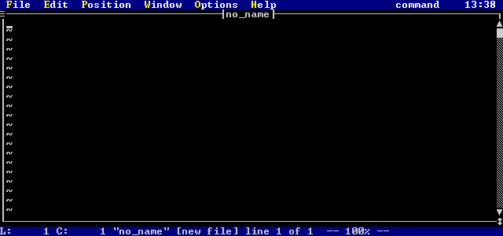
Figure 1. Vi after start-up
The Vi screen has several windows.
- The top line of the screen is the menu bar which contains all of the menu choices, the current mode, and the current
time.
- The large window below the menu bar is the edit window. Since Vi is a multiple file editor, you may have
more than one edit window. Other edit windows are usually covered by the current edit window, unless you change the
size and position of the edit windows.
- The lower left corner of the screen contains the status window. This window typically shows the current row
and column.
- The majority of the bottom of the screen contains the message window. This window displays all errors and
informational messages.
In the edit window will be a flashing line. This flashing line is the cursor, and it indicates which line you are
on and the position within the line.
On the border of the edit window are a number of special symbols. These special symbols are referred to as
gadgets
- In the top left corner of the edit window is the gadget ('') that opens up the menu for the window.
- In the lower right corner of the edit window is the resize gadget ('�'). When you click on this gadget with your
mouse and then drag the mouse, you can resize the edit window.
- On the right hand side of the edit window is the scroll bar. The scroll bar has several components:
- The scroll up ('�') gadget. When you click on this with your mouse, the edit window scrolls up one line.
- The scroll down ('�') gadget. When you click on this with your mouse, the edit window scrolls down one line.
- The scroll thumb ('Û'). The scroll thumb indicates the relative position of the current line in the file.
When you click on the scroll thumb with your mouse and drag it, you can move to a new position in the file. If you
click with your mouse on the scroll bar above the scroll thumb, you move one page up in the file. If you click on the
scroll bar below the scroll thumb, you move one page down in the file.
Basic Usage
Using any editor as powerful as Vi takes some practice. This chapter will lead you through the basics or using Vi
Starting the Open Watcom Vi Editor
Vi is invoked by typing the command
vi
at the command prompt. Try typing this. You will see something similar to the following:
Figure 2. The Vi screen
If you are running DOS on a 386 (or higher) machine, then you can also use the protected mode version of Vi.
This version of Vi runs as a native 386 application, which means that it has access to more memory and will do its
processing more quickly. You can start this version by typing
vip
at the command prompt.
Vi also accepts one or more files as an optional parameter. Each file that you specify will be edited by Vi.
For example, typing
vi test.c
will edit the file test.c. Typing
vi test.c other.c
will edit the files test.c and other.c. Typing
vi *.c
will edit all files that have the extension .c.
To exit Vi, use your mouse to select the File menu, and pick the Exit item. If you do not have
a mouse, press ALT_F (hold down the ALT key and press the letter F) and use the down arrow key to highlight
the Exit item. Pressing the ENTER key selects the Exit item.
What is a Modal Editor?
A modal editor is one where keystrokes have different meaning, depending on what mode you are in. Vi has two main
modes, command mode and text insertion mode.
While in command mode, pressing a key on your keyboard can cause something different to happen. For example,
pressing the letter D (capital 'd') deletes all characters from the current cursor position to the end of the line.
If the same letter 'D' (is pressed while in text insertion mode, the letter 'D' appears in your text (much as you would expect).
It is easy to tell what mode you are in while using Vi. When you are in command mode, the cursor is a thin line.
When you are in text insertion mode, the cursor is much thicker: if you are inserting text, the cursor is one
half of a full block, and if you are overstriking text, the cursor is a full block.
The mode indicator on the menu bar at the top of your screen shows the current mode. While in command mode,
you will see the following:
Mode: command
While in text insertion mode, you will see either:
Mode: insert
or
Mode: overstrike
depending on whether you are inserting or overstriking text.
Vi is in command mode by default. There are numerous ways to enter text insertion mode, the easiest of which
is to press the Insert key on your keyboard.
The ESC key is one of the more important keys in Vi. Pressing ESC once will stop whatever you
are doing and return you to command mode. If you have started a command mode sequence, pressing ESC will cancel
the command and return you to command mode.
Exercises
Start up Vi by typing
vi
at your command prompt.
You will see a screen that looks like the following:
Figure 3. The Vi screen
Press the insert ( INS ) key. The cursor will get larger and you will see the mode indicator change from
Mode: command
to
Mode: insert
Try typing some characters. Notice that they appear in the edit window as you type. When you are done,
press the ESC key. The cursor will get smaller and you will see the mode indicator change from
Mode: insert
to
Mode: command
To exit Vi, use your mouse to select the File menu, and pick the Exit item. If you do not have
a mouse, press ALT_F (hold down the ALT key and press the letter F) and use the down arrow key to highlight
the Exit item. Pressing the ENTER key selects the Exit item.
Once you exit, you will be prompted with a message as follows:
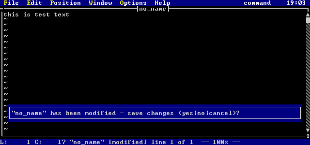
Figure 4. The Really Exit prompt
there are still files that have been modified but not saved. Press 'n' then the ENTER key to exit without
saving your current file.
Some Basic Commands
To begin editing with Vi, there are only a few basic commands that you need to learn. Once you master these few
commands, you will be able to accomplish all basic editing tasks. In later chapters, more sophisticated commands will
be introduced which allow advanced tasks to be completed more quickly.
Moving Around
When you are in command mode, you may move around in your text using various cursor keys. The basic keys that you
use to move around are:
- UP (up arrow key)
- Cursor up through the text.
DOWN (down arrow key)
- Cursor down through the text.
LEFT (left arrow key)
- Cursor left through the text.
RIGHT (right arrow key)
- Cursor right through the text.
HOME
- Move to the start of the current line.
END
- Move to the end of the current line.
PAGEUP
- Move up one page in the text.
PAGEDOWN
- Move down one page in the text.
CTRL_PAGEUP (Ctrl key + Page Up key)
- Move to the first character on the first line in the file.
CTRL_PAGEDOWN (Ctrl key + Page Down key)
- Move to the last character on the last line in the file.
These same cursor keys may also be used when entering text in text insertion mode.
Saving and Exiting a File
Once you have modified a file, may want to save it and either edit other files or exit the editor. When you exit
a modified file, you may want to either discard your changes or keep them.
You can discard ALL of your files by selecting the Exit item in the File menu. Alternatively,
you can discard or save the changes on an individual file basis.
If you wish to save the current file you are editing and leave that particular edit session, the fastest way to do
it is to use the command 'ZZ'. Press ESC to make sure that you are in command mode, and then type two capital
z's ('ZZ') in a row. This saves the file, then exits the edit buffer for the file. If you are editing any other
files, the next one in the list will become the current one. If you are not editing any other files, then Vi will exit.
You may use certain menu items to save or discard changes to your file. The main menu option File (by
clicking on it with the mouse or by pressing ALT_F) has options for saving the current file. As well, each edit
window has a menu associated with it that you can access by pressing ALT_G. You can also access this menu by
clicking on the gadget ('') in the top left hand corner of an edit window. This menu has a number of choices for dealing
with the file.
If you activate the File menu item, either with the mouse or by pressing ALT_F, a menu will be displayed
as follows:
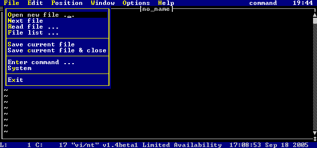
Figure 5. The File Menu
If you select the Save current file item, Vi will save the current file you are editing. You will remain
editing the current file.
If you select the Save current file and close item, Vi will save the current file you are editing, and close
the edit window. If you are editing any other files, the next one in the list will become the current one. If
you are not editing any other files, then Vi will exit.
If you activate the individual file menu either by clicking on the gadget at the top-left corner of the edit window
with the mouse or by pressing ALT_G, then a menu will pop up as follows:
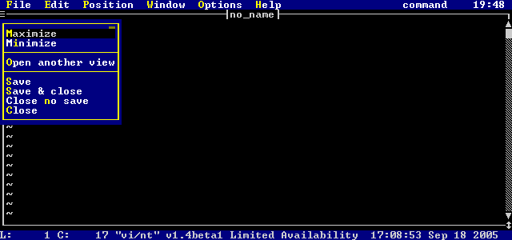
Figure 6. The Individual Edit Window menu
If you select the Save current file item, Vi will save the current file you are editing. You will remain
editing the current file.
If you select the Save & close item, Vi will save the current file you are editing, and exit that edit
buffer. If you are editing any other files, the next one in the list will become the current one. If you are
not editing any other files, then Vi will exit.
If you select the Close no save item, Vi will discard the current file without saving your modifications.
If you are editing any other files, the next one in the list will become the current one. If you are not editing any
other files, then Vi will exit.
If you select the Close item, Vi will try to discard the current file. However, if the file has been
modified, then the option will fail.
Inputting Text
You have already learned that pressing the INS key while in command mode puts Vi into insert mode. Once you
are in insert mode, you may enter whatever text you like. You may cursor around and modify your text in whatever way
you choose. Once you are done, you may press the ESC key to return to command mode.
While you are in text insertion mode, the basic keys that allow you to move through the text are:
- UP (up arrow key)
- Cursor up through the text.
DOWN (down arrow key)
- Cursor down through the text.
LEFT (left arrow key)
- Cursor left through the text.
RIGHT (right arrow key)
- Cursor right through the text.
HOME
- Move to the start of the current line.
END
- Move to the end of the current line.
PAGEUP
- Move up one page in the text.
PAGEDOWN
- Move down one page in the text.
CTRL_PAGEUP (Ctrl key + Page Up key)
- Move to the first character on the first line in the file.
CTRL_PAGEDOWN (Ctrl key + Page Down key)
- Move to the last character on the last line in the file.
These keys allow you to manipulate the text while in text insertion mode:
- CTRL_DEL (Control-Delete)
- Deletes the current line.
BS (Backspace key)
- Deletes the character before the cursor, moving the cursor and the rest of the line to the left one character.
DEL (Delete key)
- Delete the character under the cursor. If you are at the end of the line, DEL has the same effect as pressing
BS.
ENTER
- Start a new line.
INS
- Toggles between inserting and overstriking text.
Along with the INS key, there are a number of other keys that you can press in command mode that will place you
in text insertion mode, where you can edit text. The difference between all of these commands is where the cursor moves
to before you start inputting text. The basic set of keys is:
- a
- Starts appending (inserting) text after the current character.
A
- Starts appending (inserting) text after the last character on the current line.
i
- Starts inserting text at the current cursor position. This is the same as pressing the INS key.
I
- Starts inserting text before the first non-white space character on the current line.
o
- Adds a blank line after the current line, and starts you inserting text on the new line.
O
- Adds a blank line before the current line, and starts you inserting text on the new line.
R
- Starts overstriking text at the current cursor position.
INS
- Start inserting text at the current cursor position.
Remember, while in text insertion mode, the following mode indicator will appear on the menu bar:
Mode: insert
or
Mode: overstrike
depending on whether you are inserting or overstriking text. As well, the cursor will change to a larger block
cursor to help you remember that you are are inputting text.
To exit text insertion mode at any time, press the ESC key. Your mode indicator will switch to
Mode: command
Exercises
- Edit a new file (called "test", for example) as follows:
vi test
You will see the following screen:
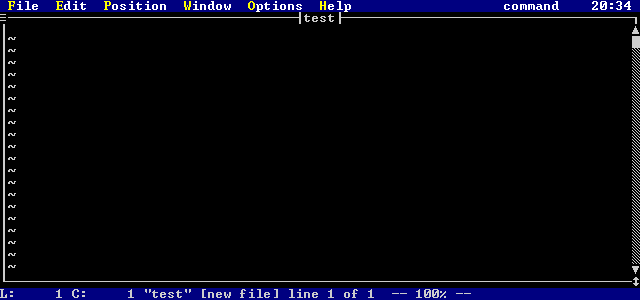
Figure 7. Editing the New File "test"
Note the message window (the bottom two lines of the screen) contains the message
"test" [new file] line 1 of 1 -- 100% --
This message indicates that you are editing a new file called test, that you are on line 1 of a 1 line file, and that
line 1 is 100% of the way into the file.
You may see that message any time by pressing CTRL_G (hold down the Ctrl key and press the g key).
Enter text insertion mode by pressing the INS key, and type the following lines:
This is a test line.
This is another test line.
When you are done typing these lines, remember to press the ESC key to return to command mode.
Press CTRL_G (hold down Ctrl and press the g key). The message window (the bottom two lines of the screen)
will show the message:
"test" [modified] line 2 of 2 -- 100% --
Now, press two capital z's in a row ('ZZ'). This will save the file and return to the operating system command
prompt.
- Edit the file you created in the previous example, by typing
vi test
You will see the following screen:
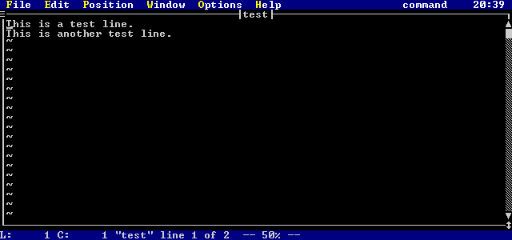
Figure 8. Editing the File "test"
Note the message window (the bottom two lines of the screen) contains the message
"test" line 1 of 2 -- 50% --
This message is different than when you edited "test" for the first time. The "[new file]"
indicator is gone, since you have edited an existing file. This message indicates to you that you are now editing a
file called test, that you are on line 1 of a 2 line file, and that line 1 is 50% of the way into the file.
Now try to experiment with the different ways of entering insert mode.
- Try pressing the 'A'(capital 'a') key. This will move your cursor to the end of the line, and will put you into
insert mode. Try adding some text to this line, and press the ESC key when you are done.
- Try pressing the 'I' key. This will move your cursor to the start of the line, and will put you into insert mode.
Try adding some text to this line, and press the ESC key when you are done.
- Try pressing the 'R' key. This will start you in overstrike mode. Note that the you have a very large cursor
and that the mode indicator says:
Mode: overstrike
Try typing some characters. As you type, what was there already is replaced by what you type. Press the
ESC key when you are done.
- Try pressing the 'i' key. This is the same as pressing the INS key. Now type some text, then press
the INS key. Note that your cursor turned to full height from half height, and the mode indicator changed from:
Mode: insert
to
Mode: overstrike
Now, when you type, you will replace the existing characters. Try pressing the INS key again. This
time, your cursor will turn from full height to half height, and the mode indicator will change from:
Mode: overstrike
to
Mode: insert
Remember to press the ESC key when you are done.
- Try pressing the 'a' key. This will move the cursor over one character, and put you in insert mode. Try cursoring
around inside your text using the arrow keys. Use the END key to move to the end of a line, and the HOME
key to move to the start of a line. Press the ESC key when you are done.
You have now made a number of significant modifications to your file. To discard the file without saving your changes,
activate the individual file menu (at the top-left corner of the edit window) either by clicking on the gadget with the mouse
or by pressing ALT_G. When the menu is up, try selecting the Close item. You will get the message:
File modified - use :q! to force
The command ":q!" being referred to will be discussed later. The file can be exited without saving
by using the Close no save menu item. Activate the individual file menu again, and select this item. This
will discard your changes to the file, and since you are not editing any other files, you are returned to the operating system
command prompt.
Cutting and Pasting Text
So far, you have learned how to edit a file, input some text, and save or cancel your changes. Now you will learn
some simple ways of deleting text and moving it elsewhere.
Lines
The section Inputting Text noted that pressing CTRL_DEL (control-delete) deleted
a line when inputting text. This same command can be used while in command mode.
If you want to delete more than one line at once, you may precede this delete command with a repeat count.
You enter a repeat count simply by typing numbers before you press CTRL_DEL. As you type a number in command
mode, it will appear in a special window, as follows:
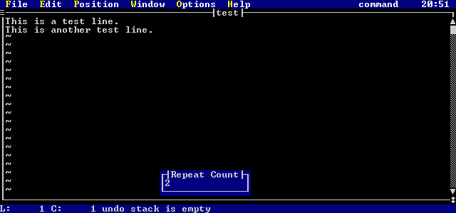
Figure 9. Repeat Count Display
The number that you are typing is displayed in the repeat count window. As with all command mode commands, if
you decide that you have made a mistake, just press the ESC key and the count you have been typing will be cancelled.
So, if you type a repeat count of 5 and then press CTRL_DEL, five lines will be deleted. If you do not
type a repeat count, then one line will be deleted.
You can also delete a line by pressing the 'd' key twice in a row ('dd'). This has the exact same effect as
pressing the CTRL_DEL key. You may precede this command by a repeat count as well. For example, typing
12dd
deletes the next 12 lines in your file.
Once you have deleted some lines, you might want to paste them back in. If you press SHIFT_INS (shift
insert), the line(s) you deleted will be pasted in after the current line. If you press CTRL_INS (control insert),
the line(s) you deleted will be pasted in before the current line (which reverses the action of CTRL_DEL).
There are two other keys for pasting, the letters 'p' and 'P' (small p and capital p). Small 'p' pastes the
line(s) you deleted after the current line, just like SHIFT_INS. Capital p ('P') pastes the line(s) you deleted
before the current line, just like CTRL_INS.
If you do not wish to delete some lines, but you do wish to copy them so you can paste them somewhere else, then you
may use the "yank" command. If you press the letter 'Y', or type the letters 'yy', you will "yank"
(make a copy of) the current line. Just like 'dd' or CTRL_DEL, you can precede these commands with a repeat
count. For example, typing
6Y
or
6yy
will copy 6 lines in your file.
Once you have yanked the lines, you may paste them in, as discussed above.
Characters
To delete characters while in command mode, you can press the DEL key or the 'x' key. The current character
under the cursor will be deleted. You may type a repeat count before you type DEL or 'x', and that will delete
a number of characters. For example, typing 3x when the cursor is on 'T' in the line
Delete Test.
will leave you with
Delete t.
and the cursor will be on the 't' just before the period.
If you wish to delete the character before the cursor, you may press the letter 'X' (capital x). This will delete
the character before the cursor, and move the cursor back one (i.e. the cursor stays on the character that it was on
before you pressed the 'X'). You may use a repeat count with this command. For example, typing 3X when
the cursor is on 'T' in the line
Delete Test.
will leave you with
DeleTest.
and the cursor will still be on the 'T'.
Once you have deleted some characters, you might want to paste them back in. The keys involved are the exact
same keys for pasting lines. The difference is that when you paste characters, the characters are pasted into the current
line, whereas when you paste lines, the lines are pasted above or below the current line.
If you press SHIFT_INS (shift insert), the character(s) you deleted will be pasted in after the current cursor
position on the current line. If you press CTRL_INS (control insert), the character(s) you deleted will be pasted
in before the current cursor position on the current line.
There are two other keys for pasting, the letters p and P (small p and capital p). Small p pastes the
character(s) you deleted after the current cursor position on the current line, just like SHIFT_INS. Capital
p ('P') pastes the character(s) you deleted before the cursor position on the current line, just like CTRL_INS.
Exercises
Edit the file "test" created in the previous examples by typing:
vi test
You should see the lines:
This is a test line.
This is another test line.
The following examples are meant to be tried in sequence. Each example builds on the previous one.
- Copy the first line by pressing the 'Y' (capital 'y') while the cursor is on the first line.
- Now press the 'p' key to paste the line after the current line. You should see the lines:
This is a test line.
This is a test line.
This is another test line.
- Now, go to the second line and yank 2 lines, by pressing the number '2' followed by the letters 'yy'.
- Cursor up to the top line, and press the capital p ('P') key to paste the lines above the current line. You will
see:
This is a test line.
This is another test line.
This is a test line.
This is a test line.
This is another test line.
- Now, move to the top line in the file and delete the first 3 lines by press the number '3' followed by the letters 'dd'.
You will now have the following lines:
This is a test line.
This is another test line.
- Delete the first line by pressing CTRL_DEL or by typing 'dd'. You will be left with a single line:
This is another test line.
- Paste the line you deleted back in. If you press the letter 'p' or SHIFT_INS, the line you deleted will appear
after the first line:
This is another test line.
This is a test line.
- Paste the line above the current line by pressing capital p ('P') or CTRL_INS.
This is a test line.
This is another test line.
This is a test line.
- Delete all 3 lines of text. Make sure your cursor is on the first line in the file, and type 3dd.
This will delete all three lines, and you will have an empty edit buffer.
- Paste the lines back in by typing 'p'. The three lines will be pasted in:
This is a test line.
This is another test line.
This is a test line.
- Go to the first line in the file, and to the first column (try pressing CTRL_PAGEUP ). Then press the 'x'
key. The first line should become:
his is a test line.
Your cursor should be on the letter 'h' in column 1.
- Type the letter 'p'. The 'T' that you deleted will appear after the 'h' in column 1:
hTis is a test line.
- Type capital p ('P'). The 'T' that you deleted will appear before the 'i' and after the 'T' you just pasted in.
hTTis is a test line.
- Cursor to the first column and type 6x. This will delete the first word and the space:
is a test line.
- Move the cursor over to the 't' in 'test'. Press capital x ('X'), and you will see:
is atest line.
The cursor will remain on the 't'.
- Type 3X. You will now see
itest line.
and the cursor will still be on the 't'.
You have now made a number of significant modifications to your file. To discard the file without saving your changes,
activate the individual file menu (at the top-left corner of the edit window) either by clicking on the gadget with the mouse
or by pressing ALT_G. When the menu is up, try selecting the Close item. You will get the message:
File modified - use :q! to force
The command ":q!" being referred to will be discussed later. The file can be exited without saving
by using the Close no save menu item. Activate the individual file menu again, and select this item. This
will discard your changes to the file, and since you are not editing any other files, you are returned to the operating system
command prompt.
Vi comes with a default set of menus that have the following items
File Edit Position Window Options Help
The first letter of each word is highlighted, indicating that that key is the hot key to activate the menu.
To use a hot key, hold down the ALT key and press the highlighted key. This will display the menu.
There is also a menu associated with each edit window. You can activate this window by pressing ALT_G
or by clicking on the gadget in the upper left hand corner of the edit window.
You may activate a menu on the menu bar by pressing the appropriate hot key or by clicking on the word with the mouse.
When you press down with the left mouse button, the menu is activated. If you keep the button down and move the
mouse from right to left across the menu bar, the other menus will activate as the mouse cursor sweeps across the word.
Once a menu is activated, a selection list appears. An item in the selection list may be chosen by doing one
of the following:
- Cursoring up or down to the item and pressing the ENTER key.
- Typing the hot key for the menu item.
- Clicking on an item with the mouse.
- Dragging the mouse and releasing the mouse button on an item.
Once a menu is activated, it may be cancelled by pressing the ESC key, or by clicking the mouse somewhere outside
the menu. If you press the cursor right key, the menu to the right of the menu currently selected will activate.
If you press the cursor left key, the menu to the left of the menu currently selected will activate.
The following sections describe each of the menus, and how each menu item is used.
This menu is selected by pressing ALT_G or by clicking on the gadget in the upper left hand corner of an edit window
with the mouse. Once you have done one of these, the following menu appears:
Figure 10. The Individual Edit Window menu
- Maximize
- Causes the window to become as large as possible.
Minimize
- Causes the window to become as small as possible.
Open another view
- Creates a separate window that is editing the same copy of the current file. This is useful if you wish to be able to
look at one part of a file while editing another part
Save
- Saves the current file. You remain editing the current file.
Save and close
- Saves the current file and closes the window.
Close no save
- Closes the window, discarding the current file and any changes you may have made.
Close
- Closes the window. If the file has been modified, then the close will fail.
This menu is selected by pressing ALT_W or by clicking on word Window on the menu bar with the mouse.
Once you have done one of these, the following menu appears:
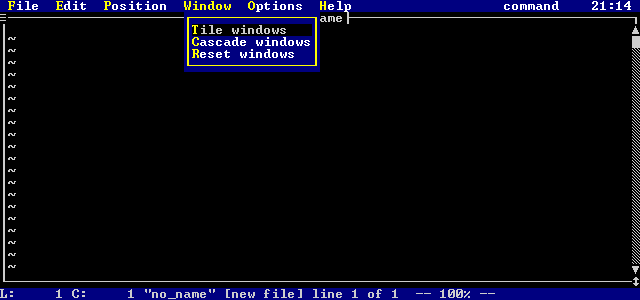
Figure 11. The Window menu
- Tile windows
- Tile all edit windows in a grid pattern, so that each window is displayed without overlapping any other.
Cascade windows
- Causes all edit windows to cascade (overlap each other with the top border of each visible).
Reset windows
- Resets all edit buffer windows to be full size (the same as maximizing each window individually).
This menu is selected by pressing ALT_O or by clicking on word Options on the menu bar with the mouse.
Once you have done one of these, the following menu appears:
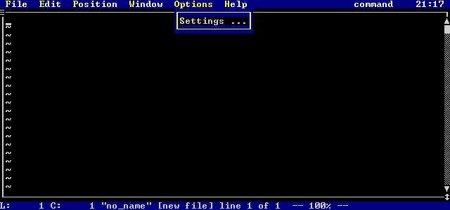
Figure 12. The Options menu
- Settings
- This brings up a list of all settings for Vi. For more information on settings, see the chapter Editor Settings.
This menu is selected by pressing ALT_F or by clicking on the word File in the menu bar with the mouse.
Once you have done one of these, the following menu appears:
Figure 13. The File menu
- Open new file
- Displays a list of all files and directories in the current directory, along with all drives that are available. If
you pick a file, you will edit that file. If you pick a directory, Vi will display all the files in that directory.
If you pick a drive, Vi will display all files in the current directory on that drive.
Next file
- Flip to the next file in the list of files that you are editing.
Read file
- Displays a list of all files and directories in the current directory, along with all drives that are available. If
you pick a file, that file will be read into the current edit buffer, after the current line. If you pick a directory,
Vi will display all the files in that directory. If you pick a drive, Vi will display all files in the current directory
on that drive.
File list
- When selected, a list of all files that you are editing is displayed. Any modified files have an asterisk ('*') before
their name. By picking a file from this list, you move to that file.
Save current file
- Vi will save the current file you are editing. You will remain editing the current file.
Save current file and close
- Vi will save the current file you are editing, and close the edit window. If you are editing any other files, the next
one in the list will become the current one. If you are not editing any other files, then Vi will exit.
Enter command
- Allows you to enter a command line command. The command line is discussed in the next chapter, Intermediate Usage.
System
- Starts an operating system command shell. You exit the command shell by typing 'exit'.
Exit
- Exits all edit sessions, as long as no files have been modified.
This menu is selected by pressing ALT_E or by clicking on word Edit on the menu bar with the mouse.
Once you have done one of these, the following menu appears:
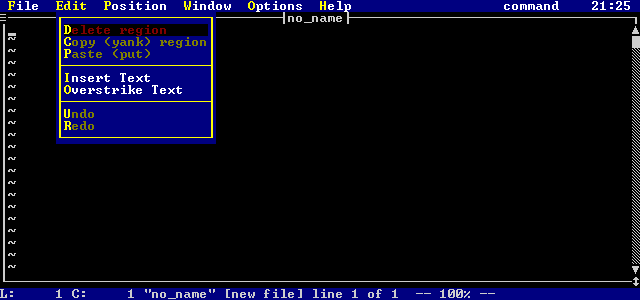
Figure 14. The Edit menu
- Delete region
- Deletes the selected (highlighted) region.
Copy (yank) region
- Makes a copy of the selected (highlighted) region.
Paste (put)
- Pastes the last deleted or copied text into the current edit buffer. The text is pasted after the current position in
the file.
Insert text
- Causes Vi to enter insert mode at the current cursor position.
Overstrike text
- Causes Vi to enter overstrike mode at the current cursor position.
Undo
- Undoes the last change that you made to the current edit buffer. If you keep selecting this item, you will undo more
and more of your changes. If you select this item enough times, your file will be restored to the state when it was
first opened or created.
Redo
- Redoes the last undo that you did in the current edit buffer. If you keep selecting this item, you will redo more and
more of your undos. If you select this item enough times, your file will return to the state when you made your last
change.
This menu is selected by pressing ALT_P or by clicking on word Position on the menu bar with the mouse.
Once you have done one of these, the following menu appears:
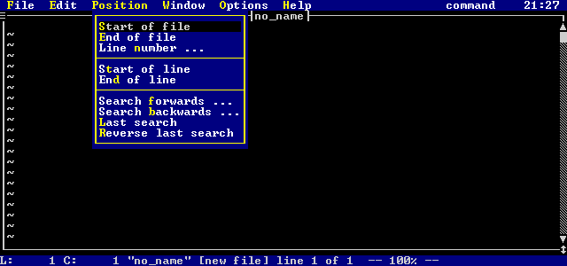
Figure 15. The Position menu
- Start of file
- Moves to the start of the current edit buffer.
End of file
- Moves to the end of the current edit buffer.
Line number
- Prompts for a specific line number. Once you enter the number, you are placed at that line.
Start of line
- Moves to the start of the current line.
End of line
- Moves to the end of the current line.
Search forwards
- Prompts for some search text. Once you type some text and press ENTER, Vi searches forwards through the current
edit buffer for the text. If the text is found, it is highlighted and the cursor is placed on the first character of
the text.
Search backwards
- Prompts for some search text. Once you type some text and press ENTER, Vi searches backwards through the current
edit buffer for the text. If the text is found, it is highlighted and the cursor is placed on the first character of
the text.
Last search
- Repeats the last search that you typed, in the same direction as the initial search request.
Reverse last search
- Repeats the last search that you typed, but the searches occurs in the opposite direction of the initial search request.
This menu is selected by pressing ALT_H or by clicking on word Help on the menu bar with the mouse.
Once you have done one of these, the following menu appears:
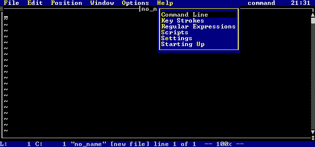
Figure 16. The Help menu
- Command line
- Gives help on all command line commands.
Keystrokes
- Gives help on command mode and text insertion mode
Regular expressions
- Gives help on the search and replace abilities of Vi's regular expressions.
Scripts
- Gives help on Vi's script language.
Starting up
- Gives help on the various command line parameters for Vi.
This chapter discusses a number of the commonly used features of the Open Watcom Vi Editor. The knowledge of the
information in the chapter Basic Usage is assumed.
The Command Line
The Open Watcom Vi Editor has a powerful set of commands that are entered in a special command window. These commands
are referred to as command line commands. You can activate the command window in two ways:
- Select the Enter command item under the File menu.
- Press the colon (':') key when in command mode. Remember to press the ESC key to ensure that you are in command
mode before pressing ':'.
Once you have done one of the previous things, the following window will appear on your screen:
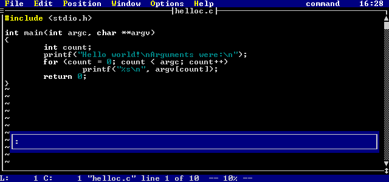
Figure 17. The Command Entry window
You may enter a command in this window (for example: quit). If you wish to cancel the command that you
are typing, just press the ESC key and the window will disappear.
You may cursor back and forth in the command window, and use the backspace and delete keys to change mistakes.
Once you press ENTER, the command will be processed.
If you cursor up, you will go through a list of commands that you have entered at the command window (newest to oldest).
This is your command history. Cursoring down will take you through the history from oldest to newest.
This is very useful if you have typed a complicated command and did not get it quite right or if you just wish to execute
the command again.
The chapter Editor Commands describes the command line in more detail.
Line Numbers
Some command line commands accept a line address or a line range as a parameter. For example, when specifying the
WRITE command, you may specify
:write
or you may specify
:1,10 write
A line address is a number or a sum of numbers. As well, some special symbols may be used:
- . (dot)
- Represents the current line number.
$ (dollar)
- Represents the last line number.
'a (front quote)
- Indicates the line with the mark 'a' set; marks 'a' through 'z' may be used. Marks are discussed later in this chapter.
A line range is two line addresses separated by a comma.
Some examples of line addresses and line ranges are:
.+5 - five lines past the current line.
'a - the line with mark a.
$ - the last line
1,5 - lines 1 to 5
.,$ - current line in file to end line of file
.-3,100 - the line 3 before the current to line 100
Line addresses are discussed in greater detail in the section Line Addresses.
If you just enter a line address on its own on the command line, then you will go directly to that line.
Exercises
- Start up Vi, and try selecting the File menu, and then selecting the Enter command item. Notice how
the window pops up. Try typing and cursoring around. When you are done, press the ESC key to cancel the
command.
- Make sure that you are in command mode, then press the colon (':') key. Once again, the command window pops up.
Try typing and cursoring around. When you are done, press the ESC key to cancel the command.
- Add 10 lines to your file. Then press the colon (':') key and enter the number 5. You will go to line 5.
Try entering different numbers and see what happens. If you enter a line number that does not exist, you will see the
message:
No such line
- Now that you have a number of commands entered, try cursoring up and down in the command window. You will see all
the commands that you have typed.
Getting a File for Editing
In the chapter Basic Usage, you saw that you could edit a file by either specifying the name
on the command line when invoking Vi, or by selecting the File menu and picking the Edit new file option.
The general way to edit a new file is to use the command line command EDIT. To enter this
command, make sure that you are in command mode and press the colon (':') key. Once the command prompt is displayed,
then simply type EDIT (optionally followed by a file name or a list of files), and then press ENTER.
If you do not specify a file, then a directory listing is displayed. From this listing, you may pick a file,
another directory, or another drive (the available drives are at the end of the listing). A directory is indicated
by the leading backslash ('\'). If a directory is chosen in this window, then the list of files in that directory is
displayed. This list also contains all the drives available (which are enclosed in square brackets, e.g. [c:]).
If you select a drive, the list of files in the current directory on that drive is displayed.
For files and directories, each line indicates the file name, the various attributes of the file ([d]irectory,
[a]rchive, [h]idden, [s]ystem, [r]eadable, [w]riteable, e[x]ecutable), the
file size in bytes, the date and time of the last file update. Some sample lines are:
test.c -a--rw- 25586
08/16/92 08:14
bar.c -a--r--
639 02/27/92 13:25
\tmpdir d---rw-
0 08/16/92 19:05
[c:]
You may also specify one or more files after the EDIT command. If a file you specify is
the same as one already being edited, then control is simply transferred to the window with that file.
Exercises
- Start up Vi without any files specified. Then try entering the command line command EDIT without
any parameters (remember to press the colon (':') key first). You will see a screen similar to the following:
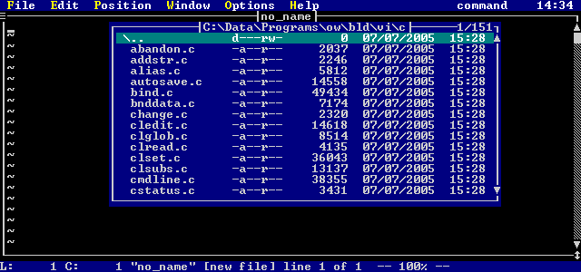
Figure 18. File Selection display
Try changing to other directories or drives with this list. When you are done, press the ESC key to cancel
the selection list.
- Try entering the following command line
:e afile
This will cause Vi to start editing a new file called "afile".
- Try entering the command
:e bfile cfile
This will cause Vi to edit two new files, one named "bfile" and one named "cfile".
- Enter the command
:e afile
This returns you to the first file ("afile") that you were already editing.
- Press CTRL_C, and Vi will quit all the files that you have started editing.
Moving Between Files
There are a number of ways to move between files that you are editing. As you have seen in the previous section,
you can move to a file that you are already editing by using the command line command EDIT and specifying
the name of the file you wish to move to.
You may press the F1 key while in command mode or text insertion mode. This function key moves you to
the next file in the list of files that you are editing.
You may press the F2 key while in command mode or text insertion mode. This function key moves you to
the previous file in the list of files that you are editing.
The previous two function keys that you may use also have command line equivalents. The command line command
NEXT moves you to the next file in the list of files that you are editing.
The command line command PREV moves you to the previous file in the list of files that you are
editing.
It is also possible to display a list of all files that you are currently editing. You may press the F7
key in either command mode or text insertion mode, or enter the command line command FILES. Doing
any one of these things will cause a list of all files currently being edited to appear. An asterisk ('*') will precede
files that have been modified. From this list, you may go to one of the files, quit one of the files, or save one of
the files then quit it.
Exercises
- Start up Vi in the following way:
vi a b c
This will cause you to edit three new files. Now, press the F7 key. The following will appear:
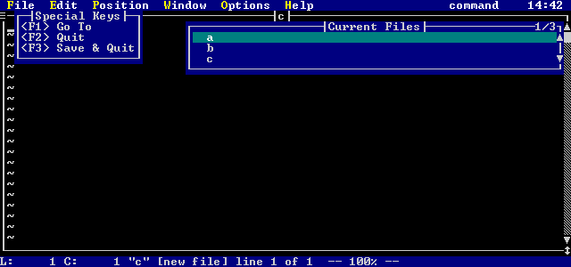
Figure 19. Current File List
Select the file b. That file will become the current file being edited.
- Type the command line
:files
You will see the same result as you saw in the previous example. Press the ESC key to cancel this display.
- Press the F1 key several times. You will rotate through the three files that you are editing.
- Press the F2 key several times. You will rotate through the three files that you are editing, but in the
opposite order than when you were pressing the F1 key.
- Use the command line commands NEXT and PREV to move through the files. These
commands behave the same as pressing F1 and F2.
Moving Around in a File
You have already learned to use the cursor keys to move around through a file. When you are in command mode, there
are a number of keys that also cause movement through the file. Many of these keys may be preceded with a repeat count.
You enter the repeat count by typing a number (which will be echoed in a special window on the screen).
Once you have entered the repeat count, you may cancel it by pressing the ESC key, or you may follow it with
a movement command. For example, if you type:
3<Down Arrow Key>
you will move down three lines instead of one.
The basic command mode movement commands are:
- UP (up arrow key)
- Cursor up through the text.
DOWN (down arrow key)
- Cursor down through the text.
LEFT (left arrow key)
- Cursor left through the text.
RIGHT (right arrow key)
- Cursor right through the text.
HOME
- Move to the start of the current line.
END
- Move to the end of the current line.
PAGEUP
- Move up one page in the text.
PAGEDOWN
- Move down one page in the text.
CTRL_PAGEUP (Ctrl key + Page Up key)
- Move to the first character on the first line in the file.
CTRL_PAGEDOWN (Ctrl key + Page Down key)
- Move to the last character on the last line in the file.
There are additional commands that move you around the file which do not require your fingers to move off the home row
of your keyboard. For a touch typist, this is a great advantage. For a list of all of the movement commands,
see the section Movement in the chapter Modes. The following list of movement
commands move you around on the current line:
- $ (dollar sign)
- Move to the end of the current line.
0 (zero)
- Move to the start of the current line.
b
- Move backwards to the previous word on the current line. If preceded with a repeat count, you move back that many words.
h
- Move right through the text. If preceded with a repeat count, then you move right that many characters.
l
- Move left through the text. If preceded with a repeat count, then you move left that many characters.
w
- Move forward to the next word on the current line. If preceded with a repeat count, you move forward that many words.
B
- Move backwards to the previous whitespace delimited word on the current line. If preceded with a repeat count, you move
back that many words.
W
- Move forward to the next whitespace delimited word on the current line. If preceded with a repeat count, you move forward
that many words.
The following list of movement commands move you to other lines:
- CTRL_B
- Move back one page in the text. If preceded with a repeat count, you will move back that many pages.
CTRL_D
- Move down one half page in the text. If preceded with a repeat count, then you move forward that many lines. As
well, any future CTRL_D or CTRL_U commands issued will move that many lines, instead of a half page.
CTRL_F
- Move forward one page in the text. If preceded with a repeat count, you will move forward that many pages.
CTRL_U
- Move up one half page in the text. If preceded with a repeat count, then you move backwards that many lines. As
well, any future CTRL_U or CTRL_D commands issued will move that many lines, instead of a half page.
j
- Move down through the text. If preceded with a repeat count, then you move down that many lines.
k
- Move up through the text. If preceded with a repeat count, then you move up that many lines.
G
- Moves to the last line in the file. If preceded with a repeat count, then you move to that line in the file.
H
- Move to the top of the current edit window. If preceded with a repeat count, you move that many lines from the top of
the edit window.
L
- Move to the bottom of the current edit window. If preceded with a repeat count, you move that many lines from the bottom
of the edit window.
M
- Move to the middle of the current edit window.
Exercises
- Edit a new file, "atest". Once you have edited this file, add the line:
This is a test line.
Once you have done this, copy this line by pressing 'Y'. Press 'p' to paste in the copy. Press 'p' 28
more times, so that you create a file with 30 lines in it (all just like the first line).
- So that we can more easily see the results, type the following command line:
:%s/^/\# /
This is a substitution command. It will replace the start of each of your lines with the line number.
We will learn about the substitution command in the next chapter. When you are done, you should see a screen similar
to the following:
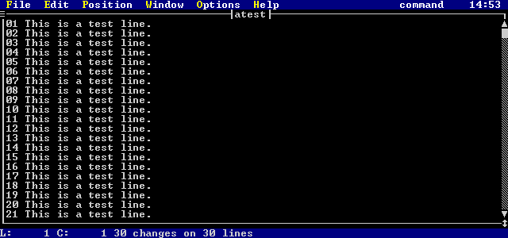
Figure 20. "ATEST" File Contents
- Press the 'G' key. You will move to the last line of the file.
- Type the following:
15G
This will move you to line 15.
- Try using CTRL_F and CTRL_B. Notice that they behave just like PAGEUP and PAGEDOWN.
- Try using 'w' and 'b' to move forward and backwards through words in the file.
- Try using 'j' and 'k' to cursor up and down in the file.
- Try using 'l' and 'h' to cursor left and right in the file.
- Press the 'H' key. The cursor will move to the top line in the edit window.
- Press the 'L' key. The cursor will move to the bottom line in the edit window.
- Try typing some numbers before pressing the 'H' and 'L' keys. For example, typing
3H
will move your cursor to the 3rd line from the top of the edit window.
- Press the 'M' key. The cursor will move to the middle of edit window.
- Press the '$' key. The cursor will move to the end of the current line.
- Press the '0' (zero) key. The cursor will move to the start of the current line.
- Press CTRL_D. You will move down half a page
- Type the number '2' and then press CTRL_D. Notice that you only move down 2 lines.
- Press CTRL_D. You will move down 2 lines.
- Press CTRL_U. You will move up 2 lines.
- Press 'ZZ' to save the file. This file will be used in later exercises.
Saving and Exiting a File Revisited
We have already seen in the section Saving and Exiting a File a number of ways
to save and exit your files. These methods included typing 'ZZ' and using the menus.
There are a number of different command line commands that can be used for saving and/or quitting your files.
- QUIT ("!") or q ("!")
- QUITALL
- WRITE ("!") or w ("!")
- WQ
- XIT
The QUIT command is used to exit a file without saving it. If the file has been modified, the
command will fail and the message:
File modified - use :q! to force
will be displayed. To quit a modified file, the exclamation point ('!') is used:
:quit!
or
:q!
This discards the contents of the current edit buffer.
To quit every file that you are editing, the QUITALL command is used. If no files have
been modified, then you will immediately exit Vi. If files have been modified, you will be asked to verify whether
or not you really want to exit the editor.
The WRITE command is used to write the current file. If you specify a file name, the edit
buffer will be written to a file with that name.
:write new.txt
writes out a new file with the name new.txt.
If the file name you specify already exists, you will see the message:
File exists - use w! to force
To overwrite an existing file, use the exclamation point ('!'):
write! new.txt
or
w! new.txt
If you are specifying a new file name, you may also specify a line range to write to that new file. Some examples
are:
:1,100 write new.txt - write the first 100 lines to "new.txt".
:50 write a.txt - write
line 50 to "a.txt"
The WQ (write and quit) and the XIT (exit) commands both do the same thing.
They write out the current file if it has been modified, and then exit the file. This is the exact same as typing 'ZZ'
in command mode.
Exercises
- Edit a file as follows:
vi abc
Add the lines:
Line 1.
Line 2.
Line 3.
- Enter the command line command QUIT (remember to press the colon (':') key to bring up the command
window). You will see the message:
File modified - use :q! to force
Press CTRL_G. The message window will indicate the following:
"abc" [modified] line 3 of 3 -- 100% --
As you can see, the file has been modified, so you are not allowed to quit.
- Enter the command line command WRITE. You will see the message:
"abc" 3 lines, 27 bytes
This indicates that the file has been written. Now press CTRL_G, and you will see:
"abc" line 3 of 3 -- 100% --
Notice that the file no longer is marked as modified once it is written.
- Try the command line command QUIT again. This time, you will be able to quit the file, since
the file has been written, and is no longer marked as modified.
- Re-edit the file "abc". Enter command:
:1,2 w def
This will write out a new file called "def". Now quit Vi.
- Edit the file "def". Notice that it contains the lines
Line 1.
Line 2.
These are the first two lines of "abc", that you wrote to this file. Try entering the command:
:write abc
You will see the message
File exists - use w! to force
Since "abc" already exists, you are not allowed to overwrite it, unless you specify the exclamation point,
as follows:
:write! abc
- Re-edit the file "abc". Delete the last line. Press CTRL_G, and you will see that the file
is modified. Now, enter the command line command (remembering to press ':'):
:q!
You will exit the file, even though it has been modified.
- Re-edit the file "abc", and delete the last line. Enter the command line command XIT.
This will save the file and exit it, and because you are not editing any other files, you will exit Vi. You could
also use the command WQ to do the same thing. Both of these commands do the same thing as pressing
'ZZ' while in command mode.
- Start up Vi as follows:
vi abc def
This will edit two files, "abc" and "def". Enter the command line command QUITALL
and you will exit Vi.
- Repeat the previous example, but add a line to one of the two files. Now enter the command line command QUITALL.
In this case, you will be prompted with
Files are modified, really exit?
Reply with a 'y', and you will exit Vi, even though files are modified.
Using the Mouse
You may use the mouse for many things. You may select text, relocate the cursor, resize a window, move a window,
use the scroll bar, or use the menus.
Text selection will be discussed in the next section. Using menus with the mouse was discussed in the previous
chapter, in the section Using the Menus.
By simply moving your mouse cursor to a location in an edit window and clicking the left mouse button, the cursor
will move to that position.
By moving your mouse to the top border of an edit window and pressing down the left mouse button, you can move the
window around by moving your mouse. When you release the button, the window will move to the new position.
By moving your mouse to the bottom right hand corner of an edit window (to the vertical two-headed arrow) and pressing
down the left mouse button, you can resize the window by moving your mouse. When you release the left button, the window
will be redrawn in its new size.
Edit windows have scroll bars which indicate the position in the file and allow you to position to different portions
of the file. The scroll thumb (the solid block on the scroll bar) indicates the relative location of your current cursor
position in the file. If the scroll thumb is at the top, then you are on the top line of the file. If it is at
the bottom, then you at the end of the file.
By left-clicking on the single arrows at the top or the bottom of the scroll bar, the edit window will scroll up or
down a single line. If you hold the left mouse button down, then the window will scroll continuously.
If you click the left mouse button in the scrollbar region between the thumb and the top arrow, you will move up a
page in the file you are editing. If you click the left mouse button below the scroll thumb, you will move down a page
in the file you are editing. If you hold the left mouse button down, then you will page continuously.
By pressing and holding down the left mouse button on the scroll thumb, you can set the edit position yourself.
As you drag the scroll thumb up and down, the edit window will be redrawn to show you the corresponding portion of your file.
Selecting Text
Vi has the ability to highlight (select) text, either on an individual line or a group of lines, and then do various actions
on the highlighted (selected) text.
You may select text with either the keyboard or the mouse. The keyboard interface is as follows:
- SHIFT_UP (shifted cursor up key)
- Starts or continues selection and moves up to the previous line. The new line is selected.
SHIFT_DOWN (shifted cursor down key)
- Starts or continues selection and moves down to the next line. The new line is selected.
SHIFT_LEFT (shifted cursor left key)
- Starts or continues selection and moves left to the next character. The new character is selected.
SHIFT_RIGHT (shifted cursor right key)
- Starts or continues selection and moves right to the previous character. The new character is selected.
CTRL_R
- Starts text selection, if no text is selected. The current character is highlighted. If a region is already selected,
then this cancels the selected region.
ESC
- Cancels the current selection.
Once text selection has been started, then any movement command may be used to expand or shrink the selected region.
Multiple line selections always select complete lines. A portion of a single line can be selected (i.e. a word)
by growing the selection left or right. A portion of a line is called a column region and a multiple line selection
is called a line region.
You can select text with the mouse by holding down the right or left mouse button, and moving the mouse up and down
or left and right. When using the right button, a selection menu will appear after the mouse button is released , from
which you choose what you wish to do with the selected text.
If you highlight a region by holding down the left button and moving the mouse, then releasing the button has no effect
(the region simply remains highlighted). This region may then be operated on from the command line, using different
command mode commands, or by right-clicking the mouse in the selected region.
If you click the right mouse button (right-click) while the mouse cursor is in a highlighted (selected) set of lines,
then a selection menu for the lines appears. If you right-click in a selected group of characters on a single line
(a column region) then a selection menu for that column region appears. The two menus are different. You may
also bring up these menus by pressing the underscore ('_') key.
If you click the right mouse button (right-click) in an unselected region, the current word will be highlighted and
the selection menu will appear. This can also be accomplished by pressing the underscore ('_') key.
If you double click the left mouse button, the current word will be highlighted and the selection menu will appear.
However, the word selected here is slightly different than the word selected by clicking the right mouse button.
This word is defined to include the characters '.', ':' and '\', so that double clicking the left mouse button on a file
name will select the entire path.
Exercises
- Edit the file "atest" created in the Exercises section of Moving Around in a File.
Click the left mouse button when the mouse cursor is on the top line, and drag your mouse down until the first 10 lines
are selected. If you do not have a mouse, then press the shift key and cursor down until the first 10 lines are selected.
Now, click the right mouse button somewhere inside the selected region. If you do not have a mouse, press the
underscore ('_') key. A menu will appear. The selected region and the menu will appear as follows:
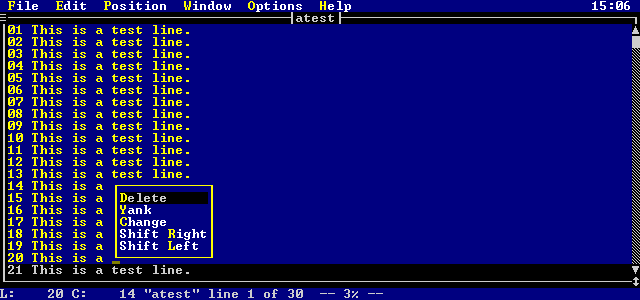
Figure 21. Selected Lines menu
From this menu, you can either delete or yank (copy) the lines. You may cancel the menu by pressing ESC
(the region remains highlighted). You can cancel the selected region by pressing ESC again.
If you click your left mouse button somewhere outside the selected region, both the menu and the selected region will
be cancelled.
- Make sure the selected region is cancelled (press ESC until it is gone). Now press the right mouse button
on the word "This" in the first line of the file. If you do not have a mouse, then position the cursor somewhere
in the word "This" and press the underscore ('_') key. You will see the following menu appear:
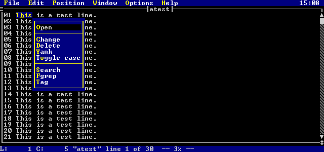
Figure 22. Selected Columns menu
You may do a number of things from the popup menu:
- Open
- Open (edit) the file indicated by the highlighted (selected) text. The selected text is treated like a file name, and
an edit session for that file is started. The file will be given the name of the highlighted text.
Change
- Change the selected word.
Delete
- Delete the selected word.
Yank
- Yank (copy) the selected word.
Fgrep
- Search the current directory for any files containing the selected word. See the command line command FGREP
in the chapter Editor Commands for more information.
Tag
- Search your tags file for the selected word. See the command line command TAG in the chapter Editor Commands
for more information.
- Make sure the selected region is cancelled. Then add the following line to the start of the file (use the command
mode key capital o ('O') to open a line above the first line):
#include <c:\h\test.h>
Now, try right mouse clicking on parts of the file name. Notice how only individual pieces of the file name
are selected. Now, try double clicking the left mouse button somewhere on the file name. The menu from the previous
example will appear, selecting the entire file name as shown below:
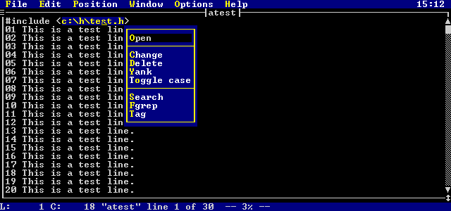
Figure 23. Double Click Selection
- Try using CTRL_R to start a selection and then move around in your file. Use the ESC key to cancel
your selection.
- Try using the shifted cursor keys to select lines. Use the ESC key to cancel your selection.
Joining Text
Vi has the ability to join two lines together. If you press the letter 'J' (capital 'j') while in command mode,
then the next line will join to the end of the current line. All white space except for a single space will be removed.
For example, typing 'J' while on the first line in these two lines:
This is a line.
This is another line.
produces the line:
This is a line. This is another line.
If you precede 'J' with a repeat count, then that many lines after the current line will be joined to the current
line. For example, typing
4J
while on the first line of:
Line 1.
Line 2.
Line 3.
Line 4.
Line 5.
Line 6.
will produce the result:
Line 1. Line 2. Line 3. Line 4. Line 5.
Line 6.
There is also a command line command called JOIN that is used to join lines of text together.
This command is used as follows:
<linerange> join
The lines in the specified range <linerange> are joined together. If a single line number is specified,
then the line after that line is joined to the specified line. If no line number is specified, then the line after
the current line is joined to the current line. For example, the command:
:1,5 join
will cause the lines 1 through 5 of the file to be joined into a single line.
Using Marks
Text marks are used to memorize a position in the edit buffer that you may want to return to later. Each file may
have up to 26 marks in it (identified via the letters 'a' through 'z'). Marks may also be set with the command line
command MARK.
A mark is useful in that you do not have to remember a specific line number, you just need to remember the letter
that you picked for the mark name. You can then return to the line or even the exact position on the line easily.
You may set a mark by pressing the letter 'm' (in command mode) and pressing one of the letters from 'a' to 'z'.
For example, if you type
ma
you will set the mark 'a' at the current position in the file, and you will see the following message appear:
Mark 'a' set
You can set a mark with the command line command MARK. The syntax of the command is
<line> mark <letter>
You specify which line the mark is to be set on with <line>. If no line is specified, the current
line is assumed. You specify the mark id ('a'-'z') with <letter>.
For example, the following command line commands may be used to set marks:
mark a - sets the mark 'a' on the current line.
5 mark b - sets the mark 'b' on line 5.
Once you have set a mark, you may return to the mark by pressing either the front quote (apostrophy) (') or the back
quote (`), followed by the letter of the mark you wish to return to. Using the back quote causes you to return to the
row and column position of the mark. Using the front quote (apostrophy) causes you to return to the line with the mark
(the cursor moves to the first column on the line).
For example, after setting the mark 'a', you can return to it by typing:
'a - return to the line with the mark 'a'.
`a - return to the exact position with the mark 'a'.
Marks are useful when you need to go searching a file for something, but you want to be able to return to a specific
position. They are also useful when deleting and copying text (see the section Deleting, Copying, and Pasting Text
later on in this chapter).
For more information on marks, see the section Marks in the chapter Modes.
Exercises
- Edit the file "atest" created in the Exercises section of Moving Around in a File.
Cursor to the letter 'i' in the word 'is' on the first line, and type
ma
This will set the mark 'a' at that position.
- Page down twice. Now, type
`a
You will be moved to the 'i' in the word 'is' on the first line.
- Page down twice. Now, type
'a
You will be moved to the first column of the first line.
- Go to the bottom of the file. Now, enter the command line command MARK as follows (remember
to press colon (':') to bring up the command window)
:mark z
- Go to the top of the file (using CTRL_PAGEUP), and enter the command line
:'z
This will return you to the last line of the file
- Now, type the following command line
:'a
This will take you back to line 1, where you set the mark 'a'.
Searching for Text
You can search a file for a string in either a forwards or backwards direction. By using the command mode key '/',
you are prompted for a string to search for in the forwards direction. By using the command mode key '?', you are prompted
for a string to search for in the backwards direction.
When the string is found, your cursor is moved to the first character of the string, and the string is highlighted.
If the string (for example, "abc") is not found, you will see the message:
String 'abc' not found
When you press '/' (forward search), the following window will appear:
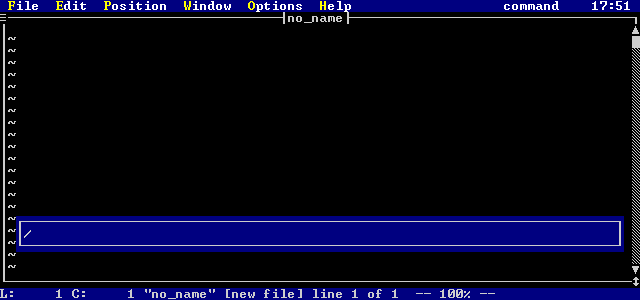
Figure 24. Search String Entry Window
This window behaves just like the command window: you may cursor back and forth in the command window, and use
the backspace and delete keys to change mistakes. Once you press ENTER, the command will be processed.
If you press ESC, the search in cancelled.
If you press '?' (backwards search), you will be able to enter a backwards search string.
If you press 'n', Vi will take you to the next occurrence of the last search string, searching in the same direction
as the last search command.
If you press 'N', Vi will take you to the next occurrence of the last search string, only it will search in the opposite
direction as the last search command.
You can use complex search strings known as regular expressions. Certain characters have special meaning
in a regular expression, they are:
^ $ . [ ( ) | ? + * \ @
If you wish to search for any of these special characters, you must place a backslash ('\') before the character.
For example, to search for:
ab.c$
you have to enter:
ab\.c\$
For information on regular expressions, see Regular Expressions.
The section Searching in the chapter Modes describes the searching in
more detail.
Exercises
- Edit the file "atest" created in the Exercises section of Moving Around in a File.
Press the forward slash ('/') key, and enter the string "this". The word "This" on the first
line will be highlighted, and your cursor will be on the 'T'. (notice that the search is case insensitive).
- Now press, the 'n' key. You will move to the word "This" on the second line.
- Press 'n' two more times. You will now be on the word "This" on the fourth line.
- Press 'N'. You will move to the word "This" on the third line.
- Press the question mark ('?') key, and enter the string "1". You will move to the '1' on the first line.
- Press 'n'. The search will wrap around to the end of the file, and search backwards until the '1' on line 21 is
encountered.
- Press 'n'. You will move to the '1' on line 19.
- Press 'N'. You will move back to the '1' on line 21.
Deleting, Copying, and Pasting Text
There are two useful commands in Vi for deleting and copying text. In command mode, you press the 'd' key to start
the delete sub-mode. You press the 'y' key to start the yank (copy) sub-mode. Each of these sub-modes is indicated
on the mode indicator on the menu bar:
Mode: delete
or
Mode: yank
Once you have entered the sub-mode, you can then specify one of the following operations:
- A movement command. See the section Movement for a full description of all movement commands.
If a movement command is specified, then the range that the command will act on is from the current position to the
position that would be achieved by using the movement command.
- A search command:
- / (forward slash)
- ? (question mark)
- n
- N
See the section Searching for a full description of the searching commands. If a search
command is specified, then the range that the command will act on is from the current position to the position that would
be achieved by using the search command.
- The current selected (highlighted) region. In this case, <oper> is the r key.
- The same character as the command character. This causes the command to operate on the current line.
Some examples are:
dw - delete a word
yr - yank (copy) highlighted region
d/text - delete up to the word "text".
These commands can be preceded by an optional repeat count. This repeat count specifies the number of times
that the command will be executed. If the repeat count is not specified, the command is executed once. For example:
3dw - delete 3 words
2yy - copy 2 lines
A copy buffer can be specified between the repeat count and the command. The buffer is identified by preceding
it with double quotes ("). For example:
3"ayy - copy 3 lines into buffer 'a'.
"zdd - delete 3 lines into buffer 'z'.
The optional copy buffer is a place where deleted or yanked text resides. If you do not specify a buffer, then
the active copy buffer is assumed. There are 9 numbered buffers (1-9) that may be selected as the active buffer (buffer
1 is the default active buffer). When text enters the active copy buffer, the old contents of the active buffer spills
into the next buffer. The contents of each buffer spills into the next, with the end buffer (9) losing its contents.
The active copy buffer may be selected by pressing CTRL_F1 through CTRL_F9 in command mode. When
you do this, a message appears showing you which buffer has been selected, how many lines/characters are in the buffer, and
the first line of the buffer.
There are also 26 named buffers, 'a' through 'z'. The contents of these buffers is constant over the life of
your editing session. They retain their contents until you update them.
For more information on copy buffers, see the section Copy Buffers in the chapter Modes.
There is also a DELETE command line command and a YANK command line command
for deleting and yanking text. These commands only operate on line ranges. Their syntax is:
<range> delete <"?>
<range> yank <"?>
The <"?> indicates a copy buffer, and <range> indicates a line range. If no line
range is specified, then the current line is assumed. Some examples are:
:1,5 delete - delete lines 1 to 5
:1,$ yank "a - copy all lines into buffer 'a'
:d
- deletes the current line
In the section Cutting and Pasting Text in the previous chapter, you learned
about the small 'p' and the capital 'p' ('P') command mode commands to put (paste) copied or deleted text into the edit buffer.
Remember, small 'p' is used to paste after the current cursor position, and capital 'p' ('P') is use to paste before
the current cursor position.
If what you deleted or yanked was a sequence of characters on a single line, then these characters are inserted into
the current line when you paste. If you deleted or yanked whole lines, then those lines are inserted around the current
line when you paste.
The put (paste) command line commands accept a copy buffer as the buffer to paste out of. The default is the
active copy buffer, but any buffer can be specified. Once again, <"?> indicates a copy buffer:
<"?>p
<"?>P
As well, there is a command line command for pasting text: the PUT command. The syntax
is:
<line> put <!> <"?>
If the line <line> is specified, then the buffer is pasted around the specified line instead of the current
line.
If the exclamation mark is specified, then contents of the copy buffer are pasted before the specified line.
Otherwise, the contents of the copy buffer are pasted after the specified line.
The <"?> is an optional copy buffer. If it is not specified, then the active copy buffer is
used. The double quotes (") must be specified.
Deleting text is discussed in more detail in the section Deleting Text in the chapter
Modes.
Copying text is discussed in more detail in the section Copying Text in the chapter Modes.
Exercises
- Edit the file "atest" created in the Exercises section of Moving Around in a File.
Press 'dd'. This will delete the first line of the file.
- Press 'dw'. This will delete the first word of the line.
- Press 'd$'. This will delete to the end of the line.
- Press 'dj'. This will delete the current line and the next line.
- Press '2dw'. This will delete the first two words of the current line:
04 This is a test line.
leaving you with
is a test line.
- Press '2w'. This will move you to the letter 't' in "test". Press capital p ('P'). The 2 words
you deleted will be inserted before the 't':
is a 04 This test line.
- Type the following command mode keys:
"add
You will see the message:
1 lines deleted into buffer a
- Press 'p'. Note that you inserted the two words you deleted before into the current line.
- Type:
"ap
This will insert the contents of buffer 'a' (line line you deleted) after the current line.
- Type the following:
2"byy
This will copy the next two lines into buffer "b". You will see the message
2 lines yanked into buffer b
- Type:
"bP
This will insert the two lines you yanked before the current line.
- Type
3"zyw
This will yank three words into copy buffer 'z'.
- Make sure you are in command mode and enter the command line
:q!
to exit without saving your changes.
Altering Text
You could change text by deleting the text and then entering insert mode. However, Vi provides a special method
for doing both of these things at once. By pressing the 'c' key in command mode, you enter the change sub-mode.
You will see the mode line indicate:
Mode: change
If you are changing characters on a line, the characters will be highlighted. If you press the ESC key,
the change will be cancelled. Once you type a character, the characters will be deleted and you will enter text insertion
mode.
If you are changing whole lines, the lines are deleted and you enter text insertion mode.
Once you have entered the change sub-mode, you can then specify one of the following operations:
- A movement command. See the section Movement for a full description of all movement commands.
If a movement command is specified, then the range that the command will act on is from the current position to the
position that would be achieved by using the movement command.
- A search command:
- / (forward slash)
- ? (question mark)
- n
- N
See the section Searching for a full description of the searching commands. If a search
command is specified, then the range that the command will act on is from the current position to the position that would
be achieved by using the search command.
- The current selected (highlighted) region. In this case, <oper> is the r key.
- The same character as the command character. This causes the command to operate on the current line.
Some examples are:
cw - change current word
c$ - change to the end of the current line
You can also specify an optional repeat count before the change command. This will cause the change command
to be repeated that many times. For example:
2cw - change two words
3cc - change three lines
The changing of text is discussed in greater detail in the section Changing Text of the
chapter Modes.
Exercises
- Edit the file "atest" created in the Exercises section of Moving Around in a File.
Type 'cw'. This first word "01" will be highlighted. Press ESC. The word will return
to normal, and nothing will happen.
- Type 'cw' again. This time, type the following:
This is new text.
and press the ESC key to exit text insertion mode. Your original line:
01 This is a test line.
will now be:
This is new text. This is a test line.
- Type '2cc'. The first two lines will be deleted, and you will enter text insertion mode. Type the following:
This is more new text.
- Return to command mode by pressing the ESC key. Cursor to the letter 'i' in the word "is" and type
'c$'. This will highlight from the letter 'i' to the end of line. Enter the text:
This is more new text.
- Make sure you are in command mode and enter the command line
:q!
to exit without saving your changes.
Undo and Redo
Vi has an unlimited undo capacity (constrained only by memory and disk space). Every change that you make to a file
is remembered, and can be undone in the reverse order that you made the changes.
A change can be undone by pressing the letter 'u' while in command mode. You can undo further changes by pressing
'u' repeatedly.
If you undo a change you wanted to keep, you can redo it by pressing capital 'u' ('U'). Each time you
press 'U', an undo is re-done. Once you undo changes, you cannot redo them after you modify the file.
The command line command for undoing changes has the following syntax:
undo
If you specify an exclamation point ('!') after the UNDO (command) keyword, then you
will do a redo instead of an undo:
undo!
See the section Undoing Changes in the chapter Modes for more
information.
Exercises
- Edit the file "atest" created in the Exercises section of Moving Around in a File.
Delete the first line, delete the second line, then delete the third line (one at a time). Then, press 'u' in
command mode. The third line will come back.
- Press 'u' again. The second line will come back.
- Enter the command line command:
:undo
The first line will come back.
- Enter the command line command
:undo
again. This undo command cannot do anything, since you have already undo all the changes to your file.
You will see the message
No more undos
appear.
- Press the capital u ('U') key in command mode. The first line will now disappear, as you are undoing your undo.
- Press 'U' again. The second line will disappear.
- Enter the command line command (remember to press ':'):
undo!
The third line will disappear.
- Enter the command line command:
undo!
You will see the message:
No more undos
Repeating Edit Operations
When you enter a command mode command to modify your file you can re-execute the sequence by pressing the dot ('.') key.
For example, suppose you entered the command mode command:
3dd
to delete 3 lines. If you press '.' after this, you will delete another 3 lines.
There are two useful extension to this as well. Vi has concepts known as memorize mode and alternate
memorize mode. You enter memorize mode by pressing the letter 'm' (also used to set a mark) followed by a dot ('.').
You will then see the message
Memorize Mode started
From this point forward, every key that you type is memorized. When you are done memorizing, you can then press
the dot ('.') key while in command mode, and this ends memorize mode. You will see the message:
Memorize Mode ended
Once you have memorized a key sequence, you can re-execute it by pressing dot ('.'). This will cause Vi to behave
as if all the keys you memorized were being typed by you again.
The memorized sequence will be lost the next time you change the text other than with '.'. To memorize a sequence
that will always be remembered, you can use alternate memorize mode. This mode is used the same way as memorize
mode, only you use an equals sign ('=') instead of a dot ('.').
Exercises
- Edit the file "atest" from the Exercises section of Moving Around in a File.
Delete the first two lines by typing the command mode command:
2dd
Now press the dot ('.') key. Two more lines will be deleted.
- Move to the first column of the first line. Type the command mode command:
m.
This will start you in memorize mode. Now, type:
dwjdwj.
This deletes the word on the first line, goes down to the next line, deletes another word on the next line, and goes
down one more line. The final dot ('.') terminates memorize mode.
- Now, press dot ('.'). This will delete the first word of the next two lines.
- Make sure you are in command mode and enter the command line
:q!
to exit without saving your changes.
Advanced Usage
This chapter discusses a number of the less commonly used features of the Open Watcom Vi Editor. The knowledge of
the information in the chapter Basic Usage and Intermediate Usage
is assumed.
The Substitute Command
The command line command SUBSTITUTE is a powerful mechanism for changing text in your file.
For every match of a string, the string can be replaced with something else.
You can use complex search strings known as regular expressions. Certain characters have special meaning
in a regular expression, they are:
^ $ . [ ( ) | ? + * \ @
If you wish to search for any of these special characters, you must place a backslash ('\') before the character.
For example, to search for:
ab.c$
you have to enter:
ab\.c\$
For information on regular expressions, see Regular Expressions.
The syntax of the SUBSTITUTE command is:
<linerange> substitute /<string>/<subs>/"g""i"
The line range <linerange> specifies the lines that the SUBSTITUTE command
is to work on. If no line range is specified, then the current line is assumed.
The first occurrence of the search string <string> on each line is replaced with the string <subs>.
If the letter 'g' is specified at the end, then every occurrence of the search string <string> on each
line is replaced with the string <subs>.
If the letter 'i' is specified at the end, then the substitution is interactive. You will be prompted before
each replacement to verify that you want it to be done.
Exercises
- Edit the file "atest" created in the Exercises section of Moving Around in a File
in the previous chapter Intermediate Usage. Enter the command line command (remember
to press colon (':') to bring up the command window):
:1,$s/This/This This/
All lines will have the word "This" replaced with "This This".
- Enter the command line command:
:1,$s/This/Change/
Notice that only the first occurrence of the word "This" was replaced.
- Type the letter 'u' in command mode to undo the change you just made. Then enter the command line command:
:1,$s/This/Change/g
Now all of the occurrences of "This" were replaced.
- Make sure you are in command mode and enter the command line
:q!
to exit without saving your changes.
The Global Command
The command line command GLOBAL is a method of executing a command on every line that has (or does
not have) a specific string.
You can use complex search strings known as regular expressions. Certain characters have special meaning
in a regular expression, they are:
^ $ . [ ( ) | ? + * \ @
If you wish to search for any of these special characters, you must place a backslash ('\') before the character.
For example, to search for:
ab.c$
you have to enter:
ab\.c\$
For information on regular expressions, see Regular Expressions.
The syntax of the GLOBAL command is:
<linerange> global "!" /<string>/ <cmd>
The line range <linerange> specifies the lines that the GLOBAL command is to work
on. If no line range is specified, then all the lines in the file is assumed.
The command line command <cmd> will be executed on every line that has the string <string>.
If the exclamation mark ('!') is used, then the command line command <cmd> will be executed on every
line that does not have the string <string>.
Exercises
- Edit the file "atest" created in the Exercises section of Moving Around in a File
in the previous chapter Intermediate Usage. Enter the command line command (remember
to press colon (':') to bring up the command window):
:g/This/delete
Each line that contains the word "This" on it will have the DELETE command executed
on it.
- Press the 'u' key to undo the previous global command, then enter the command line command:
:g/1/delete
All lines with the character '1' in them will be deleted.
- Press the 'u' key to undo the previous global command, then enter the command line command:
:g!/1/delete
All lines without the character '1' in them will be deleted.
- Make sure you are in command mode and enter the command line
:q!
to exit without saving your changes.
Searching Files For Text
There are command line commands provided to search through all files for some text. These commands differ from the
search commands outlined in the section Searching for Text in the previous chapter in that
they search files in directories rather than files that are being edited. These file search commands are FGREP
and EGREP.
The FGREP command is a fast search for a specified string. The syntax of this command is:
fgrep "-c" "-i" <string> <files>.
The file list <files> is searched for the string <string>.
If you wish to have spaces in your string, then you can enclose the string in either double quotes ('"') or forward
slashes ('/').
If -c is specified, then the search is made case sensitive. If -i is specified, then the search
is made case insensitive. If neither of these options is specified, then case sensitivity is determined by the current
caseignore setting (for more information about caseignore,see the section
Boolean Settings in the chapter Editor Settings).
The EGREP command searches for regular expressions, and is slower than the FGREP
command. The syntax of this command is:
egrep <regexp> <files>.
The file list <files> is searched for the regular expression <regexp>.
If you wish to have spaces in your regular expression, then you can enclose the string in either double quotes ('"')
or forward slashes ('/').
For example, entering the following command:
:fgrep window *.c
searches all files in the current directory ending in the extension .c for the string window. While searching
for the item, Open Watcom Vi Editor displays a window that shows all files being searched.
When all matches are found, a selection window is presented with all the files that contained the search string.
The selection window appears as follows:
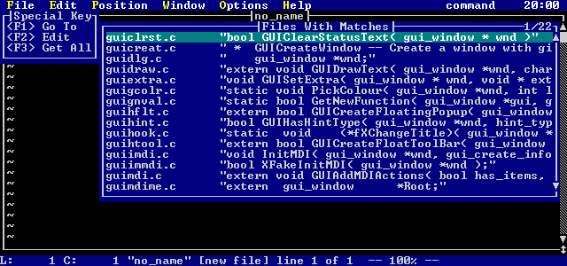
Figure 25. FGrep result display
Mapping Keys
A powerful feature in Open Watcom Vi Editor is the ability to change the meaning of any key in command mode or text insertion
mode. Using this feature, you can configure the editor any way which suits your needs.
The command line commands MAP and MAPBASE are used to remap the definition
of a key. The syntax of these commands is as follows:
map "!" <key> <string>
mapbase <key> <string>
Both commands remap the specified key <key> to execute the characters in <string>.
Whenever the specified key is pressed while in command mode, it is equivalent to typing the characters in <string>.
In the MAP command, specifying the exclamation point ('!') causes the map to be for text insertion
mode, rather than command mode.
It is possible for <string> to contain keys that are mapped themselves. If you want to do a key
mapping that is in terms of the base definitions of the keys, then you should use the MAPBASE command.
To remove the mapping of a key, the command line command UNMAP is used. The syntax of this
command is:
unmap <key>
If you need to specify a special key (e.g. ENTER, F1, etc) for <key> you specify a symbolic name
for it. There are a number of pre-defined key symbols that are recognized when specifying which key is being mapped
or unmapped. These are described in the Appendix Symbolic Keystrokes.
If you need to use one or more special keys (e.g. ENTER, F1, etc) in <string> then you may enter:
- \<"key">
- Any special key may be inserted for "key". The angle brackets are required. There are a number
of pre-defined keys symbols that are recognized. These are described in the Appendix Symbolic Keystrokes.
\e
- Short form for the escape key (rather than \<ESC>).
\n
- Short form for the enter key (rather than \<ENTER>).
\h
- If a command line command is used in the sequence, and it follows the colon (':'), the command is not added to the history.
For example:
:\hdate\n
will display the current date and time, but the command will not enter the command history.
\x
- If a command line command is used in the sequence, then this stops the command window from opening. This prevents the
"flashing" of the command window as it is opened then closed. For example:
\x:date\n
will display the current date and time, but the command window will not be displayed.
Exercises
- Edit the file "atest" created in the Exercises section of Moving Around in a File
in the previous chapter Intermediate Usage. Enter the following command line command:
:map F5 dd
Now, whenever you press F5, a line will be deleted. Try pressing F5 a few times to verify this.
- Enter the command line command
:unmap F5
and try pressing F5 again. It will no longer delete lines.
- Enter the command line command
:map F6 :date\n
Press F6. The time and date will be displayed in the message window. You will notice that the command
window flashes as you push F6.
-
:map F6 \x:date\n
Press F6. The time and date will be displayed in the message window. You will notice that the command
window no longer flashes.
- Bring up the command window ( press ':') and press cursor up. You will notice that the date commands are in your
history. Now, enter the command line command:
:map F6 \x:\hdate\n
Press F6 a few times. Bring up the command window again and cursor up. You will see that the date
commands did not get added to the history.
- Enter the command line command:
:map! F6 \edwi
Whenever you press F6 in text insertion mode, you will exit insert mode (the \e is like pressing the ESC
key), delete the current word, and then re-enter insert mode. Try entering text insertion mode and pressing F6.
- Exit text insertion mode and press F6. You will notice that the date is still displayed, since the text insertion
mode and command mode mappings for F6 are different.
- Make sure you are in command mode and enter the command line
:q!
to exit without saving your changes.
The Open Watcom Vi Editor Environment
Along with the Open Watcom Vi Editor executable, there are a number of files that are needed:
- ed.cfg
- The configuration script (contains editor setup)
keys.dat
- Symbolic key names used by the command line commands MAP, MAPBASE, UNMAP,
EXECUTE and KEYADD.
errmsg.dat
- The text strings for Vi's various error messages.
error.dat
- Symbolic names for errors that can occur. These are used for testing return codes in editor scripts.
The editor searches for its special files as follows:
- The editor executable itself (if the files are bound).
- The current directory.
- Directories in the EDPATH environment variable.
- Directories in the PATH environment variable.
The environment variable EDPATH is used so that the support files for Vi do not have to be in your PATH.
Only Vi itself has to be in your PATH.
Using Edbind
Edbind is a utility designed to place any specified files onto the end of the editor executable. The file edbind.dat
contains the list of all files to bind. This would normally include ed.cfg and all the .dat files. This
eliminates the need to have these files in your path, and allows Vi to locate the files faster.
Note that your configuration file must be the FIRST FILE in the edbind.dat file. The first file is
designated to be the file containing the configuration script, the name is irrelevant.
The contents of edbind.dat might be as follows:
ed._vi
rdme._vi
wrme._vi
rcs._vi
qall._vi
proc._vi
err._vi
chkout._vi
forceout._vi
unlock._vi
mcsel._vi
mlsel._vi
lnum._vi
keys.dat
errmsg.dat
error.dat
In this example, edbind.dat contains the special files ed.cfg, all the .dat files, and a number
of compiled editor scripts (the files with the ._vi extension).
Usage is as follows:
edbind <editor exe name> (-s)
Options -s: strip info from executable
The files in edbind.dat files are searched for in the following order:
- The current directory.
- The directories in the environment variable EDPATH .
- The directories in the environment variable PATH
Invoking the Open Watcom Vi Editor
Vi is invoked from the command prompt with the following possible set of parameters:
vi [-?-dinqrvz] +<n> -k "keys" [-s <scr> [-p "parm"]]
[-t <tag>]
[-c <cfg>] files
The files specified may contain regular expressions.
The parameters cause the following:
- -?
- Displays the possible options, and what they do.
--
- Starts Vi in stdio mode. In this mode, Vi reads from standard in to get the file to edit. When the file
is written, the lines are written to standard out. This is useful for including Vi in a pipe.
-d
- Use default configuration. Vi will not invoke ed.cfg when it starts up.
-i
- Ignore lost files. Vi will not let you start if there are files to be recovered. This option will cause Vi to
get rid of its checkpoint file, so that it will no longer complain about files that have not been recovered.
-n
- This option will cause Vi to read a file as it needs the data, instead of reading the file all at once. It is useful
if you wish to look at the first lines of a huge file. This option overrides any setting of readentirefile
in your configuration.
-q
- Causes Vi to run in quiet mode (no screen usage). This is useful for using Vi as a batch script processor.
-r
- Recover lost files, if there are any. If this option is specified, files specified on the command line are ignored.
-v
- Causes file edited to be a "view only" file.
-z
- Causes Vi not to terminate a file read when finding a ctrl-z in a file. This option is the same as the ignorectrlz
setting.
+<n>
- Cause Vi set the edit buffer to line <n> in the file edited.
-k "keys"
- Execute the string keys as if they were typed from the keyboard. These keystrokes are processed once Vi is initialized
and all files have been read in.
-s <scr>
- Runs the startup script <scr> once Vi is initialized and all files have been read in. Up to 10 startup
scripts may be specified.
-p "parms"
- Specify the parameters parms for each startup script. Multiple parms may be specified as long as they are in
double quotes. The parameters are associated with the most recently specified startup script.
-t <tag>
- Edits the file containing the tag <tag>.
-c <cfg>
- Runs the configuration script <cfg>, instead of the default ed.cfg.
Lost File Recovery
Vi has an autosave feature that periodically makes a backup copy of the current edit buffer. This backup is kept
in the directory specified by the tmpdir setting.
The autosaveinterval setting is used to specify the number of seconds between backups
of the current edit buffer. If autosaveinterval is set to 0, then the autosave feature
is disabled.
Vi keeps a lock file called alock_?.fil in its tmpdir. The question mark ('?')
will be a letter. There may be more than one lock file, if more than one copy of Vi is running on the current machine.
Vi keeps a checkpoint file called asave_?.fil. The question mark ('?') will be a letter. Once a
file is autosaved, its name is added to this checkpoint file. When the file is discarded, its name is removed from
this checkpoint file. So, if for any reason, you lose your editing session, this checkpoint file will contain information
about what files were being edited at the time. Assuming tmpdir has been set to D:\TMP, then
a example of what asave_?.fil could contain is:
d:\tmp\aaaaa23j.tmp e:\c\test.c
d:\tmp\baaaa23j.tmp e:\h\test.h
d:\tmp\caaaa23j.tmp c:\autoexec.bat
The file e:\c\test.c was being edited, and its backup is stored in d:\tmp\aaaaa23j.tmp.
The file e:\h\test.c was being edited, and its backup is stored in d:\tmp\baaaa23j.tmp.
The file c:\autoexec.bat was being edited, and its backup is stored in d:\tmp\caaaa23j.tmp.
You do not need use this information in order to recover lost files, however, this is useful to know if you wish to
look at the files before recovering them.
If a checkpoint file exists when Vi is started, then the following message will appear:
Files have been lost since your last session, use -r to recover or
-i to ignore
Vi cannot be invoked until either -i or -r is specified.
If -i is specified, then the checkpoint files are erased and Vi starts up normally. The .tmp files that contain
the lost files still remain in the backup directory, however.
If -r is specified, then Vi recovers the lost files. Note that the recovered files must be saved in order to
overwrite the original copy.
Modes
The Open Watcom Vi Editor is a modal editor. When you are in command mode (the default mode), there are a number
of valid keys that may be pressed. To ensure that you are in command mode, press the ESC key until the mode
indicator on the menu bar displays:
Mode: command
When in text insertion mode, text may be entered. There are two aspects to text insertion mode: insert
and overstrike. Text insertion mode is entered via a number of different commands from command mode,
and is indicated by a larger cursor, along with a mode line indication. The types of cursor are controlled with the
commandcursortype, insertcursortype, and overstrikecursortype
settings.
When Vi is in a text insertion mode, the mode indicator on the menu bar displays one of:
Mode: insert
or
Mode: overstrike
Text Insertion Mode
When in text insertion mode (either inserting or overstriking), you may enter text and freely cursor about through the
file. When you are finished adding text, the ESC key returns you to command mode.
It should be remembered that an undo applies to changes caused by commands; so all changes made while in text insertion
mode are part of a single undo record. For more information on undos, see the section Undoing Changes
later on in this chapter.
The following keys, when pressed in command mode, place you into text insertion mode:
- a
- Starts appending (inserting) text after the current character in the edit buffer.
A
- Starts appending (inserting) text after the last character on the current line in the edit buffer.
C
- Changes text from the current position to the end of the current line. Deletes the text, and enters text insertion mode.
<n>c<oper>
- Change command. Deletes the text in the range specified by <oper>, and enters text insertion mode.
g
- Starts inserting or overstriking text at the current cursor position, depending on how you were adding text the last time
you were in text insertion mode.
i
- Starts inserting text at the current cursor position.
I
- Starts inserting text before the first non-white space character on the current line.
o
- Opens a line after the current line, and enters text insertion mode.
O
- Opens a line before the current line, and enters text insertion mode.
R
- Starts overstriking text at the current character in the edit buffer.
<n>s
- Substitute <n> characters. The first <n> characters from the current cursor position are deleted,
and text insertion mode is entered.
<n>S
- Substitute lines of text. <n> lines from the current line forward are deleted, and text insertion mode
is entered.
INS
- Start inserting text at the current cursor position.
Special Keys
While in text insertion mode, certain keys do special things. These keys are:
- Arrow Keys
-
- Up
- Cursor up through the text.
DOWN
- Cursor down through the text.
LEFT
- Cursor left through the text.
RIGHT
- Cursor right through the text.
Text Selection Keys
-
- SHIFT_UP (shifted cursor up key)
- Starts or continues selection and moves up to the previous line. The new line is selected.
SHIFT_DOWN (shifted cursor down key)
- Starts or continues selection and moves down to the next line. The new line is selected.
SHIFT_LEFT (shifted cursor left key)
- Starts or continues selection and moves left to the next character. The new character is selected.
SHIFT_RIGHT (shifted cursor right key)
- Starts or continues selection and moves right to the previous character. The new character is selected.
CTRL_R
- Starts text selection, if no text is selected. The current character is highlighted. If a region is already selected,
then this cancels the selected region.
ESC
- Cancels the current selection.
CTRL_PAGEUP
- Moves to the first non-white space character on the first line of the current edit buffer.
CTRL_PAGEDOWN
- Moves to the last character on the last line of the current edit buffer.
SHIFT_DEL
- Deletes the currently selected region into the active copy buffer.
SHIFT_INS
- Pastes the active copy buffer into the text after the current position.
SHIFT_TAB
- Move back to the previous tab stop, deleting the characters before the cursor.
CTRL_DEL (ctrl-delete)
- Delete the current line into the active copy buffer.
CTRL_INS (ctrl-insert)
- Pastes the active copy buffer into the text before the current position.
CTRL_D
- Move backwards shiftwidth spaces, deleting the characters before the cursor. A shiftwidth
is a number that you may set, its default value is 4.
CTRL_T
- Insert shiftwidth spaces. If realtabs is set, then once tabamount
spaces are inserted, the spaces are replaced with a tab character.
CTRL_V
- The next key typed is inserted directly, without any interpretation.
CTRL_Q
- The next key typed is inserted directly, without any interpretation.
BS
- Backspace one on the current line, deleting the character before the cursor.
DEL
- Delete the character under the cursor. If you are at the end of the line, DEL has the same effect as pressing
BS.
ENTER
- Start a new line.
END
- Move to the end of the current line.
HOME
- Move to the start of the current line.
INS
- Toggles between insert and overstrike mode.
PAGEUP
- Move up one page in the text.
PAGEDOWN
- Move up down one page in the text.
TAB
- Move forward to the next tab stop. If realtabs is set, a tab character is inserted into the
file. Otherwise, spaces are inserted.
Command Mode
The following command mode command descriptions show items within angle brackets (<>). The angle brackets
are there to indicate items that you may supply. You are not required to type the brackets. For example, <n>
simply means that in the corresponding place in the command you can enter a number.
Many commands may be preceded with a repeat count, which is indicated by a <n> before a command.
The number is not required; if it is not supplied, it is usually assumed that a 1 was entered for the repeat count.
As long as the setting repeatinfo is enabled, the number that is typed appears in a special window
called the COUNTWINDOW.
Other commands may be preceded with a copy buffer name, which is indicated with a <"?>. If
you do not want the result of the operation to be copied into the active buffer, then an alternate buffer may be specified.
The double quotes (") are required (this indicates that an alternate buffer is being specified), and then a buffer
'1'-'9' or 'a'-'z' is specified. See the section Copy Buffers for more information.
Movement
The following are command mode commands that cause movement in the current edit buffer.
- <n>| (or bar)
- Move to the column number specified by <n>.
- Example(s):
-
|
Move to column 1 of the current line.
15|
Move to column 15 of the current line.
`<?> (back quote)
- Moves to the mark position (line and column) specified by <?> See the section Marks for
more information.
Also see the command line command MARK.
- Example(s):
-
`a
Move to the line and column with mark a.
'<?> (front quote)
- Move to the start of line with the mark <?>. See the section Marks for more information.
Also see the command line command MARK.
- Example(s):
-
'z
Move to the start of the line with mark z.
% (percent)
- Moves to matching brace or other defined match string. Defaults are "{","}" and "(",")".
For example, by pressing % while on the first opening brace ('(') on the line:
if( ( i=foo( x ) ) ) return;
moves the cursor to the last closing brace (')') on the line. It is possible to set arbitrary pairs of match
strings using the command line command MATCH.
$ (dollar)
- Moves the cursor to the last character on the current line.
^ (caret)
- Moves the cursor to the first non-whitespace character on the current line.
; (semi-colon)
- Repeats the last f, F, t or T movement commands.
, (comma)
- Repeats the last f, F, t or T movement commands, but the search is done in the opposite direction.
If the last movement command was an F then an f movement command is executed. If the last movement
command was a t then a T movement command is executed.
Similarly, if the last movement command was an f then an F movement command is executed. If the
last movement command was a t then a T movement command is executed.
<n>- (dash)
- Moves the cursor to the start of the previous line. If a repeat count <n> is specified, then you are moved
up <n> lines.
<n>+ (plus)
- Moves the cursor to the start of the next line. If a repeat count <n> is specified, then you are moved
down <n> lines.
0
- Moves the cursor the first character of the current line.
CTRL_PAGEUP
- Moves to the first non-white space character on the first line of the current edit buffer.
CTRL_PAGEDOWN
- Moves to the last character on the last line of the current edit buffer.
<n>DOWN
- Move the cursor down one line. <n> is specified, the cursor moves down <n> lines.
END
- Moves the cursor to the last character on the current line.
<n>ENTER
- Moves the cursor to the start of the next line. If a repeat count <n> is specified, then the cursor is
moved down <n> lines.
HOME
- Moves the cursor the first character of the current line.
<n>LEFT
- Move the cursor left one character. If <n> is specified, the cursor moves left <n> characters.
<n>PAGEDOWN
- Moves forwards one page. If a repeat count <n> is specified, then you are moved ahead <n>
pages. The number of lines of context maintained is controlled by the pagelinesexposed
setting.
<n>PAGEUP
- Moves backwards one page. If a repeat count <n> is specified, then you are moved back <n>
pages. The number of lines of context maintained is controlled by the pagelinesexposed
setting.
<n>RIGHT
- Move the cursor right one character. If <n> is specified, the cursor moves right <n> characters.
<n>SHIFT_TAB
- Moves the cursor left by tabamount characters. A repeat count <n> multiplies this.
<n>TAB
- Moves the cursor right by tabamount characters. A repeat count <n> multiplies
this.
<n>UP
- Move the cursor up one line. <n> is specified, the cursor moves up <n> lines.
<n>CTRL_B
- Moves backwards one page. If a repeat count <n> is specified, then you are moved back <n>
pages. The number of lines of context maintained is controlled by the pagelinesexposed
setting.
<n>CTRL_D
- Move down a certain number of lines. The default is to move down half a page. If the repeat count <n>
is specified, then that becomes the number of lines moved from then on. Also see the CTRL_U key.
<n>CTRL_E
- Expose the line below the last line in the current edit window, leaving the cursor on the same line if possible. If
a repeat count <n> is specified, then that many lines are exposed.
<n>CTRL_F
- Moves forwards one page. If a repeat count <n> is specified, then you are moved ahead <n>
pages. The number of lines of context maintained is controlled by the pagelinesexposed
setting.
<n>CTRL_N
- Move the cursor to the next line. If a repeat count <n> is specified, then you are moved down <n>
lines.
<n>CTRL_P
- Move the cursor to the previous line. If a repeat count <n> is specified, then you are moved up <n>
lines.
<n>CTRL_U
- Move up a certain number of lines. The default is to move up half a page. If the repeat count <n>
is specified, then that becomes the number of lines moved from then on. Also see the CTRL_D key.
<n>CTRL_Y
- Expose the line above the first line in the current edit window, leaving the cursor on the same line if possible. If
a repeat count <n> is specified, then that many lines are exposed.
<n>B
- Moves the cursor backwards to the start of previous space delimited word on the current line.
- Example(s):
-
B
If the cursor was on the right parenthesis (')') of
x = foo(abc) + 3;
then the cursor moves to the f in foo.
2B
If the cursor was on the right parenthesis (')') of
x = foo(abc) + 3;
then the cursor moves to the = sign.
<n>b
- Moves the cursor backwards to the start of the previous word on the current line. A word is defined using the word
setting. The default is that any characters in the set ( _, a-z, A-Z, 0-9 ) are considered
part of a word, and all other characters (except for whitespace) are delimiters. Groups of delimiters are considered
to be a word as well.
- Example(s):
-
b
If the cursor was on the right parenthesis (')') of
x = foo(abc) + 3;
then the cursor moves to the letter a in abc.
2b
If the cursor was on the right parenthesis (')') of
x = foo(abc) + 3;
then the cursor moves to left parenthesis (.
<n>E
- Moves the cursor to the end of the next space delimited word on the current line.
- Example(s):
-
E
If the cursor was on the letter f in
x = foo(abc) + 3;
then the cursor moves to the right parenthesis ).
2E
If the cursor was on the letter f in
x = foo(abc) + 3;
then the cursor moves to the + sign.
<n>e
- Moves the cursor to the end of the next word on the current line. A word is defined using the word
setting. The default is that any characters in the set ( _, a-z, A-Z, 0-9 ) are considered
part of a word, and all other characters (except for whitespace) are delimiters. Groups of delimiters are considered
to be a word as well.
- Example(s):
-
e
If the cursor was on the letter f in
x = foo(abc) + 3;
then the cursor moves to the second letter o in foo.
2e
If the cursor was on the letter f in
x = foo(abc) + 3;
then the cursor moves to the left parenthesis (.
<n>F<?>
- Moves the cursor backwards from its current position to the character <?> on the current line. If a repeat
count <n> is specified, then the nth occurrence of the character <?> is moved to.
- Example(s):
-
F+
If the cursor is on the semi-colon (';') in
x = foo(abc) + 3;
The the cursor is moved to the + sign.
2Fo
If the cursor is on the semi-colon (';') in
x = foo(abc) + 3;
The the cursor is moved to the first o in foo.
<n>f<?>
- Moves the cursor forwards from its current position to the character <?> on the current line. If a repeat
count <n> is specified, then the nth occurrence of the character <?> is moved to.
- Example(s):
-
f+
If the cursor is on the character x in
x = foo(abc) + 3;
The the cursor is moved to the + sign.
2fo
If the cursor is on the character x in
x = foo(abc) + 3;
The the cursor is moved to the second o in foo.
<n>G
- Goes to the line specified by the repeat count <n>. If no repeat count is specified, you move the the last
line in the current edit buffer.
- Example(s):
-
100G
Moves to line 100 in the current edit buffer.
G
Moves to the last line in the current edit buffer.
<n>h
- Move the cursor left one character. If <n> is specified, the cursor moves left <n> characters.
<n>H
- Moves to the line at the top of the current file window. If a repeat count is specified, then you are moved to that
line relative to the top of the current file window.
- Example(s):
-
2H
Moves to the second line from the top of the current file window.
H
Moves to the line at the top of the current file window.
<n>j
- Move the cursor down one line. <n> is specified, the cursor moves down <n> lines.
<n>k
- Move the cursor up one line. <n> is specified, the cursor moves up <n> lines.
<n>L
- Moves to the line at the bottom of the current file window. If a repeat count is specified, then you are moved to that
line relative from the bottom of the current file window.
- Example(s):
-
2L
Moves to the second line from the bottom of the current file window.
L
Moves to the line at the bottom of the current file window.
<n>l
- Move the cursor right one character. If <n> is specified, the cursor moves right <n> characters.
M
- Moves the cursor to the line in the middle of the current file window.
<n>T<?>
- Moves the cursor backwards from its current position to the character after the character <?> on the current
line. If a repeat count <n> is specified, then the the character after the nth occurrence of the character
<?> is moved to.
- Example(s):
-
T+
If the cursor is on the semi-colon (';') in
x = foo(abc) + 3;
The the cursor is moved to the space after the + sign.
2To
If the cursor is on the semi-colon (';') in
x = foo(abc) + 3;
The the cursor is moved to the second o in foo.
<n>t<?>
- Moves the cursor forwards from its current position to the character before the character <?> on the current
line. If a repeat count <n> is specified, then the the character before the nth occurrence of the character
<?> is moved to.
- Example(s):
-
t+
If the cursor is on the character x in
x = foo(abc) + 3;
The the cursor is moved to the space before + sign.
2to
If the cursor is on the character x in
x = foo(abc) + 3;
The the cursor is moved to the first o in foo.
<n>W
- Moves the cursor forward to the start of the next space delimited word on the current line.
- Example(s):
-
W
If the cursor was on the letter f in
x = foo(abc) + 3;
then the cursor moves to the + sign.
2W
If the cursor was on the letter f in
x = foo(abc) + 3;
then the cursor moves to the number 3.
<n>w
- Moves the cursor forward to the start of the next word on the current line. A word is defined using the word
setting. The default is that any characters in the set ( _, a-z, A-Z, 0-9 ) are considered
part of a word, and all other characters (except for whitespace) are delimiters. Groups of delimiters are considered
to be a word as well.
- Example(s):
-
w
If the cursor was on the letter f in
x = foo(abc) + 3;
then the cursor moves to the left parenthesis (.
2w
If the cursor was on the letter f in
x = foo(abc) + 3;
then the cursor moves to the letter a in abc.
Undoing Changes
Vi keeps an undo history of all changes made to an edit buffer. There is no limit on the number of undos, as long
as there is enough memory to save the undo information. If there is not enough memory to save undo information for
the current action, then the oldest undo information is removed until enough memory has been released.
There is also an undo-undo (redo) history: as you issue undo commands, the information to redo the undo is kept.
However, once you modify the file other than by doing an undo, the redo history is lost.
As you issue undo commands, a message indicating how many undos are remaining. The message could look like:
16 items left on undo stack
This lets you know how many undos it would take to restore the edit buffer to its original condition. Once there
are no more undos, you will see the message:
undo stack is empty
Once you undo all changes, then the file changes state from modified to unmodified. However, if some undo changes
have had to be discarded because of low memory, the file will still be in a modified state.
The keystrokes for doing undo and redo are:
- u
- Undo last change.
U
- Redo last undo.
Also see the command line command UNDO (command).
Marks
Text marks are used to memorize a position in the edit buffer that you may want to return to later. Each file may
have up to 26 marks in it (identified via the letters 'a' through 'z'). Marks may also be set with the command line
command MARK.
Mark commands are:
- m<?>
- Allows the setting of mark <?>.
If <?> is an exclamation mark ('!') instead of a letter, it clears all marks on the current line.
If <?> is a dot ('.') instead of a letter, it puts Vi in memorize mode. All characters typed
are memorized until another dot ('.') is pressed. The memorized keystrokes may be repeated by pressing a dot ('.').
See the dot ('.') command mode command later in this chapter.
If <?> is an equals sign ('=') instead of a letter, it puts Vi in alternate memorize mode.
All characters typed are memorized until another equals sign ('=') is pressed. The memorized keystrokes may be repeated
by pressing an equals sign ('='). See the equals sign ('=') command mode command later in this chapter.
Also see the command line command MARK.
- Example(s):
-
ma
Sets the mark a at the current cursor position
m.
Enter memorize mode
m!
Clear any marks set on the current line.
'<?> (front quote)
- Move to the start of the line with the mark <?>.
- Example(s):
-
'a
Moves to the first column of the line with mark a.
''
Moves to the first column of line of the last position before the last non-linear movement command was issued.
`<?> (back quote)
- Move to the position in the edit buffer with the mark <?>.
- Example(s):
-
`a
Moves to the column and line with mark a.
``
Moves to the last position before the last non-linear movement command was issued.
Pressing `` and '' take you to the last position you were at before you used a non-linear movement command
(', `, ?, /, G, n, and N commands). So, if you are at line 5 column 10 and type /foo, pressing `` will
first move you back to line 5 column 10. Pressing `` again will move you to the occurrence of foo, since the
previous `` command was a non-linear movement command.
Copy Buffers
A copy buffer is a buffer where copied or deleted data is kept. There are a number of these buffers available.
There are 9 default buffers that text is placed into when it is deleted/yanked (see the command line commands DELETE
and YANK, along with the sections Deleting Text and Copying Text
later in this chapter). These buffers are numbered 1 through 9, and any of these buffers may be the active copy buffer.
The active copy buffer may be selected using function keys. CTRL_F1 through CTRL_F9 select buffers 1 through
9 respectively. When a buffer is selected, information about its contents is displayed in the message window.
This buffer becomes the active copy buffer. All yanked/deleted text is copied into this buffer.
When text is yanked/deleted into the active copy buffer, the contents of the the buffers are cascaded forward from
the active buffer into the next one, with the last numbered copy buffer losing its contents. Any buffers that are before
the active copy buffer have their contents preserved. For example, if buffer 3 is the active buffer, then a deletion
will cascade buffer 3 to buffer 4, buffer 4 to buffer 5, and so on, with the contents of buffer 9 being lost. Buffers
1 and 2 remain untouched, and buffer 3 gets a copy of the deleted text.
There are several command mode commands that add text to buffers; they are
- <"?><n>d<oper>
- Deletes text in various ways.
<n>DEL
- Deletes the character at the current cursor position.
D
- Deletes text from the current cursor position to the end of the current line.
<n>x
- Deletes the character at the current cursor position.
<n>X
- Deletes the character before the current cursor position.
<"?><n>y<oper>
- Yanks (copies) text in various ways.
<n>Y
- Yanks (copies) the current line.
There is more information on these command mode commands later in this chapter.
Text may be yanked/deleted into a specific copy buffer by typing "[1-9] before the appropriate command.
As well, there are 26 named buffers that may be used, 'a'-'z'. When text is yanked or deleted into a named buffer,
it remains there for the life of the editing session (or until replaced).
To retrieve the contents of a buffer, use:
- <"?>SHIFT_INS
- Puts (pastes) the contents of the active copy buffer after the cursor position in the current edit buffer.
Also see the command line command PUT.
- Example(s):
-
"aSHIFT_INS
Copy the data in the named buffer a after the current position in the file.
SHIFT_INS
Copy the data in the active buffer after the current position in the file.
<"?>p
- Puts (pastes) the contents of the active copy buffer after the cursor position in the current edit buffer.
Also see the command line command PUT.
- Example(s):
-
p
Copies the data in the active buffer after the current position in the file.
"5p
Copies the data in the numbered buffer 5 after the current position in the file.
<"?>P
- Puts (pastes) the contents of the active copy buffer before the cursor position in the current edit buffer.
Also see the command line command PUT.
- Example(s):
-
"aP
Copy the data in the named buffer a before the current position in the file.
P
Copy the data in the active buffer before the current position in the file.
Without a "? prefix, these commands retrieve the contents of the active buffer.
The contents of a copy buffer may be executed, as if the contents were typed from the keyboard. See the @
command mode command later in this chapter.
Searching
The following command mode commands are used for searching for text:
- / (forward slash)
- Enter a regular expression to search for from current position forwards.
? (question mark)
- Enter a regular expression to search for from current position backwards.
n
- Repeat last search command, in the direction of the last search.
N
- Repeat last search command, in the opposite direction of the last search.
For more information on regular expressions, see Regular Expressions.
Once you press the / or the ? keys, a search string entry window will appear:
Figure 26. Search String Entry Window
This position and size of the search string entry window are controlled using the COMMANDWINDOW
windowing command. Search strings may be up to 512 bytes in length; the search string window scrolls.
The search string window has a history associated with it; the size of this search string history is controlled using
the maxfindhistory setting. As well, the search string history is preserved across sessions
of Vi if the historyfile parameter is set.
If the first letter of a search string is a CTRL_A (entered by typing a CTRL_V followed by a CTRL_A) then that search
string will not be added to the search string history.
Special Keys In The Search String Window
Once in the search string window, a number of keys have special meaning:
- CTRL_V
- Insert next keystroke directly; do not process as a special character.
CTRL_Q
- Insert next keystroke directly; do not process as a special character.
CTRL_O
- Insert the current input string after current line in the edit buffer.
ALT_O
- Insert the current input string before current line in the edit buffer.
ALT_L
- Adds the current line in the current edit buffer, from the current column to the end of the line, to the input string.
CTRL_E
- Adds the current space delimited word in the current edit buffer to the input string.
CTRL_L
- Adds the current line in the current edit buffer to the input string.
CTRL_R
- Adds the currently selected column range in the current edit buffer to the input string.
CTRL_W
- Adds the current word in the current edit buffer to the input string.
CTRL_INS
- Restores last thing typed in the input window (one level undo).
UP
- Scroll backwards through the history.
DOWN
- Scroll forwards through the history.
ALT_TAB
- Command completion. Looks backwards through the history for first item starting with what is already entered.
Subsequent presses of ALT_TAB get the 2nd last matching item, and so on.
RIGHT
- Move cursor right through input string.
LEFT
- Move cursor left through input string.
CTRL_END
- Delete to end of the input string.
END
- Move to end of the input string.
HOME
- Move to start of the input string.
INSERT
- Toggle between insertion and overstrike of text.
BS
- Backspace in the input string, deleting the previous character.
DELETE
- Delete current character.
ENTER
- Do the search.
ESC
- Cancel the search request.
TAB
- Try to complete the file name based on the current string.
The first match is completed, and a window with possible choices is displayed. Subsequent presses of TAB will scroll
forward through the list of possible matches, and pressing SHIFT_TAB will scroll backwards through the list of possible matches.
Cursor keys may also be used, and so may the mouse.
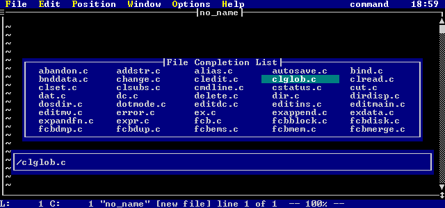
Figure 27. File Name Completion Window
Inserting Text
The following commands cause Vi to go from command mode directly into text insertion mode:
- INS
- Starts inserting text before the current character in the edit buffer.
a
- Starts appending (inserting) text after the current character in the edit buffer.
A
- Starts appending (inserting) text after the last character on the current line in the edit buffer.
g
- Enters text insertion mode at the current cursor position. This sets you up in overstrike or insert
mode, depending on the mode you were in last time you were in text insertion mode.
This key is useful to KEYADD in a script, to return to the exact same type of text insertion
mode the user was in before leaving text insertion mode.
i
- Starts inserting text before the current character in the edit buffer.
I
- Starts inserting text before the first non-white space character in the edit buffer.
o
- Opens a line after the current line, and enters text insertion mode.
O
- Opens a line before the current line, and enters text insertion mode.
Once you are in text insertion mode, you can toggle back and forth between insert and overstrike using the INS
key. You exit text insertion mode by pressing the ESC key. See the previous section, Text Insertion Mode,
for more information on manipulating text in text insertion mode.
Replacing Text
The following commands are used to replace text:
- g
- Enters text insertion mode at the current cursor position. This sets you up in overstrike or insert
mode, depending on the mode you were in last time you were in text insertion mode.
This key is useful to KEYADD in a script, to return to the exact same type of text insertion
mode the user was in before leaving text insertion mode.
R
- Starts overstriking text at the current character in the edit buffer. Once you are overstriking text, you can toggle
back and forth between overstrike and insert using the INS key. You exit text insertion mode by pressing the
ESC key. See the previous section, Text Insertion Mode, for more information
on manipulating text in text insertion mode.
<n>r<?>
- Replaces the current character with the next character typed, <?>. If a repeat count is specified, then
the next <n> characters are replaced with the character <?>.
- Example(s):
-
ra
Replaces the current character with the letter a.
10rZ
Replaces the next 10 characters with the letter Z.
Deleting Text
The commands in this section are for deleting text in an edit buffer. All deleted text is copied into a copy buffer
for later use, see the section Copy Buffers.
- <"?>D
- Deletes the characters from the current position to the end of line.
- Example(s):
-
"aD
Deletes characters from current position to the end of line into the named buffer a.
<n><"?>X
- Delete the character before the current cursor position.
- Example(s):
-
X
Delete the previous character.
10X
Delete the 10 previous characters.
"z5X
Delete the 5 previous characters into the named buffer z.
<n><"?>x
- Delete the character at the current cursor position.
- Example(s):
-
x
Delete the current character.
3x
Delete the next 3 characters.
"217x
Delete the next 17 characters into the numbered buffer 2.
<n><"?>DEL
- Delete the character at the current cursor position. This behaves the same as the command mode command x.
- Example(s):
-
DEL
Delete the current character.
12DEL
Delete the next 12 characters.
"a5DEL
Delete the next 5 characters into the named buffer a.
The <oper> notation in the following command indicates some sort of operator that the command will act on.
<oper> may be one of:
- A movement command. See the section Movement for a full description of all movement commands.
If a movement command is specified, then the range that the command will act on is from the current position to the
position that would be achieved by using the movement command.
- A search command:
- / (forward slash)
- ? (question mark)
- n
- N
See the section Searching for a full description of the searching commands. If a search
command is specified, then the range that the command will act on is from the current position to the position that would
be achieved by using the search command.
- The current selected (highlighted) region. In this case, <oper> is the r key.
- The same character as the command character. This causes the command to operate on the current line.
- <n><"?>d<oper>
- Delete text from the current position in the file to the position specified by <oper>. A copy of the text
is placed into the specified copy buffer <"?>. If no buffer is specified, then the text is placed
into the active buffer. A repeat count <n> may precede the command, this causes <n> units
of the <oper> command to be deleted.
<oper> may be specified as d, which causes a single line to be deleted.
Also see the command line command DELETE.
- Example(s):
-
dr
Deletes the current selected (highlighted) region in the edit buffer. A copy is placed into the active copy
buffer.
"zdd
Deletes the current line. A copy is placed into the named copy buffer z.
95dd
Deletes 95 lines, starting at the current. A copy of the lines is placed into the active buffer.
"cdfa
Deletes the characters from the current column up to and including the first a on the current line. A
copy of the text is placed in the named buffer c.
"5d'a
Deletes the lines from the current line to the line with mark m into the numbered buffer 5.
dG
Deletes all lines from the current line to the end of the current edit buffer.
Copying Text
This section describes commands that are for yanking (copying) text. This text is placed into a copy buffer, see
the section Copy Buffers for more information.
- <n>Y
- Yank (copy) the current line. If a repeat count <n> is specified, then <n> lines are copied.
This command is the same as typing yy.
The <oper> notation in the following command indicates some sort of operator that the command will act on.
<oper> may be one of:
- A movement command. See the section Movement for a full description of all movement commands.
If a movement command is specified, then the range that the command will act on is from the current position to the
position that would be achieved by using the movement command.
- A search command:
- / (forward slash)
- ? (question mark)
- n
- N
See the section Searching for a full description of the searching commands. If a search
command is specified, then the range that the command will act on is from the current position to the position that would
be achieved by using the search command.
- The current selected (highlighted) region. In this case, <oper> is the r key.
- The same character as the command character. This causes the command to operate on the current line.
- <n><"?>y<oper>
- Yanks (copies) text from the current position in the file to the position specified by <oper>. Text is
placed into the specified copy buffer <"?>. If no buffer is specified, then the text is placed into
the active buffer. A repeat count <n> may precede the command, this causes <n> units of the
<oper> command to be copied.
<oper> may be specified as y, which causes a single line to be yanked.
Also see the command line command DELETE.
- Example(s):
-
yy
Yanks (copies) the current line into the active copy buffer.
10yy
Copies 10 lines, starting at the current, into the active buffer.
y$
Copies the characters from the current column to the end of the current line into the active buffer.
"ay'm
Yanks the lines from the current line to the line with mark m into the named buffer a.
y/foo
Copies:
- the part of the current line from the current position to the end of the line
- all lines between the current line and the first line containing the string foo
- the part of the line containing foo from the start of the line to the first letter in the string foo
Changing Text
The following commands are for changing text. If a range of lines is being changed, the lines are deleted and Vi
enters text insertion mode.
If the change is taking place on the single line, the range of characters being changed is highlighted, and the last
character in the range is indicated with a dollar sign ('$'). If the ESC key is pressed, and changelikevi
is not set, then the change command is cancelled. If changelikevi is set, then the highlighted
area is deleted. If anything other than the ESC key is pressed, the highlighted area is deleted and Vi enters
text insertion mode.
- C
- This command changes the characters on the current line from the current character to the end of the line. The character
range is highlighted, and once a character is typed, the highlighted text is deleted, and text insertion mode is entered.
This command is the same as typing c$.
<n>S
- This command substitutes the current line with text. The text on the current line is deleted, and text insertion mode
is entered. If a repeat count <n> is specified, then <n> lines are deleted.
This command is the same as typing cc.
<n>s
- This command substitutes the current character with text. If <n> is specified, then <n> characters
are substituted.
This command is the same as typing cl, cRIGHT, or cSPACE.
The <oper> notation in the following command indicates some sort of operator that the command will act on.
<oper> may be one of:
- A movement command. See the section Movement for a full description of all movement commands.
If a movement command is specified, then the range that the command will act on is from the current position to the
position that would be achieved by using the movement command.
- A search command:
- / (forward slash)
- ? (question mark)
- n
- N
See the section Searching for a full description of the searching commands. If a search
command is specified, then the range that the command will act on is from the current position to the position that would
be achieved by using the search command.
- The current selected (highlighted) region. In this case, <oper> is the r key.
- The same character as the command character. This causes the command to operate on the current line.
- <n>c<oper>
- Change text from the current position in the file to the position specified by <oper>. A repeat count
<n> may precede the command, this causes <n> units of the <oper> command to be changed.
<oper> may be specified as c, which causes a single line to be changed.
- Example(s):
-
cr
Changes the current selected (highlighted) region in the edit buffer.
cc
Change the current line. The current line is deleted, and text insertion mode is entered.
95cc
Changes 95 lines, starting at the current. The lines are deleted, and text insertion mode is entered.
cw
Change the current word. The current word is highlighted, and once a character other than ESC is typed,
the word is deleted and text insertion mode is entered.
c$
Changes from the current column to the end of the current line. The column range is highlighted, and once a
character other than ESC is typed, the column range is deleted and text insertion mode is entered.
2cfa
Changes from the current column to the second letter a on the current line. The column range is highlighted,
and once a character other than ESC is typed, the column range is deleted and text insertion mode is entered.
Shifting Text
The following commands are used to shift lines to the right or left, inserting or deleting leading whitespace. The
<oper> notation in the following commands indicates some sort of operator that the command will act on.
<oper> may be one of:
- A movement command. See the section Movement for a full description of all movement commands.
If a movement command is specified, then the range that the command will act on is from the current position to the
position that would be achieved by using the movement command.
- A search command:
- / (forward slash)
- ? (question mark)
- n
- N
See the section Searching for a full description of the searching commands. If a search
command is specified, then the range that the command will act on is from the current position to the position that would
be achieved by using the search command.
- The current selected (highlighted) region. In this case, <oper> is the r key.
- The same character as the command character. This causes the command to operate on the current line.
- <n>><oper> (right angle bracket)
- This is the shift right command. It shifts the specified lines to the right shiftwidth spaces,
inserting necessary leading tabs if realtabs is specified.
A repeat count <n> may precede the command, this causes <n> units of the <oper>
command to be shifted to the right.
<oper> may be specified as >, which causes a single line to be shifted to the right.
Also see the command line command >.
- Example(s):
-
10>>
Shifts the current line and the next 9 lines to the right shiftwidth spaces.
>'a
Shifts all lines from the current line to the line with mark a to the right shiftwidth
spaces.
>r
Shifts all lines in the selected (highlighted) region to the right shiftwidth spaces.
<n><<oper> (left angle bracket)
- This is the shift left command. It shifts the specified lines to the left shiftwidth spaces.
A repeat count <n> may precede the command, this causes <n> units of the <oper>
command to be shifted to the left shiftwidth spaces.
<oper> may be specified as <, which causes a single line to be shifted to the left shiftwidth
spaces.
Also see the command line command <.
- Example(s):
-
<<
Shifts the current line to the left shiftwidth spaces.
<G
Shifts all lines from the current line to the last line in the edit buffer to the left shiftwidth
spaces.
10<j
Shifts the current line and the next 10 lines to the left shiftwidth spaces.
Case Toggling
The case toggle command mode command switches upper case letters to lower case, and lower case letters to upper case.
An example of its behaviour is changing the line
This Is A Line Of Text.
to
tHIS iS a lINE oF tEXT.
The <oper> notation in the following command indicates some sort of operator that the command will act
on. <oper> may be one of:
- A movement command. See the section Movement for a full description of all movement commands.
If a movement command is specified, then the range that the command will act on is from the current position to the
position that would be achieved by using the movement command.
- A search command:
- / (forward slash)
- ? (question mark)
- n
- N
See the section Searching for a full description of the searching commands. If a search
command is specified, then the range that the command will act on is from the current position to the position that would
be achieved by using the search command.
- The current selected (highlighted) region. In this case, <oper> is the r key.
- The same character as the command character. This causes the command to operate on the current line.
- <n>~<oper> (tilde)
- This is the case toggle command. This command only works if the togglecaselikevi setting is not turned on.
If togglecaselikevi is set, then pressing ~ only changes the case of the current character, and advances the
cursor to the next character.
However, if togglecaselikevi is not set, then this command toggles the case of the characters over the range specified
by <oper>
A repeat count <n> may precede the command, this causes <n> units of the <oper>
command to be case toggled.
<oper> may be specified as ~, which causes a single line to be have its case toggled.
- Example(s):
-
~r
Toggles the case of the currently selected (highlighted) range.
~$
Toggles the case of all characters from the current column of the current line to the last character of the current
line.
~w
Toggles the case of the current word.
10~~
Toggles the case of the current line and the 9 lines following.
Filters
The command mode filter command has the same functionality as the command line command filter. The <oper>
notation in the following command indicates some sort of operator that the command will act on. <oper>
may be one of:
- A movement command. See the section Movement for a full description of all movement commands.
If a movement command is specified, then the range that the command will act on is from the current position to the
position that would be achieved by using the movement command.
- A search command:
- / (forward slash)
- ? (question mark)
- n
- N
See the section Searching for a full description of the searching commands. If a search
command is specified, then the range that the command will act on is from the current position to the position that would
be achieved by using the search command.
- The current selected (highlighted) region. In this case, <oper> is the r key.
- The same character as the command character. This causes the command to operate on the current line.
- <n>!<oper> (exclamation mark)
- Filter text. The line range specified by <oper> are run through a specified filter. A repeat count
<n> may precede the command, this causes <n> units of the <oper> command to be run through
the filter.
<oper> may be specified as !, which causes a single line to be run through the filter.
The lines specified are run through a specified system command (filter). Once the filter range has been specified,
a window is displayed, prompting for a system command:
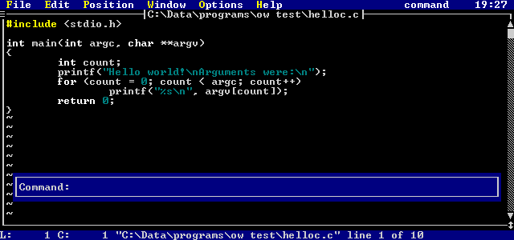
Figure 28. Filter System Command Prompt
The system command must take input from standard in and put its output to standard out. The lines specified
are replaced with the output of the the command.
There is a filter command history in the filter command prompt, the size of which is controlled with the maxfilterhistory
setting.
Also see the command line command !.
- Example(s):
-
!r
Runs the current selected (highlighted) region in the edit buffer through a specified filter.
!!
Runs the current line through a specified filter
!G
Runs all lines from the current line to the end of the edit buffer through a specified filter.
Text Selection
Text may be selected with the mouse. However, if you do not wish to use the mouse, there is a keyboard interface
to allow you to accomplish the same thing.
Once text selection has been started, any movement command adds to the selected region. The selected region
may be cleared, and text selection ended, by pressing the ESC key.
A selected region is highlighted by exchanging the foreground and background the colors of the line. A selected
region could look as follows:
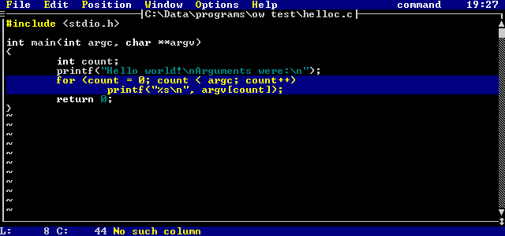
Figure 29. Selected Text Region
The following are the command mode commands for selecting text and manipulating selected text.
- CTRL_R
- Starts text selection, if no text is selected. The current character is highlighted.
If region is already selected, then cancel the selected region.
<n>SHIFT_UP
- Starts selection (if not already started) and moves up to the previous line. The previous line and the current line
are selected. If a repeat count <n> is specified, then the cursor moves up <n> lines, and
all the lines between the starting and ending position are selected.
<n>SHIFT_DOWN
- Starts selection (if not already started) and moves down to the next line. The next line and the current line are selected.
If a repeat count <n> is specified, then the cursor moves down <n> lines, and all the lines
between the starting and ending position are selected.
<n>SHIFT_LEFT
- Starts selection (if not already started) and move left to the previous character. The current character and the previous
character are selected. If a repeat count <n> is specified, then the cursor moves left <n>
characters, and all the characters between the starting and ending position are selected.
<n>SHIFT_RIGHT
- Starts selection (if not already started) and move right to the next character. The current character and the next character
are selected. If a repeat count <n> is specified, then the cursor moves right <n> characters,
and all the characters between the starting and ending position are selected.
<"?>SHIFT_DEL
- Deletes the currently selected region. If the copy buffer <"?> is specified, the region is copied
into that buffer, otherwise the data is copied into the active buffer.
_ (underscore)
- Simulates the right mouse being clicked at the current cursor position. If a region is not selected, then the current
word will be selected. The word is defined using the command line command word.
Miscellaneous Keys
- CTRL_C
- Exits the editor if no files have been modified. If files have been modified, a prompt is displayed asking you to verify
that you really want to discard the modified file(s). If you do not respond with a 'y', then the command is cancelled.
Also see the command line command QUITALL.
CTRL_G
- Display information about the current file in the edit window. The information includes:
- the file name.
- a special indicator if the file is read-only.
- a special indicator if the file is view-only.
- a special indicator if the file has been modified.
- the current line number, and the last line number.
- The percentage of the way through the file.
Some sample results are:
"test.c" [modified] line 5 of 100 -- 5% --
"..\c\file.c" [read only] line 100 of 100 -- 100% --
"\autoexec.bat" line 1 of 100 -- 1% --
CTRL_L
- Redraws the current screen.
CTRL_V
- Displays the current version of Vi in the message window.
Also see the command line command VERSION.
CTRL_X
- Displays the hex value (and the decimal value) of the current character. A sample of the output in the message window
is:
Char 'e': 0x65 (101)
CTRL_] (control right square bracket)
- Go to the tag given by the current word. The word is defined using the command line command word.
Also see the command line command TAG.
See the appendix CTAGS for more information.
ALT_W
- Activates the current edit window's menu. This menu is defined using the windowgadgetmenu MENU.
See the chapter Windows and Menus for more information on setting this menu.
ALT_X
- Insert a character, at the current cursor position. When ALT_X is pressed, a prompt is displayed:
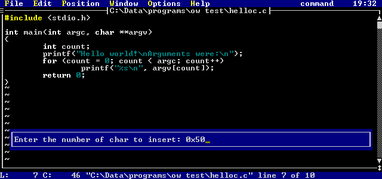
Figure 30. Character Insertion Prompt
Enter either a decimal or a hex number. That character will be inserted directly into the edit buffer.
: (colon)
- Allows entry of a command line. See the chapter Editor Commands for full details on command
line commands.
@<?> (at sign)
- This command executes the copy buffer <?>. Vi behaves as if the contents of the buffer were being typed
at the keyboard.
<n>J
- Joins the next line to the current line. If a repeat count <n> is specified, the next <n>
lines are joined to the current line. (lines are concatenated one after another).
Also see the command line command JOIN.
- Example(s):
-
J
Joins the next line to the current line.
3J
Joins the next 3 lines to the current line.
Q
- Enters EX mode. EX mode is a line-oriented mode of Vi. To exit EX mode, use the VISUAL
command.
Z<Z>
- Used when you are finished with the current edit buffer. If the current edit buffer has been modified, it is saved.
- Example(s):
-
ZZ
Finished with current edit buffer.
<n>z<?>
- Reorients the current screen position. The current line moves as follows, depending on the value of <?>:
- ENTER
- Moves the current line to the top of the screen.
. (dot)
- Moves the current line to the center of the screen.
- (dash)
- Moves the current line to the bottom of the screen.
If a repeat count <n> is specified, then <n> is made the current line.
- Example(s):
-
z-
Move the current line to the bottom of the screen.
100zENTER
Makes line 100 the current line, and puts line 100 at the top of the screen.
25z.
Makes line 25 the current line, and puts line 25 at the center of the screen.
F1
- Move forward through the file list to the next file.
Also see the command line command NEXT.
F2
- Move backwards through the file list to the previous file.
Also see the command line command PREV.
F11
- Push the current file and position. If you press F12, you will be restored to this position. These positions
are stacked up, up to a maximum of maxpush.
Also see the command line command PUSH.
F12
- Restore the last pushed file and position.
Also see the command line command POP.
. (dot)
- Repeat the last command mode command that changed text in the edit buffer. It is also possible to memorize more than
just one command for '.' by using memorize mode:
- Type " m.". (Vi enters memorize mode).
- Enter keystrokes.
- Type " ."
Now, whenever you press dot ('.'), all the entered keystrokes will be executed.
= (equals sign)
- Performs the last alternate memorized command sequence. The alternate memorize mode is used as follows:
- Type " m=". (Vi enters alternate memorize mode).
- Enter keystrokes.
- Type " ="
Now, whenever you press the equals sign ('='), all the entered keystrokes will be executed as if you typed them again
from the keyboard.
This memorized keystroke sequence will last until you memorize another, unlike using " m.".
ALT_M
- Display current memory state. Shows the total amount of memory, the amount of memory for use by Vi, and how much extended
memory and/or disk space is available.
Editor Commands
This chapter describes the various editor commands that may be entered. A command is entered by pressing the colon
(':') key while in command mode, or by selecting the Enter command option in the File menu.
To ensure that you are in command mode, press ESC until the mode indicator says
Mode: command
Once you press the ':' key, the command entry window will appear:
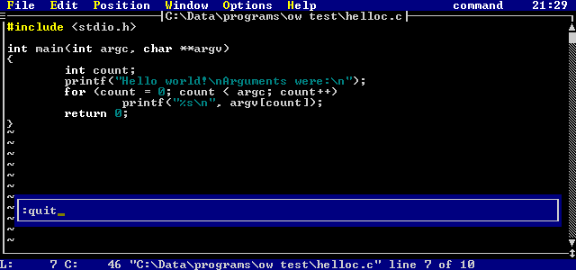
Figure 31. Command Entry Window
This position and size of the command entry window are controlled using the COMMANDWINDOW
windowing command (character mode versions of the editor only). Commands may be up to 512 bytes in length; the command
window scrolls.
There are a special set of commands that may be entered at the command line for controlling the various windows and
menus of Vi. These commands are discussed in the next chapter, Windows and Menus.
The command line has a command history associated with it; the size of this command history is controlled using the
maxclhistory setting. As well, the command history is preserved across sessions of Vi if
the historyfile parameter is set.
If a command is being executed through a mapped key (see the MAP and MAPBASE
commands later in this chapter), then it can be useful to keep the command from being added to the history. By having
a "\h" as the first characters after the ':' character, the command will not be added to the command history.
Special Keys In The Command Window
Once in the command window, a number of keys have special meaning:
- CTRL_V
- Insert next keystroke directly; do not process as a special character.
CTRL_Q
- Insert next keystroke directly; do not process as a special character.
CTRL_O
- Insert the current input string after current line in the edit buffer.
ALT_O
- Insert the current input string before current line in the edit buffer.
ALT_L
- Adds the current line in the current edit buffer, from the current column to the end of the line, to the input string.
CTRL_E
- Adds the current space delimited word in the current edit buffer to the input string.
CTRL_L
- Adds the current line in the current edit buffer to the input string.
CTRL_R
- Adds the currently selected column range in the current edit buffer to the input string.
CTRL_W
- Adds the current word in the current edit buffer to the input string.
CTRL_INS
- Restores last thing typed in the input window (one level undo).
UP
- Scroll backwards through the history.
DOWN
- Scroll forwards through the history.
ALT_TAB
- Command completion. Looks backwards through the history for first item starting with what is already entered.
Subsequent presses of ALT_TAB get the 2nd last matching item, and so on.
RIGHT
- Move cursor right through input string.
LEFT
- Move cursor left through input string.
CTRL_END
- Delete to end of the input string.
END
- Move to end of the input string.
HOME
- Move to start of the input string.
INSERT
- Toggle between insertion and overstrike of text.
BS
- Backspace in the input string, deleting the previous character.
DELETE
- Delete current character.
ENTER
- Process the command.
ESC
- Cancel the command.
TAB
- Try to complete the file name based on the current string.
The first match is completed, and a window with possible choices is displayed. Subsequent presses of TAB will scroll
forward through the list of possible matches, and pressing SHIFT_TAB will scroll backwards through the list of possible matches.
Cursor keys may also be used, and so may the mouse.
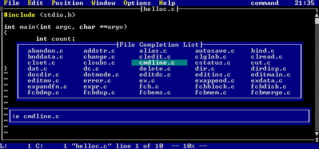
Figure 32. File Name Completion Window
Line Addresses
Some commands take a line address range and/or a line address. A line address is composed of a line number or a
special symbol. As well, '+' and '-' may be used to add or subtract from the current address; e.g.:
- 5+7
- Indicates line 13
100-5
- indicates line 95
99-11+6
- indicates line 94
Special symbols are:
- . (dot)
- Represents the current line number.
$ (dollar)
- Represents the last line number.
% (percent)
- Represents the address range 1,$ (the entire file)
# (pound)
- Represents the current selected region
'a (front quote)
- Indicates the line with the mark 'a' set; marks 'a' through 'z' may be used.
/regexp/
- Indicates the first line following the current line that has the regular expression regexp. If regexp
is not specified, then the last regular expression search is used.
?regexp?
- Indicates the first line previous to the current line that has the regular expression regexp. If regexp
is not specified, then the last regular expression search is used.
For more information on regular expressions, see the chapter Regular Expressions.
If a line address is not specified, then the current line is assumed. If + or - are the first character, then
they are assumed to operate on the current line number; e.g. specifying +1 takes you forward one line in the file.
A line address range is two line addresses separated by a comma; these indicate the start and end of the line address
range.
Line Address Examples
- .-5
- 5 lines before the current line
1,5
- lines 1 to 5.
.-10,.+10
- 10 lines before the current line to 10 lines past the current line
$-5
- 5 lines before the last line in the file
%
- all lines
#
- all lines in the currently selected region
'a,.
- line with mark 'a' to current line.
/foo/
- the first line after the current line containing 'foo'
'z+5,$-10
- 5 lines past line with mark 'z' to 10 lines before the end of the file.
/foo/+5,/bar/-1
- 5 lines past line next line containing 'foo' to 1 line before the line containing 'bar'.
Commands
The following command descriptions show items within angle brackets (<>). The angle brackets are there to
indicate items that you may supply. You are not required to type the brackets. For example, <filename>
simply means that in the corresponding place in the command you should enter the name of a file. For example, <filename>
may be replaced with
test.c
and the brackets are not entered.
The command descriptions also show items inside double quotes ("). The double quotes are used to indicate
a literal option that you may supply. You are not required to type the quotes. For example, "-c" indicates
that in the corresponding place in the command you may enter -c.
In the syntax model for each command, the upper-case characters represent the minimal truncation of the command.
For example, in its syntax model, the edit command is specified as "Edit", indicating that the "e", "ed",
"edi", and "edit" are acceptable abbreviations (and that "e" is the shortest of them).
Some commands are noted as "EX mode only". This means that the command is not available from the normal
command line; it may only be used from an editor script or from EX mode (which is entered by pressing 'Q' in
command mode).
>
- Syntax:
- <line_range> >
- Description:
- This command shifts the specified line range <line_range> to the right shiftwidth spaces,
inserting necessary leading tabs if realtabs is specified.
- Example(s):
-
1,. >
Shifts from first line to current line to the right shiftwidth spaces.
- See Also:
- <
<
- Syntax:
- <line_range> <
- Description:
- This command shifts the specified line range <line_range> to the left shiftwidth spaces.
- Example(s):
-
.,$ <
Shifts entire file shiftwidth spaces to the left.
- See Also:
- >
!
- Syntax:
- <line_range> ! <cmd>
- Description:
- If <line_range> is specified, then the lines are run through the specified system command <cmd>
(the command must get its input from standard in and write its output to standard out) and replaces the lines with the output
of the command.
If no range is specified, then the system command <cmd> is run. If <cmd> is not specified,
then an operating system shell is started.
The global variable %(Sysrc) contains the return code from the last system command, and %(Syserr) contains the errno
value.
- Example(s):
-
1,$ ! sort
Takes all lines in the current edit buffer and runs them through the sort command. The lines are then
replaced with the output of the sort command.
! dir
Executes the system dir command. After dir is finished executing, you are prompted to press a
key before returning to the editor.
!
Temporarily leaves Vi and enters an operating system command shell.
- See Also:
- SHELL
ABBREV
- Syntax:
- ABbrev <short> <long>
- Description:
- Create an abbreviation of <short> for <long>. Whenever <short> is typed as a
word during text insertion mode, it is expanded to <long>. UNABBREV is used to
remove the abbreviation.
- Example(s):
-
abbrev wh while(
Whenever wh is entered as a word, the word while( is substituted.
- See Also:
- UNABBREV
ALIAS
- Syntax:
- ALias <alias> <data>
- Description:
- Creates an command line alias of <alias> for <data>. Whenever <alias> is typed
on the command line, the full command <data> is substituted. UNALIAS is used to
remove the abbreviation.
- Example(s):
-
alias ai set autoindent
Whenever ai is entered on the command line, the command set autoindent is executed.
- See Also:
- UNALIAS
APPEND
- Syntax:
- <line_num> Append
- Description:
- Appends source lines after line <line_num>. Append is terminated when a line with nothing but a dot ('.')
is entered.
- Notes:
- Only valid in EX mode.
- See Also:
- CHANGE, INSERT
CASCADE
- Syntax:
- CASCADE
- Description:
- Causes all edit buffer windows to cascade (overlap each other with top border of each visible).
- See Also:
- MAXIMIZE, MINIMIZE, MOVEWIN, RESIZE,
SIZE, TILE
CD
- Syntax:
- CD <dir>
- Description:
- Changes current working directory to <dir>. If <dir> is not specified, then the current directory
is displayed in the message window. <dir> may be specified with drive and path.
- Example(s):
-
cd c:\tmp
Changes to the \tmp directory of the c drive
cd
Display the current working directory
CHANGE
- Syntax:
- <line_range> Change
- Description:
- Deletes the line range , and replaces the range with inputted source lines. The input of text is terminated when a line
with nothing on it but a dot ('.') is entered.
- Notes:
- Only valid in EX mode.
- See Also:
- APPEND, INSERT
COMPILE
- Syntax:
- COMPile "-a" "-A" <script> <result>
- Description:
- Compiles the editor script <script>.
If -a is specified, all local variables are translated at compile time (rather than at run time) - this is useful
for the configuration script.
If -A is specified, all variables (both local and global) are translated at compile time.
The file will be compiled into a file with the same name as the script and the extension ._vi., unless <result>
is specified.
For information on editor scripts, see the chapter Editor Script Language.
- Example(s):
-
comp -a ed.cfg
Compiles the default configuration script ed.cfg and expands all local variables to any values assigned
to them in the script. The compiled script file ed._vi is generated.
If any errors occur while compiling, a file with the the same name as the script and the extension .err is created.
comp test.vi test.out
Compiles the script test.vi and generates the compiled script file test.out.
- See Also:
- LOAD, SOURCE
COMPRESS
- Syntax:
- COMpress
- Description:
- Replaces spaces in the current edit buffer with tabs. Single spaces are not replaced with a tab, and spaces inside a
quoted string are not replaced with a tab.
COPY
- Syntax:
- <line_range> COpy <line_number>
- Description:
- Copies the specified range of lines <line_range> after the line <line_number>.
- Example(s):
-
% copy $
Copies the entire file and places the lines after the last line in the file.
1,. copy .
Copies all lines from the beginning of the file to the current line and places the lines after the current line.
DATE
- Syntax:
- DAte
- Description:
- Display the current time and date in the message window.
DELETE
- Syntax:
- <line_range> Delete <buffer>
- Description:
- Deletes the specified line range <line_range>.
If <buffer> is not specified, the text is deleted into the active copy buffer.
If <buffer> ('1'-'9', or 'a'-'z') is specified, the text is deleted into that copy buffer.
The PUT command may be used to place contents of a copy buffer into the file.
- Example(s):
-
% d
Deletes all lines into the active copy buffer.
1,10 d a
Deletes lines 1 to 10 into the named copy buffer a.
- See Also:
- MOVE, PUT, YANK
ECHO
- Syntax:
- ECHO <line> <msg>
- Description:
- Echos the message <msg> on line <line> of the message window.
If <line> is specified as off, then nothing is echoed into the message window from then on.
If <line> is specified as on, messages will start to appear in the message window again.
<msg> may be surrounded by double quotes (") or a forward slash (/) if it contains any spaces.
- Example(s):
-
echo 1 "hello world"
The words hello world will appear on line 1 of the message window.
echo off
Disables output to the message window.
echo on
Enables output to the message window.
echo 2 /Line 2 message/
The words Line 2 message will appear on line 2 of the message window.
EDIT
- Syntax:
- Edit "!" <files>
- Description:
- Edits the specified files <files>. <files> may be a single file or a list of files.
Each file name may contain file regular expressions, see the section File Matching Regular Expressions
in the chapter Regular Expressions for more information.
If "!" is specified, then the current file is discarded before editing the new file(s).
If a file is already being edited, then control is simply transferred to the window with that file. If the file
is already being edited and you specified a different path, then a new copy of the file is read from the disk and is edited,
unless samefilecheck is set. If samefilecheck is set, then
control is transferred to the window with the original copy of the file.
If you wish to have have multiple views on the same file, the OPEN command is available.
If <files> is not specified, then a window containing a list of files in the current directory is opened.
From this listing, you may pick a file, another directory, or another drive (the available drives are at the end of
the listing). A directory is indicated by the leading backslash ('\'). If a directory is chosen in this window,
then the list of files in that directory is displayed. This list also contains all the drives available (which are
enclosed in square brackets, e.g. [c:]). If you select a drive, the list of files in the current directory
on that drive is displayed.
For files and directories, each line indicates the file name, the various attributes of the file ([d]irectory,
[a]rchive, [h]idden, [s]ystem, [r]eadable, [w]riteable, e[x]ecutable), the
file size in bytes, the date and time of the last file update. Some sample lines are:
test.c -a--rw- 25586
08/16/92 08:14
bar.c -a--r--
639 02/27/92 13:25
\tmpdir d---rw-
0 08/16/92 19:05
[c:]
- Example(s):
-
edit test.c
Edits the file test.c.
edit! test2.c
Discards the current file, and edits test2.c.
edit test.(c|h)
Edits the file test.c if it exists, and the file test.h if it exists.
edit ([a-c])*.c
Edits all files in the current directory that start with the letters a, b or c and have the extension .c.
edit *
Edits all files in the current directory.
edit
Gives a file selection display:
Figure 33. File Selection Display
- See Also:
- OPEN, READ, VIEW, VISUAL
EGREP
- Syntax:
- EGRep <regexp> <files>
- Description:
- Searches the file list <files> for the regular expression <regexp>.
<regexp> may be surrounded by double quotes (") or a forward slash (/) if it contains any spaces.
<files> may be a single file, a directory, or a list of files. <files> may contain
file regular expressions, see the section File Matching Regular Expressions
in the chapter Regular Expressions for more information.
If <files> is not specified, it defaults to the setting of grepdefault.
If a directory is specified for <files>, then the files in that directory are searched, based on the setting
of grepdefault.
When all matches are found, a selection window is presented with all the files that contained <regexp>.
If you are not using regular expressions, the FGREP command is much faster. For more information
on regular expressions, see the chapter Regular Expressions.
- Example(s):
-
egrep ((if)|(while)) *.c
Searches all files in the current directory ending in the extension .c for the regular expression ((if)|(while)).
egrep [a-z]a+
Searches all files specified by grepdefault for the regular expression [a-z]a+.
egrep [a-z]a+ ..\c
Searches all files in the directory ..\c specified by grepdefault for the regular expression
[a-z]a+.
- See Also:
- FGREP
EVAL
- Syntax:
- EVAL <expr>
- Description:
- Evalutes a given mathematical expression, and displays the result on line 1 of the message window. For a full explanation
of the rules for formulating the expression <expr>, see the chapter Editor Script Language.
- Example(s):
-
eval 5+7*3
Evaluates 5+7*3 and displays the result (26) in the message window.
eval (5+7)*3
Evaluates (5+7)*3 and displays the result (36) in the message window.
eval ((12+3)*100)/50-3
Evaluates ((12+3)*100)/50-3 and displays the result (27) in the message window.
EXECUTE
- Syntax:
- EXECUTE <str>
- Description:
- Execute the string <str>. This causes the editor to behave as if the string <str> was typed
at the keyboard.
Special keys in the string are indicated as follows:
- \<"key">
- Any special key may be inserted for "key". The angle brackets are required. There are a number
of pre-defined keys symbols that are recognized. These are described in the Appendix Symbolic Keystrokes.
\e
- Short form for the escape key (rather than \<ESC>).
\n
- Short form for the enter key (rather than \<ENTER>).
\h
- If a command line command is used in the sequence, and it follows the colon (':'), the command is not added to the history.
For example:
:\hdate\n
will display the current date and time, but the command will not enter the command history.
\x
- If a command line command is used in the sequence, then this stops the command window from opening. This prevents the
"flashing" of the command window as it is opened then closed. For example:
\x:date\n
will display the current date and time, but the command window will not be displayed.
- Example(s):
-
execute dd
Acts as if dd were typed, and the current line gets deleted.
execute :eval 5*3\n
Acts as if :eval 5*3<ENTER> was typed, and the number 15 gets displayed in the message window.
- See Also:
- KEYADD, MAP, MAPBASE
EXITALL
- Syntax:
- EXITALL
- Description:
- Exits all files. For each file that has been modified, you are prompted as to whether you want to save the file or not.
- See Also:
- QUITALL
EXPAND
- Syntax:
- EXPAND
- Description:
- Replaces all tabs in the current edit buffer with spaces.
FGREP
- Syntax:
- FGRep "-c" "-u" <string> <files>
- Description:
- Searches the file list <files> for the string <string>.
The search is by default case insensitive, unless -c is specified, which forces the search to be case sensitive.
Specifying -u causes the setting of caseignore to determine whether or not to be case
sensitive in the search.
<string> may be surrounded by double quotes (") or a forward slash (/) if it contains any spaces.
<files> may be a single file or a list of files. Each file name may contain file regular expressions,
see the section File Matching Regular Expressions in the chapter Regular Expressions
for more information.
If <files> is not specified, it defaults to the setting of grepdefault.
While searching for the item, Vi displays a window that shows all files being searched. When all matches are
found, a selection window is presented with all the files that contained <files>.
- Example(s):
-
fgrep window *.c
Searches all files in the current directory ending in the extension .c for the string window. This will
produce out similar to the following:
Figure 34. Grep Result display
- See Also:
- EGREP
FILES
- Syntax:
- Files
- Description:
- Opens a window with the a list of all files current being edited. Files that have been modified will have a '*' beside
them. A file may be selected from this list either with the keyboard or with the mouse.
- Example(s):
-
files
Displays following screen
Figure 35. Current file list
- Syntax:
- FLOATMENU <id> <slen> <x1> <y1>
- Description:
- Activates the floating (popup) menu <id> ( <id> may be 0, 1, 2 or 3).
The floating menus are defined using the command line command MENU (See the section Menu Commands
).
<x1>, <y1> specify the coordinates of the upper left hand corner of the floating menu.
(0,0) specifies the upper left hand corner of the screen.
<slen> defines the length of a string that the menu is around the floating menu will try to appear around
the string ( <id> may be 0). This is useful if you wish to pop up a menu around some selected characters
on a line, for example.
If <slen> is non-zero, then the coordinates is assumed to be the lower right-hand side of the string
that the menu is popping up around.
- Example(s):
-
float 0 0 10 10
Bring up floating menu 0 at location (10,10) on the screen. There is no string, so the menu position will simply
cycle around (10,10) in an attempt to position itself.
float 0 6 50 20
Bring up floating menu 0 at location (50,20) on the screen. This is assumed to be on the lower right hand side
of a string of length 5 (i.e., it is assumed that the string is on line 19 and starts at column 45). If the menu cannot
fit by opening at (50,20), it will try to open at all other corners of the string.
- See Also:
- MENU, INPUT, GET
GENCONFIG
- Syntax:
- GENCONFIG <filename>
- Description:
- Writes the current editor configuration out to the file <filename>. If <filename> is not specified,
then the file name "ed.cfg" is assumed.
GLOBAL
- Syntax:
- <line_range> Global '"!"' /<regexp>/ <cmd>
- Description:
- For each line in the range <line_range> that matches the regular expression <regexp>, the editor
command <cmd> is executed. <cmd> may contain replacement expressions, see the chapter Regular Expressions
for more information.
If "!" is specified, then the command <cmd> is executed on every line that does NOT match
the regular expression <regexp>.
If <line_range> is not specified, then the global command operates on the entire line range of
the current edit buffer.
- Example(s):
-
g/printf/d
Deletes all lines in the current edit buffer that have the word printf.
g!/[a-c]123/ d
Deletes all lines in the current edit buffer that DO not match the regular expression [a-c]123.
g/(abc)*/ execute Iabc\e
For every line that matches the regular expression (abc)*, execute the keystrokes Iabc<ESC> (this
will insert the characters abc at the start of the line).
- See Also:
- SUBSTITUTE
HELP
- Syntax:
- HELP <topic>
- Description:
- Starts a view-only edit buffer on help for a specified topic. Possible topics are:
- COMmandline
- All command line commands.
KEYS
- What different keystrokes do in command mode.
REGularexpressions
- How to use regular expressions.
SETtings
- Everything that can be modified with the SET command line command.
SCRipts
- Vi script guide.
STARTing
- How to start the editor: switches, required files.
- Example(s):
-
help com
Gives help on command line commands.
help
Gives list of help topics.
INSERT
- Syntax:
- <line_number> Insert
- Description:
- Inserts text after a the specified line number <line_number>. Insert is terminated when a line with nothing
but a '.' is entered.
- Notes:
- Only valid in EX mode.
- See Also:
- APPEND, CHANGE
JOIN
- Syntax:
- <line_range> Join
- Description:
- Joins the lines in the specified range <line_range> into a single line (lines are concatenated one after another).
- Example(s):
-
.,.+2 join
Joins the current line and the next 2 lines into a single line.
KEYADD
- Syntax:
- KEYAdd <string>
- Description:
- Adds a set of keystrokes <string> to the key buffer just as if they were typed by the user. The processing
of these keystrokes is deferred until Vi finishes its current processing, and is ready to process keystrokes again.
This is different than the EXECUTE command, which processes the keystrokes immediately.
KEYADD is useful in a script, because it allows keystrokes to be executed after the script is exited.
This prevents re-entrance of a script that is being executed by a mapped key in input mode, for example.
Keys are processed in FIFO order. Multiple KEYADD commands cause more keys to queue up
for processing.
If you need to use one or more special keys (e.g. ENTER, F1, etc) in <string>, they may specified
as follows:
- \<"key">
- Any special key may be inserted for "key". The angle brackets are required. There are a number
of pre-defined keys symbols that are recognized. These are described in the Appendix Symbolic Keystrokes.
\e
- Short form for the escape key (rather than \<ESC>).
\n
- Short form for the enter key (rather than \<ENTER>).
\h
- If a command line command is used in the sequence, and it follows the colon (':'), the command is not added to the history.
For example:
:\hdate\n
will display the current date and time, but the command will not enter the command history.
\x
- If a command line command is used in the sequence, then this stops the command window from opening. This prevents the
"flashing" of the command window as it is opened then closed. For example:
\x:date\n
will display the current date and time, but the command window will not be displayed.
- Example(s):
-
keyadd dd
Acts as if dd were typed, and the current line gets deleted.
keyadd :eval 5*3\n
Acts as if :eval 5*3<ENTER> was typed, and the number 15 gets displayed in the message window.
- See Also:
- EXECUTE, MAP, MAPBASE
LIST
- Syntax:
- <line_range> List
- Description:
- Lists lines in the specified line range.
- Notes:
- Only valid in EX mode.
LOAD
- Syntax:
- LOAD <script>
- Description:
- Loads a script into memory for the life of the edit session. This allows for much faster access to the script, since
the data structures for the script do not have to be built every time the script is invoked. This is especially important
for a hook script.
For information on editor scripts, see the chapter Editor Script Language.
- Example(s):
-
load rdme._vi
Loads the script rdme._vi and makes it resident.
- See Also:
- COMPILE, SOURCE
MAP
- Syntax:
- MAP "!" <key> <string>
- Description:
- Tells the editor to run the string of keys <string> whenver the key <key> is pressed in command
mode.
If "!" is specified, then the string of keys <string> is executed whenever <key>
is pressed in text insertion mode.
When a mapped key is pressed, it acts is if the characters in <string> are being typed at the keyboard.
Recursion does not occur; if a key that is mapped is executed after it has been executed as a mapped key, then the
default behaviour for that key is used, e.g.:
map a 0a
will cause the editor to move to column 1, and then start appending after the character in column 1.
If you need to specify a special key (e.g. ENTER, F1, etc) in <key>, you specify a symbolic name
for that key. There are a number of pre-defined keys symbols that are recognized when specifying which key is being
mapped/unmapped. These are described in the Appendix Symbolic Keystrokes.
If you need to use one or more special keys (e.g. ENTER, F1, etc) in <string>, then you may enter:
- \<"key">
- Any special key may be inserted for "key". The angle brackets are required. There are a number
of pre-defined keys symbols that are recognized. These are described in the Appendix Symbolic Keystrokes.
\e
- Short form for the escape key (rather than \<ESC>).
\n
- Short form for the enter key (rather than \<ENTER>).
\h
- If a command line command is used in the sequence, and it follows the colon (':'), the command is not added to the history.
For example:
:\hdate\n
will display the current date and time, but the command will not enter the command history.
\x
- If a command line command is used in the sequence, then this stops the command window from opening. This prevents the
"flashing" of the command window as it is opened then closed. For example:
\x:date\n
will display the current date and time, but the command window will not be displayed.
To remove a mapping, use the UNMAP command.
- Example(s):
-
map K \x:next\n
Whenever K is pressed in command mode, the NEXT command is executed. The command window
will not be displayed, because of the \x.
map CTRL_T \x:\hda\n
Whenever CTRL_T is pressed in command mode, the current date is displayed. The command window will not be displayed,
because of the \x. The command will not be added to the command history, because of the \h.
map CTRL_W \x:fgrep \<CTRL_W>\n
Whenever CTRL_W is pressed in command mode, an fgrep command, searching for the current word, is executed. The
\x keeps the command window from opening. \<CTRL_W> simulates CTRL_W being pressed, so the current
word is inserted into the command line.
map! CTRL_W \edwi
Whenever CTRL_W is pressed in text insertion mode, text insertion mode is exited (\e simulates the ESC key being pressed),
the current word is deleted, and text insertion mode is re-entered. This has the effect of deleting the current word
in text insertion mode and appearing to remain in text insertion mode.
- See Also:
- EXECUTE, KEYADD, UNMAP
MAPBASE
- Syntax:
- MAPBASE <key> <string>
- Description:
- Tells the editor to run the string of keys whenver the key <string> is pressed in command mode.
This works the same as the MAP command, only all characters in <string> work as their
base meaning that is, all key mappings are ignored and the keys have their default behaviour.
- See Also:
- EXECUTE, KEYADD, MAP, UNMAP
MARK
- Syntax:
- <line_number> MArk <markname>
- Description:
- Sets the text mark <markname> on the line <line_number>. The mark name is a single letter
from a to z. This mark may then be referred to on the command line or in command mode by using a front
quote (') before the mark name, e.g.:
'a
- Example(s):
-
mark a
Sets the mark a on the current line. Typing the command 'a will return you to that mark.
100 mark z
Sets the mark z on line 100.
MATCH
- Syntax:
- match /<rx1>/<rx2>/
- Description:
- Set what is matched by the '%' command mode command. Defaults are "{","}" and "(",")".
For example, by pressing the percent key ('%') when the cursor is on the first open bracket ('(') in the line:
if( ( i=foo( x ) ) ) return;
moves the cursor to the last ')' in the line.
This command allows you to extend what is matched to general regular expressions. <rx1> is the
regular expression that opens a match, <rx2> is the regular expression that closes a match.
Note that in the matching regular expressions, magic is set (special characters automatically
have their meaning, and do not need to be escaped).
For more information on regular expressions, see the chapter Regular Expressions.
- Example(s):
-
match /# *if/# *endif/
This adds the matching of all #if and #endif commands (an arbitrary number of spaces is allowed to occur between
the '#' sign and the if or endif words. If '%' is pressed while over a #if statement, the cursor
is moved to the corresponding #endif statement.
MAXIMIZE
- Syntax:
- MAXimize
- Description:
- Maximizes the current edit buffer window.
- See Also:
- CASCADE, MINIMIZE, MOVEWIN, RESIZE,
SIZE, TILE
MINIMIZE
- Syntax:
- MINimize
- Description:
- Minimizes the current edit buffer window.
- See Also:
- CASCADE, MAXIMIZE, MOVEWIN, RESIZE,
SIZE, TILE
MOVE
- Syntax:
- <line_range> Move <line_number>
- Description:
- Deletes the specified range of lines <line_range> and places them after the line <line_number>.
- Example(s):
-
1,10 move $
Moves the first 10 lines of the file after the last line in the file.
1,. move .+1
Deletes all lines from the beginning of the file to the current line and places the lines one line after the current
line.
- See Also:
- DELETE
MOVEWIN
- Syntax:
- MOVEWin
- Description:
- Enter window movement mode. The cursor keys are then used to move the current edit buffer window.
- See Also:
- CASCADE, MAXIMIZE, MINIMIZE, RESIZE,
SIZE, TILE
NEXT
- Syntax:
- Next
- Description:
- Moves to the next file in the list of files being edited.
- See Also:
- PREV
OPEN
- Syntax:
- Open <file>
- Description:
- Opens a new window on the specified file. If no file is specified, then a new window is opened on the current edit buffer.
These new windows are different views on the same edit buffer.
Once multiple views on an edit buffer are opened, the window border contains a number indicating which view of the edit
buffer is associated with that file:
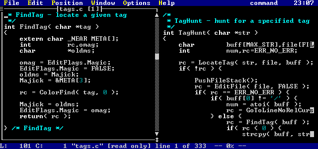
Figure 36. Two views of the same file
- See Also:
- EDIT, VIEW, VISUAL
POP
- Syntax:
- POP
- Description:
- Restores the last pushed file position.
The setting maxpush controls the maximum number of push commands that will be remembered.
- See Also:
- PUSH, TAG
PREV
- Syntax:
- Prev
- Description:
- Moves to the previous file in the list of files being edited.
- See Also:
- NEXT
PUSH
- Syntax:
- PUSH
- Description:
- Saves the current file position. The next POP command will cause a return to this position.
The setting maxpush controls the maximum number of push commands that will be remembered.
The TAG command does an implicit push.
- See Also:
- POP, TAG
PUT
- Syntax:
- <line_number> PUt '"!"' <buffer>
- Description:
- Puts (pastes) the copy buffer <buffer> ('1'-'9', or 'a'-'z') after the line <line_number>.
If <buffer> is not specified, the active copy buffer is assumed.
If "!" is specified, then the lines are put before the line <line_number>.
- Example(s):
-
put
Pastes the active copy buffer after the current line.
1 put!
Pastes the active copy buffer before the first line in the edit buffer.
$ put a
Pastes named copy buffer a after the last line in the file.
put! 4
Pastes numbered copy buffer before the current line.
- See Also:
- DELETE, YANK
QUIT
- Syntax:
- Quit "!"
- Description:
- Quits the current file. QUIT will not quit a modified file, unless "!" is specified,
in which case all changes are discarded and the file is exited.
- Example(s):
-
q!
Quits the current file, discarding all modifications since the last write.
- See Also:
- WRITE, WQ, XIT
QUITALL
- Syntax:
- QUITAll
- Description:
- Exits the editor if no files have been modified. If files have been modified, a prompt is displayed asking to you verify
that you really want to discard the modified file(s). If you do not respond with a 'y', then the command is cancelled.
- Example(s):
-
quitall
If files have been modified, the following prompt is displayed:
Figure 37. Really Exit prompt
- See Also:
- EXITALL
READ
- Syntax:
- <line_number> Read <file_name>
- Description:
- Reads the text from file <file_name> into the current edit buffer. The lines are placed after line specified
by <line_number>. If <line_number> is not specified, the current line is assumed.
Line 0 may be specified as <line_number> in order to read a file in before the first line of the current
edit buffer.
Each file name <file_name> may contain file regular expressions, see the section File Matching Regular Expressions
in the chapter Regular Expressions for more information.
If <file_name> is not specified, then a window containing a list of files in the current directory is
opened, from which a file may be selected.
If the first character of <file_name> is a dollar sign ('$'), then this indicates that a directory is
to be read in. If nothing follows, then the current directory is read. Otherwise, all characters that follow
the dollar sign are treated as a file regular expression, which is used to read in the directory.
- Example(s):
-
0 read test.c
Reads the file test.c into the current edit buffer and places the text before the first line of the file.
r test.c
Reads the file test.c into the current edit buffer and places the text after the current line.
r $
Reads the current directory and places the data after the current line.
r $*.c
Reads the current directory, matching only files with .c extensions, and places the data after the current line.
r $..\c\*.*
Reads the ..\c directory, and places the data after the current line.
read
Gives a file selection display:
Figure 38. File Selection display
RESIZE
- Syntax:
- RESize
- Description:
- Allows resizing of the current edit window with the keyboard. The cursor keys are used as follows:
- UP
- move top border up
DOWN
- move top border down
LEFT
- move right border left
RIGHT
- move right border right
SHIFT_UP
- move bottom border up
SHIFT_DOWN
- move bottom border down
SHIFT_LEFT
- move left border left
SHIFT_RIGHT
- move left border right
- See Also:
- CASCADE, MAXIMIZE, MINIMIZE, MOVEWIN,
SIZE, TILE
SET
- Syntax:
- SEt <variable> <value>
- Description:
- Certain variables within Vi may be changed after Vi is executing. <value> is assigned to <variable>.
If <variable> and <value> are not specified, the a window containing a list of all boolean values
is displayed.
If <variable> is specified as a 2, then a window containing all other values is displayed.
From the selection window, a variable may be selected (with ENTER or double clicking the mouse), and a new value entered.
If the variable was boolean, then pressing ENTER or double clicking toggles the value.
If a variable is a boolean variable, then it is be set via
set var - set var to TRUE
set novar - set var to FALSE
Variables other than boolean variables are set via
set var = test - set var to 'test'
set var test - set var to 'test'
Note that the '=' operator is optional.
For information on all the different settable options, see the chapter Editor Settings.
SETCOLOR
- Syntax:
- SETCOLOR <c> <r> <g> <b>
- Description:
- Set the color number <c> to have the RGB value <r>, <g>, <b>.
<c> may have a value of 0 to 15. <c>, <r>, and <g> may have values
from 0 to 63.
This command only has an affect under operating systems where it is possible to remap the colors in some way (DOS).
- Example(s):
-
setcolor 1 63 0 38
This remaps color number 1 to a pink color.
setcolor 15 25 40 38
This remaps color number 15 to a pale green color.
SHELL
- Syntax:
- SHell
- Description:
- Escapes to an operating system shell.
- See Also:
- !
SIZE
- Syntax:
- SIZE <x1> <y1> <x2> <y2>
- Description:
- Resizes the current edit buffer window to have upper left-hand corner at ( <x1>, <y1>) and lower
right-hand corner at ( <x2>, <y2>).
- Example(s):
-
SIZE 0 0 10 10
Changes the size of the current edit buffer window to have upper left-hand corner at (0,0) and lower right-hand corner
at (10,10).
- See Also:
- CASCADE, MAXIMIZE, MINIMIZE, MOVEWIN,
RESIZE, TILE
SOURCE
- Syntax:
- SOurce <script> <p1> <p2> ... <pn>
- Description:
- Execute Vi source script file <script>. Optional parameters <p1> to <pn> may
be specified, these are passed to the specified script.
If "." is specified as the script name, the current file being edited is run as a script.
For information on editor scripts, see the chapter Editor Script Language.
- Example(s):
-
source foo.vi abc
Executes the script foo.vi, passing it the parm abc.
source .
Executes the current edit buffer as a script.
- See Also:
- COMPILE, LOAD
SUBSTITUTE
- Syntax:
- <line_range> Substitute /<regexp>/<replexp>/<g><i>
- Description:
- Over the line range <line_range>, replace each occurrence of regular expression <regexp> with the
replacement expression <replexp>.
Only the first occurrence on each line is replaced, unless <g> is specified, in which case all occurrences
on a line are replaced.
If <i> is specified, each replacement is verified before it is performed.
See the chapter Regular Expressions for more information on regular expression
matching and substitution.
- Example(s):
-
%s/foo/bar/
Changes the first occurrence of foo to bar on each line of the entire file.
1,.s/(([a-z]bc)*)/Abc\2/g
Changes all occurrences of the regular expression (([a-z]bc)*) to the substitution expression Abc\2.
The changes are only applied on lines 1 to the current line of the current edit buffer.
'a,'b/^abc//i
Any line that starts with abc has the abc changed to the null string. The user is prompted before
each change. The changes are only applied from the line containing mark a to the line containing mark b.
- See Also:
- GLOBAL
TAG
- Syntax:
- TAG <tagname>
- Description:
- Searches for the tag <tagname>. Tags are kept in a special file, which must be located somewhere in your
path. This file is controlled with the tagfilename setting; the default for this setting
is tags. The tags file contains a collection of procedure names and typedefs, along with the file in which they
are located and a search command/line number with which to exactly locate the tag.
See the appendix CTAGS for more information.
- Example(s):
-
tag MyFunc
Locates the tag MyFunc in the tags file, edits the source file that contains the function MyFunc, and
moves the cursor to the definition of the function in the source file.
TILE
- Syntax:
- TILE "h" | "v" | <x> <y>
- Description:
- Tile all current file windows. The tiling layout is specified as an <x> by <y> grid.
The or bars ('|') in the command syntax indicate that only one of the options may be used.
If no parameters are specified, maxwindowtilex and maxwindowtiley
are used (this is the default tile grid).
If "h" is specified, then files are tiled horizontally (as many as will fit).
If "v" is specified, then files are tiled vertically (as many as will fit).
Specifying <x> <y> overrides the default tile grid. As a special case, specifying <x>
<y> as 1 1 causes all windows to be restored.
- Example(s):
-
tile 3 5
Tile windows 3 across and 5 high.
tile 1 1
Untile windows.
tile h
Tile windows horizontally.
tile
Tile windows according to default tile grid.
- See Also:
- CASCADE, MAXIMIZE, MINIMIZE, RESIZE,
SIZE, MOVEWIN
UNABBREV
- Syntax:
- UNABbrev <abbrev>
- Description:
- Removes the abbreviation <abbrev>. See the ABBREV command for how to set an abbreviation.
- Example(s):
-
unabbrev wh
Remove the abbreviation wh.
- See Also:
- ABBREV
UNALIAS
- Syntax:
- UNALias <alias>
- Description:
- Removes the command line alias <alias>. See the ALIAS command for how to set a command
line alias.
- Example(s):
-
unalias ai
Remove the command line alias ai.
- See Also:
- ALIAS
UNDO (command)
- Syntax:
- Undo "!"
- Description:
- Undo the last change. There is no limit on the number of undo's that can be saved, except for memory. Continuing
to issue undo commands walks you backwards through your edit history.
Specifying "!" undoes the last undo (redo). Again, there are no restrictions on this. However,
once you modify the file, you can longer undo the last undo.
UNMAP
- Syntax:
- UNMAP "!" <key>
- Description:
- Removes the mapping of the key <key> for command mode. If "!" is specified, then the key
mapping is removed for text insertion mode. See the MAP command for details on mapping keys.
There are a number of pre-defined symbols that are recognized for "!". These are described in the
Appendix Symbolic Keystrokes.
- Example(s):
-
unmap CTRL_W
Removes the mapping of CTRL_W for command mode. Pressing CTRL_W in command mode will now do the default action.
unmap! F1
Removes the mapping of F1 for text insertion mode. Typing F1 in text insertion mode will now do the default
action.
- See Also:
- MAP, MAPBASE
VERSION
- Syntax:
- VERsion
- Description:
- Displays the current version of Vi in the message window.
VIEW
- Syntax:
- VIEw "!" <file_name>
- Description:
- Functions the same as the EDIT command, except that it causes the file edited to be a "view only"
file (no modification commands work).
- Example(s):
-
view test.c
Edits the file test.c in view-only mode.
- See Also:
- EDIT, OPEN, VISUAL
VISUAL
- Syntax:
- VIsual <file_name>
- Description:
- Causes Vi to re-enter visual mode (full screen editing mode) if Vi is in EX mode. If the filename <file_name>
is specified, this functions just like the EDIT command.
- Example(s):
-
vi test.c
Return to full screen editing mode (if in EX mode) and edit the file test.c
vi
Return to full screen editing mode (if in EX mode).
- See Also:
- EDIT, OPEN, VIEW
WRITE
- Syntax:
- <line_range> Write '"!"' <file_name>
- Description:
- Writes the specified range of lines <line_range> to the file <file_name>.
If no line range is specified, then all lines are written.
If <file_name> is not specified, then the current file is written. If <file_name>
exists, and is not the name of the file that you are writing, then the write will fail.
Specifying "!" forces an overwrite of an existing file.
- Example(s):
-
1,10 w! test.c
Write the first 10 lines of the current file to the file test.c, and overwrite test.c if it already
exists.
w
Write out the current file.
- See Also:
- QUIT, WQ, XIT
WQ
- Syntax:
- WQ
- Description:
- Writes current file, and exits.
- See Also:
- QUIT, WRITE, XIT
YANK
- Syntax:
- <line_range> Yank <buffer>
- Description:
- Yank (make a copy of) the specified line range <line_range>.
If <buffer> is not specified, the text is yanked (copied) into the active copy buffer.
If <buffer> ('1'-'9', or 'a'-'z') is specified, the text is yanked into that copy buffer.
The PUT command may be used to place the contents of a copy buffer into the file.
- Example(s):
-
% y
Yanks (copies) all lines into the active copy buffer.
.,$ y z
Yanks the lines from the current line to the last line in the file into the copy buffer z.
- See Also:
- DELETE, PUT
XIT
- Syntax:
- Xit
- Description:
- Exits the current file, saving it if it has been modified.
- See Also:
- QUIT, WRITE, WQ
Windows and Menus
This chapter describes the command line commands devoted to configuring the Open Watcom Vi Editor's windows and menus.
All windows are fully configurable: dimension, colors, existence of borders. The menus are fully configurable:
all menu topics and menu items are user settable.
A window is configured first by specifying a window. Once the a window is specified, a number of properties
may be set. These properties are described in the following section.
Window Properties
Some of the following command line commands accept colors as parameters. These colors may be numbers in the range
0 through 15. As well, Vi has symbolic names for these colors, they are:
- black
- blue
- green
- cyan
- red
- magenta
- brown
- white
- dark_gray
- light_blue
- light_green
- light_cyan
- light_red
- light_magenta
- yellow
- bright_white
BORDER
- Syntax:
- BORDER <hasbord> <fg_clr> <bg_clr>
- Description:
- This command specifies the type of border and its colors.
<hasbord> describes the type of border: if <hasbord> is set to -1, there is no border,
if <hasbord> is set to 1, there is a border.
<fg_clr> is used to specify the foreground color of the border (0-15). It is ignored for <hasbord>
of -1.
<bg_clr> is used to specify the background color of the border (0-15). It is ignored for <hasbord>
of -1.
- Example(s):
-
border -1
The currently selected window has no border.
border 1 yellow black
The currently selected window has a yellow border with a black background.
DIMENSION
- Syntax:
- DIMENSION <x1> <y1> <x2> <y2>
- Description:
- ( <x1>, <y1>) specifies the coordinates of the upper left-hand corner of the window, and ( <x2>,
<y2>) specifies the coordinates of the lower right-hand corner of the window.
Open Watcom Vi Editor editor automatically senses the number of lines and columns available. The global variables
%(SW) (screen width) and %(SH) (screen height) are always set. These are useful for coding dimensions that are relative
to the size of the screen. All parameters may be coded as expressions.
All coordinates are 0-based. The top left corner of the screen is (0,0). The bottom right corner of the
screen is (%(SW)-1,%(SH)-1).
- Example(s):
-
dimension 0 1 %(SW)-1 %(SH)-3
Makes the currently selected window the full width of the screen. Its y dimensions are from the second line
of the screen and to the third last line of the screen.
dimension %(SW)-10 5 %(SW)-1 10
Makes the currently selected window's x dimension start at the tenth column from the right of the screen and end at
the rightmost column of the screen. Its y dimensions range from the fifth line to the tenth line of the screen.
ENDWINDOW
- Syntax:
- ENDWindow
- Description:
- Ends entry of properties for the currently selected window. The currently selected window is then redrawn with the new
properties, if it was previously visible.
HILIGHT
- Syntax:
- HILIGHT <fg_clr> <bg_clr>
- Description:
- <fg_clr> sets the foreground color and <bg_clr> sets the background color of highlighted text in
the currently selected window.
- Example(s):
-
hilight bright_white black
Sets the highlighted color of the currently selected window to be bright white text with a black background.
TEXT
- Syntax:
- TEXT <fg_clr> <bg_clr>
- Description:
- <bg_clr> sets the foreground color and sets the background color of text in the currently selected window.
- Example(s):
-
text white black
Sets the text color of the currently selected window to be white text with a black background.
Window Types
This section describes all possible windows that may be selected. These command line commands select the window
to start setting properties. See the previous section for properties that may be set.
COMMANDWINDOW
- Syntax:
- COMMANDWindow
- Description:
- This is the window that is displayed whenever Open Watcom Vi Editor is prompting for a command line, a search string, a filter
command or any other command or data.
COUNTWINDOW
- Syntax:
- COUNTWindow
- Description:
- Window that opens when repeat counts are entered. This window is disabled if repeatinfo is
not set.
DEFAULTWINDOW
- Syntax:
- DEFAULTWindow
- Description:
- When the defaultwindow is selected, all windows get the properties that are set. Note that this is best defined
first to provide the default behaviour, and all other windows that you want to be different from the default can be specified
after.
DIRWINDOW
- Syntax:
- DIRWindow
- Description:
- This is the window that you select a file from whenever no file is specified from the command line commands EDIT
or READ.
EDITWINDOW
- Syntax:
- EDITWindow
- Description:
- This is the window that files are edited from.
- Syntax:
- EXTRAINFOWindow
- Description:
- This window contains extra information about possible things that may be done. It is displayed when selecting results
from the command line commands FGREP, EGREP, and FILES.
FILEWINDOW
- Syntax:
- FILEWindow
- Description:
- The window in which list of files currently being edited is displayed. This is displayed when the command line command
FILES is executed.
FILECWINDOW
- Syntax:
- FILECWindow
- Description:
- This window contains list of possible file choices when file completion cannot match one specific file. It is displayed
whenever the TAB key is pressed in a command window.
LINENUMBERWINDOW
- Syntax:
- LINENUMBERWindow
- Description:
- This is the window that line numbers are displayed in. The dimension of this window is ignored, the absolute position
of the window is decided by the position of the edit window that it is associated with.
This window is disabled if linenumbers is not set.
- Syntax:
- MENUWindow
- Description:
- This sets the properties of the windows that open whenever a menu is activated. Any DIMENSION
given with this window is ignored; the position of each menu is variable.
- Syntax:
- MENUBARWindow
- Description:
- This window is the menu bar. This is where all menus set up with the command line MENU are displayed.
MESSAGEWINDOW
- Syntax:
- MESSAGEWindow
- Description:
- The window in which all all editor feedback is reported. The HILIGHT color is the color that
errors are reported in.
This window needs to have two lines in order to view Open Watcom Vi Editor feedback; however, very few messages use two
lines, so you can get by with a message window that is only one line high.
SETWINDOW
- Syntax:
- SETWindow
- Description:
- The window in which Open Watcom Vi Editor settings are displayed. This window is displayed when the command line SET
command is entered without parameters or with 2 as its only parameter.
SETVALWINDOW
- Syntax:
- SETVALWindow
- Description:
- The window in which the new value of an editor setting is entered. This window is displayed if a value change is requested
after entering the command line SET with 2 as the parameter.
STATUSWINDOW
- Syntax:
- STATUSWindow
- Description:
- This is the window where the current line and column are reported. The current line number is displayed in the first
line of the window, and the current column is displayed in the second line of the window. This window is disabled if
statusinfo is not set.
Sample Window Settings
The following examples are sample settings of the different types of windows. These commands may be issued from
the command line one at at time, or may be executed from a Open Watcom Vi Editor script. Typically, these commands
will be found in the Open Watcom Vi Editor configuration script.
Commandwindow:
commandwindow
dimension 2 %(SH)-7 %(SW)-3 %(SH)-5
text %(white) %(blud) 0
border 1 7 1
hilight %(highwhite) %(cyan) 1
endwindow
Countwindow:
countwindow
dimension 28 %(SH)-5 43 %(SH)-3
border 1 7 1
text %(white) %(blue) 0
hilight %(highwhite) %(cyan) 1
endwindow
Dirwindow:
dirwindow
dimension 15 2 %(SW)-12 %(SH)-7
border 1 7 1
text %(white) %(blue) 0
hilight %(highwhite) %(cyan) 1
endwindow
Editwindow:
editwindow
dimension 0 1 %(SW)-1 %(SH)-2
border 1 %(white) %(black)
text %(white) %(black) 0
hilight %(yellow) %(blue) 0
whitespace %(white) %(black) 0
selection %(yellow) %(blue) 0
eoftext %(white) %(black) 0
keyword %(highwhite) %(black) 0
octal %(cyan) %(black) 0
hex %(cyan) %(black) 0
integer %(cyan) %(black) 0
char %(cyan) %(black) 0
preprocessor %(yellow) %(black) 0
symbol %(white) %(black) 0
invalidtext %(yellow) %(black) 0
identifier %(white) %(black) 0
jumplabel %(cyan) %(black) 0
comment %(lightcyan) %(black) 0
float %(cyan) %(black) 0
string %(cyan) %(black) 0
endwindow
Extrainfowindow:
extrainfowindow
dimension 0 1 %(SW)-1 %(SH)-3
border 1 7 1
text %(white) %(blue) 0
hilight %(purple) %(cyan) 1
endwindow
Filecwindow:
filecwindow
dimension 4 7 %(SW)-5 %(SH)-9
border 1 7 1
text %(white) %(blue) 0
hilight %(highwhite) %(cyan) 1
endwindow
Filewindow:
filewindow
dimension 26 2 %(SW)-2 %(SH)-7
border 1 7 1
text %(white) %(blue) 0
hilight %(highwhite) %(cyan) 1
endwindow
Messagewindow:
messagewindow
dimension 18 %(SH)-1 %(SW)-1 %(SH)-1
border -1
text %(white) %(blue) 0
hilight %(yellow) %(blue) 1
endwindow
Menuwindow:
menuwindow
dimension 0 1 %(SW)-1 %(SH)-3
border 1 14 1
text %(highwhite) %(blue) 0
hilight %(yellow) %(blue) 1
endwindow
Menubarwindow:
menubarwindow
dimension 0 0 %(SW)-1 0
border -1
text %(highwhite) %(blue) 0
hilight %(yellow) %(blue) 1
endwindow
Setvalwindow:
setvalwindow
dimension 46 6 %(SW)-7 9
border 1 7 1
text %(white) %(blue) 0
hilight %(highwhite) %(cyan) 1
endwindow
Setwindow:
setwindow
dimension 12 2 43 %(SH)-4
border 1 7 1
text %(white) %(blue) 0
hilight %(highwhite) %(cyan) 1
endwindow
Statuswindow:
statuswindow
dimension 0 %(SH)-1 17 %(SH)-1
border -1
text %(white) %(blue) 0
hilight %(yellow) %(blue) 1
endwindow
Menu Commands
Vi menus are set dynamically. Any menu will automatically be added to the menu bar when created, and removed when
destroyed. There are some reserved menus:
- windowgadget
- This menu is the one that appears when the upper left hand corner of an edit window is clicked.
float<0-3>
- These are floating (popup) menus. They are made to appear when the script command FLOATMENU
is used. There are 4 floating menus, float0 through float3.
Menus will attempt to open up where they are told to; however, if the menu cannot fit, then it will try to open above
the position that it was told to, to the left of the position that it was told to, and above and to the left of the position
that it was told to.
The following sections describe each of the command line commands for controlling menus.
- Syntax:
- ADDMENUItem <menuname> <itemname> <cmd>
- Description:
- Adds a new item to a previously created menu <menuname>. The item <itemname> is added to the
menu.
This command is similar to the command line command MENUITEM, only the MENUITEM
command is used when first defining a menu.
<menuname> may be a quoted string, if the parameter contains spaces. If <menuname>
is specified as "", then a solid bar is displayed in the menu.
A character in <itemname> preceded with an '&' will be the hot key for activating the menu, e.g.
&Control would have 'C' as the hot key.
The command <cmd> may be any Open Watcom Vi Editor command line command, and is run whenever the item
is selected.
- See Also:
- MENUITEM
- Syntax:
- DELETEMENU <menuname>
- Description:
- Destroys menu with name <menuname>.
- Syntax:
- DELETEMENUItem <menuname> <index>
- Description:
- Deletes item number <index> from menu <menuname>. The item number <index> is
0 based.
If <index> is specified as -1, then the last item is removed from the menu.
- Syntax:
- ENDMENU
- Description:
- Finishes the creation of a new menu.
- See Also:
- MENU
- Syntax:
- MENU <menuname>
- Description:
- Starts the creation of a new menu <menuname>. If a menu exists with the name already, it is destroyed and
re-created. A character preceded with an ampersand ('&') will be the hot key for activating the menu, e.g.
&Control would have 'C' as the hot key.
<menuname> may be a reserved name: windowgadget, float0, float1, float2, or float3
- See Also:
- ENDMENU, MENUITEM
- Syntax:
- MENUITEM <itemname> <cmd>
- Description:
- Adds the item <itemname> to the last menu started with the MENU command. Menu items
may be added until the command line command ENDMENU has been issued.
<itemname> may be a quoted string, if the parameter contains spaces. If <itemname> is
specified as "", then a solid bar is displayed in the menu.
A character in <itemname> preceded with an ampersand ('&') will be the hot key for activating the
menu item, e.g. &Exit would have 'E' as the hot key.
The command <cmd> may be any Open Watcom Vi Editor command line command, and is run whenever the item
is selected.
- See Also:
- ADDMENUITEM, ENDMENU, MENU
The following examples are sample menu setups. These commands may be issued from the command line one at at time,
or may be contained in a script and executed in the script. Typically, these commands will be found in the Open
Watcom Vi Editor configuration script.
This configures the menu that is popped up whenever the top left-hand corner of an edit window is clicked with the
mouse.
menu windowgadget
menuitem "&Maximize" maximize
menuitem "M&inimize" minimize
menuitem ""
menuitem "&Open another view" open
menuitem ""
menuitem "&Save" write
menuitem "&Save & close" keyadd ZZ
menuitem "Close &no save" quit!
menuitem "&Close" quit
endmenu
This configures one of the floating (popup) menus. This menu could be displayed whenever a word is selected
with the mouse.
menu float0
menuitem "&Open" edit %1
menuitem ""
menuitem "&Change" keyadd cr
menuitem "&Delete" keyadd dr
menuitem "&Yank" keyadd yr
menuitem ""
menuitem "&Fgrep" fgrep "%1"
menuitem "&Tag" tag %1
endmenu
This configures a menu bar menu item called File.
menu &File
menuitem "&Open new file ..." edit
menuitem "&Next file" next
menuitem "&Read file ..." read
menuitem "&File list ..." file
menuitem ""
menuitem "&Save current file" write
menuitem "Save ¤t file & close" wq
menuitem ""
menuitem "En&ter command ..." keyadd \<CTRL_K>
menuitem "S&ystem" shell
menuitem ""
menuitem "E&xit" exitall
endmenu
This configures a menu bar menu item called Edit.
menu &Edit
menuitem "&Delete region" keyadd \<SHIFT_DEL>
menuitem "&Copy (yank) region" keyadd yr
menuitem "&Paste (put)" put
menuitem ""
menuitem "&Insert Text" keyadd i
menuitem "&Overstrike Text" keyadd R
menuitem ""
menuitem "&Undo" undo
menuitem "&Redo" undo!
endmenu
This configures a menu bar menu item called Position.
menu &Position
menuitem "&Start of file" 1
menuitem "&End of file" $
menuitem "Line &number" so lnum._vi
menuitem ""
menuitem "S&tart of line" keyadd 0
menuitem "En&d of line" keyadd $
menuitem ""
menuitem "Search &forwards" keyadd /
menuitem "Search &backwards" keyadd ?
menuitem "&Last search" keyadd n
menuitem "&Reverse last search" keyadd N
endmenu
This configures a menu bar menu item called Window.
menu &Window
menuitem "&Tile windows" tile
menuitem "&Cascade windows" cascade
menuitem "&Reset windows" tile 1 1
menuwindowlist
endmenu
This configures a menu bar menu item called Options.
menu &Options
menuitem "&Settings ..." set
endmenu
This configures a menu bar menu item called Help.
menu &Help
menuitem "&Command Line" help com
menuitem "&Key Strokes" help keys
menuitem "&Regular Expressions" help reg
menuitem "&Scripts" help scr
menuitem "S&ettings" help set
menuitem "Starting &Up" help start
endmenu
Editor Settings
This chapter describes the various options that may be controlled using the Open Watcom Vi Editor's SET
command. Options are typically set in the configuration script however, options are settable at execution time
as well.
If you know the option you wish to set, you may just issue the SET command directly at the command
prompt, e.g.:
set nocaseignore
set autosaveinterval=10
A boolean option is set in the following way:
set autoindent - turns on autoindent
set noautoindent - turns off autoindent
Short forms may also be used; for example:
set ai - turns on autoindent
set noai - turns off autoindent
A non-boolean option may be set in the following way:
set filename=test.c - sets current filename to 'test.c'
set filename test2.c - sets current filename to 'test2.c'
Note that the assignment operator '=' is optional.
If you do not know the boolean option you wish to set, you may issue the set command with no option at the command
prompt, e.g.:
set
This will cause a menu of all possible settings to appear. These values may be changed by either cursoring to
the desired one and pressing enter, or by double clicking on the desired one with the mouse. Boolean settings will
toggle between TRUE and FALSE. Selecting any other setting will cause a window to pop up, displaying the old value
and prompting you for the new value. This window may be cancelled by pressing the ESC key.
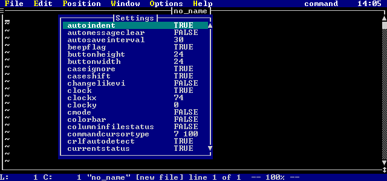
Figure 39. Vi Settings Selection list
When you are finished with the settings menus, you may close the window by pressing the ESC key.
Boolean Settings
The section contains descriptions of the boolean settings.
autoindent
- Syntax:
- autoindent [ai]
- Description:
- In text insertion mode, autoindent causes the cursor to move to start of previous line when a new line is started. In
command mode, autoindent causes the cursor to go to the first non white-space when ENTER is pressed.
automessageclear
- Syntax:
- automessageclear [ac]
- Description:
- Automatically erases the message window when a key is typed in command mode.
beepflag
- Syntax:
- beepflag [bf]
- Description:
- Vi normally beeps when an error is encountered. Setting nobeepflag disables the beeping.
caseignore
- Syntax:
- caseignore [ci]
- Description:
- Causes all searches to be case insensitive if set.
changelikevi
- Syntax:
- changelikevi [cv]
- Description:
- If set, then the change command behaves like UNIX Vi, i.e. if ESC is pressed when no change has been made, the text
is deleted. Normally, pressing ESC cancels the change without deleting the text.
cmode
- Syntax:
- cmode [cm]
- Description:
- When cmode is set, certain things will happen when you are entering text:
- After entering a line ending in '{', the next line will be indented a shiftwidth further than
the current one.
- After entering a line ending in '}', the current line is shifted to match the indentation of the line with the matching
'{'. The cursor will flash for a brief instant on the matching '{' if showmatch is set.
- All lines entered will have trailing white space trimmed off.
- "case" and "default" statements are shifted to be aligned with switch statements.
Each file has its own cmode setting; so setting cmode in one file and not in another (during the same editing session)
will work.
One thing that is useful is to add the following lines to your read hook script:
if %E == .c
set cmode
else
set nocmode
endif
This will cause cmode to be set if the file has a .c extension, and not to be set for any other type of file.
columninfilestatus
- Syntax:
- columninfilestatus [cs]
- Description:
- Causes the current column to be added to file status display (obtained when typing CTRL_G).
currentstatus
- Syntax:
- currentstatus [ct]
- Description:
- Enables the display of the current status on the menu bar. The position on the menu bar is controlled with currentstatuscolumn.
drawtildes
- Syntax:
- drawtildes [dt]
- Description:
- If drawtildes is true, then the all lines displayed that do not have any data associated with them will have a tilde ('~')
displayed on the line. If drawtildes is false, then no tidles will be displayed and the string fileendstring
will be displayed after the last line with data.
eightbits
- Syntax:
- eightbits [eb]
- Description:
- If eightbits is set, then all characters are displayed as normal. If noeightbits is set then non-printable ASCII will
be displayed as control characters.
escapemessage
- Syntax:
- escapemessage [em]
- Description:
- Display the current file status whenever the ESC key is pressed in command mode.
extendedmemory
- Syntax:
- extendedmemory [xm]
- Description:
- If extendedmemory is set, extended memory is used if it is present (standard extended, EMS, XMS). This option applies
to the real-mode DOS version of Vi only.
ignorectrlz
- Syntax:
- ignorectrlz [iz]
- Description:
- Normally, a CTRL_Z in a file acts as an end-of-file indicator. Setting ignorectrlz causes Vi to treat CTRL_Z as just
another character in the file. This option may also be selected using the '-z' option when invoking Vi.
ignoretagcase
- Syntax:
- ignoretagcase [it]
- Description:
- When using the "-t" command line option of Vi, the tag that is matched is normally case sensitive. Setting
ignoretagcase causes the tag matching to be case insensitive.
magic
- Syntax:
- magic [ma]
- Description:
- If magic is set, then all special characters in a regular expression are treated as "magic", and must be escaped
to be used in an ordinary fashion. If nomagic is set, then any special characters in magicstring
are NOT treated as magic characters by the regular expression handler, and must be escaped to have special meaning.
Magic characters are: ^$.[()|?+*\@
pauseonspawnerr
- Syntax:
- pauseonspawnerr [ps]
- Description:
- This option, if set, causes Vi to pause after spawning (running a system command) if there was an error, even if the system
command was spawned from a script. Normally, a command spawned from a script does not pause when control returns to
the editor.
quiet
- Syntax:
- quiet [qu]
- Description:
- When running in quiet mode, Vi does not update the screen. This is useful when running a complex script, so that the
activity of the editor is hidden. This option may be selected when invoking Vi by using the '-q' switch, causing Vi
to run in a 'batch mode'.
quitmovesforward
- Syntax:
- quitmovesforward [qf]
- Description:
- If this option is set, then when a file is quit, the next file in the list of files is moved to. Otherwise, the previous
file in the list of files is moved to.
readentirefile
- Syntax:
- readentirefile [rf]
- Description:
- If readentirefile is set, then the entire file is read into memory when it is edited. This is the default setting.
However, if noreadentirefile is set, then the file is only read into memory as it is needed. This option is useful
when you only want to look at the first few pages of a large file. This option may be selected when invoking Vi by
using the '-n' switch.
readonlycheck
- Syntax:
- readonlycheck [rc]
- Description:
- This option causes Vi to complain about modifications to read-only files every time the file is modified.
realtabs
- Syntax:
- realtabs [rt]
- Description:
- If norealtabs is set, then tabs are expanded to spaces when the file is read.
regsubmagic
- Syntax:
- regsubmagic [rm]
- Description:
- If noregsubmagic is set, then escaped characters have no meaning in regular expression substitution expressions.
samefilecheck
- Syntax:
- samefilecheck [sc]
- Description:
- Normally, Vi just warns you if you edit a file twice (with a different path). If samefilecheck is set, then if you edit
a file that is the same as a file already being edited (only you specified a different path), then that file will be brought
up, rather than a new copy being read in.
saveconfig
- Syntax:
- saveconfig [sn]
- Description:
- If this option is set, then the editor's configuration (fonts, colors, settings, etc) is saved when the editor is exited.
This option is only valid with the GUI versions of the editor.
saveposition
- Syntax:
- saveposition [so]
- Description:
- If this option is set, then the editor's position and size is saved when the editor is exited, and restored the next time
the editor is started.
This option is only valid with the GUI versions of the editor.
searchwrap
- Syntax:
- searchwrap [sw]
- Description:
- When searching a file, Vi normally wraps around the top or bottom of the file. If nosearchwrap is set, then Vi terminates
its searches once it reaches the top or bottom of the file.
showmatch
- Syntax:
- showmatch [sm]
- Description:
- If showmatch is set, the Vi briefly moves the cursor to a matching '(' whenever a ')' is typed while entering text.
Also, the matching '{' is shown if a '}' is typed if cmode is set.
tagprompt
- Syntax:
- tagprompt [tp]
- Description:
- If a more than one instance of a tag is found in the tags file, a list of choices is displayed if tagprompt is set.
undo
- Syntax:
- undo [un]
- Description:
- Setting noundo disables Vi's undo ability.
verbose
- Syntax:
- verbose [ve]
- Description:
- If enabled, this option causes Vi to display extra messages while doing involved processing.
wordwrap
- Syntax:
- wordwrap [ww]
- Description:
- If enabled, word movement commands ('w','W','b','B') will wrap to the next or previous line.
wrapbackspace
- Syntax:
- wrapbackspace [ws]
- Description:
- If this option is set, pressing backspace while on column one of a line will cause Vi to wrap to the end of the previous line
(while in text insertion mode).
writecrlf
- Syntax:
- writecrlf [wl]
- Description:
- Normally, lines are written with carriage return and line feeds at the end of each line. If nowritecrlf is set, the
lines are written with only a line feed at the end.
Mouse Control Booleans
The section contains descriptions of the boolean settings affecting the mouse.
lefthandmouse
- Syntax:
- lefthandmouse [lm]
- Description:
- When lefthandmouse is set, the right and left mouse buttons are inverted.
usemouse
- Syntax:
- usemouse [um]
- Description:
- This option enables/disables the use of the mouse in Vi.
Window Control Booleans
The section contains descriptions of the boolean settings affecting windows.
clock
- Syntax:
- clock [cl]
- Description:
- This enables/disables the clock display. The position of the clock is controlled by the clockx
and clocky set commands.
linenumbers
- Syntax:
- linenumbers [ln]
- Description:
- This option turns on the line number window. This window is displayed on the left-hand side of the edit window by default,
unless linenumsonright is set.
linenumsonright
- Syntax:
- linenumsonright [lr]
- Description:
- Setting linenumsonright causes the line number window to appear on the right-hand side of the edit window.
marklonglines
- Syntax:
- marklonglines [ml]
- Description:
- If this option is set, then any line that exceeds the with of the screen has the last character highlighted. If endoflinechar
is a non-zero ASCII value, then the last character is displayed as that ASCII value.
- Syntax:
- menus [me]
- Description:
- This option enables/disables the menu bar.
repeatinfo
- Syntax:
- repeatinfo [ri]
- Description:
- Normally, Vi echos the repeat count in the COUNTWINDOW as it is typed. Setting norepeatinfo
disables this feature.
spinning
- Syntax:
- spinning [sp]
- Description:
- If set, this option enables the busy-spinner. Whenever the editor is busy, a spinner will appear. The position
of the spinner is controlled using the spinx and the spiny set commands.
statusinfo
- Syntax:
- statusinfo [si]
- Description:
- If set, this option enables the status info window. This window contains the current line and column, and is controlled
using the STATUSWINDOW window command.
- Syntax:
- toolbar [tb]
- Description:
- This option enables/disables the toolbar.
This option is only valid with the GUI versions of the editor.
windowgadgets
- Syntax:
- windowgadgets [wg]
- Description:
- This option enables/disables gadgets on edit session windows.
Non-Boolean Settings
The section contains descriptions of the non-boolean settings.
autosaveinterval
- Syntax:
- autosaveinterval <seconds>
- Description:
- Sets the number of seconds between autosaves of the current file to the backup directory. Autosave is disabled if <seconds>
is 0. The backup directory is defined using the tmpdir parameter.
commandcursortype
- Syntax:
- commandcursortype <size>
- Description:
- Sets the size of the cursor when in command mode. Values for <size> are 0 to 100 (0=full size, 100=thin).
endoflinechar
- Syntax:
- endoflinechar <ascii_val>
- Description:
- If marklonglines is set, and <ascii_val> is non-zero, then the character in the last column
of a line wider than the screen is displayed as the ASCII value <ascii_val>.
exitattr
- Syntax:
- exitattr <attr>
- Description:
- Defines the attribute to be assigned to the screen when Vi is exited. The attribute is composed of a foreground and
a background color, (16 * background + foreground gives <attr>). The default is 7 (white text, black background).
This option is only valid with the character mode versions of the editor.
fileendstring
- Syntax:
- fileendstring <string>
- Description:
- If drawtildes is false, then the character string <string> will be displayed after the last
line with data.
grepdefault
- Syntax:
- grepdefault <rexexp>
- Description:
- Default files to search when using the FGREP or EGREP commands. <rexexp>
is a file matching regular expression, the default is *.(c|h) For more information, see the section File Matching Regular Expressions.
hardtab
- Syntax:
- hardtab <dist>
- Description:
- This controls the distance between tabs when a file is displayed. The default is 8 (4 on QNX).
historyfile
- Syntax:
- historyfile <fname>
- Description:
- If the history file is defined, your command and search history is saved across editing sessions in the file <fname>.
insertcursortype
- Syntax:
- insertcursortype <size>
- Description:
- Sets the size of the cursor when inserting text in text insertion mode. Values for <size> are 0 to 100 (0=full
size, 100=thin).
magicstring
- Syntax:
- magicstring <str>
- Description:
- If magic is not set, then the characters specified in <str> are NOT treated as magic characters
by the regular expression handler, and must be escaped to have special meaning.
Magic characters are: ^$.[()|?+*\@
maxclhistory
- Syntax:
- maxclhistory <numcmds>
- Description:
- Vi keeps a history of commands entered at the command line. <numcmds> sets the number of commands kept in the
history.
maxemsk
- Syntax:
- maxemsk <kbytes>
- Description:
- Sets the maximum number of kilobytes of EMS memory to be used by Vi (DOS real-mode version only).
This option can only be set during editor initialization.
maxfilterhistory
- Syntax:
- maxfilterhistory <numfiltercmds>
- Description:
- Vi keeps a history of the filter commands entered. <numfiltercmds> sets the number of filter commands kept in
the history.
maxfindhistory
- Syntax:
- maxfindhistory <numsearchcmds>
- Description:
- Vi keeps a history of search commands entered. <numsearchcmds> sets the number of search commands kept in the
history.
maxlinelen
- Syntax:
- maxlinelen <maxlne>
- Description:
- This parameter controls the maximum line length allowed by Vi. The default value is 512 bytes. Any lines longer
than <maxlne> are broken up into multiple lines.
maxpush
- Syntax:
- maxpush <num>
- Description:
- Controls the number of pushed file positions that will be remembered. Once more than <num> PUSH
or TAG commands have been issued, the first pushed positions are lost.
maxswapk
- Syntax:
- maxswapk <n>
- Description:
- Sets the maximum number of kilobytes of disk space to be used for temporary storage by Vi.
This option can only be set during editor initialization.
maxxmsk
- Syntax:
- maxxmsk <kbytes>
- Description:
- Sets the maximum number of kilobytes of XMS memory to be used by Vi (DOS real-mode version only).
This option can only be set during editor initialization.
pagelinesexposed
- Syntax:
- pagelinesexposed <lines>
- Description:
- Sets the number of lines of context left exposed when a page up/down is done. For example, if <lines> is set to
1, then when a page down key is pressed, the bottom line of the file will be visible at the top of the new page.
overstrikecursortype
- Syntax:
- overstrikecursortype <size>
- Description:
- Sets the size of the cursor when in overstriking text in text insertion mode. Values for <size> are 0 to
100 (0=full size, 100=thin).
radix
- Syntax:
- radix <rdx>
- Description:
- Sets the radix (base) of the results of using the command line command EVAL. The default is base
10.
shiftwidth
- Syntax:
- shiftwidth <nsp>
- Description:
- Sets the number of spaces inserted/deleted by the shift operators ('>' and '<'), CTRL_D and CTRL_T in text insertion
mode, and by autoindent and cmode when they are indenting.
stackk
- Syntax:
- stackk <kbytes>
- Description:
- Sets the size (in kilobytes) of the stack used by Vi. The minimum is 10. This can be set higher if you plan on
using nested scripts that go deeper than 4 or 5 levels.
This option can only be set during editor initialization.
statussections
- Syntax:
- statussections <sects>
- Description:
- The controls the appearance of the bars in the status window. A list of distances (in pixels) is given. This distance
is measured from the start of the status window. Each section may have something put in it via the statusstring
This option is only valid with the GUI versions of the editor.
statusstring
- Syntax:
- statusstring <str>
- Description:
- This controls what is displayed in the status window. Any characters may be in this string. Additionally, the
dollar sign ('$') is a special character. It is used in combination with other characters to represent special values:
- $<n>C current column number. If <n> is specified (a number), then the column number will be padded with
spaces so that the it occupies <n> characters.
- $D current date
- $H current hint text from menus or toolbar (GUI editors only)
- $<n>L current line number. If <n> is specified (a number), then the line number will be padded with
spaces so that the it occupies <n> characters.
- $M current mode the editor is in
- $T current time
- $n skip to next line in status window (character mode editors only)
- $$ replaced with a '$'
- $c replaced with a comma ','
- $[ skip to next block in the status window (GUI editors only)
- $| text will be centered (within current block for GUI editors)
- $> text will be right-justified (within current block for GUI editors)
- $< text will be left-justified (within current block for GUI editors)
A number may precede the L or the C, to indicate the amount of space that the string should occupy; for example, $6L will
cause the line number to always occupy at least 6 spaces.
The string may be surrounded by quotes if spaces are being used. The default status string setting for character
mode editors is:
set statusstring="L:$6L$nC:$6C"
For GUI editors, the default status string setting is:
set statusstring = "Ln:$5L$[Col:$3C$[Mode: $M$[$|$T$[$H"
shellprompt
- Syntax:
- shellprompt <string>
- Description:
- This setting controls what the prompt at the command line will be after using the SHELL command.
tabamount
- Syntax:
- tabamount <nsp>
- Description:
- Sets the number of spaces inserted when the tab key is pressed in a text insertion mode. If realtabs
is set, these spaces will be changed into tabs, based on the setting of hardtab.
tagfilename
- Syntax:
- tagfilename <fname>
- Description:
- This defines the file name that Vi is to use to locate tags in. The default is the name tags.
tmpdir
- Syntax:
- tmpdir <dir>
- Description:
- This is used to specify the directory where all temporary editor files are to be created.
This option can only be set during editor initialization.
word
- Syntax:
- word <str>
- Description:
- This defines the word used by Vi. <str> is a group of character pairs. Each pair defines a range; e.g.
09az defines the characters 0 through 9 and a thorough z. Any character in the ranges defined by <str> is considered
part of a word.
The default for word is "__09AZaz".
The word will be delimited by white space (spaces or tabs) and all characters not in the ranges defined by <str>.
wrapmargin
- Syntax:
- wrapmargin <margin>
- Description:
- If wrapmargin is set to a non-zero value, then word wrapping is enabled. As text is entered, the position of the cursor
is monitored. Once the cursor gets within <margin> characters of the right margin, the current word is moved
to a new line.
Mouse Control Values
The section contains descriptions of the non-boolean settings affecting the mouse.
mousedclickspeed
- Syntax:
- mousedclickspeed <ticks>
- Description:
- Sets the number of ticks between the first mouse button depress and the second mouse button depress for the action to count
as a double-click. A tick is approximately 1/18 of a second.
This option is only valid with the character mode versions of the editor.
mouserepeatdelay
- Syntax:
- mouserepeatdelay <ticks>
- Description:
- Sets the number of ticks between when a mouse button is depressed and when the button starts to "repeat".
A tick is approximately 1/18 of a second.
This option is only valid with the character mode versions of the editor.
mousespeed
- Syntax:
- mousespeed <speed>
- Description:
- Sets the speed of the mouse. <speed> may be in the range 0-31 (0 is the fastest, 31 is the slowest).
This option is only valid with the character mode versions of the editor.
wordalt
- Syntax:
- wordalt <str>
- Description:
- This defines the alternate word used when double clicking the mouse. <str> is defined in the same fashion as for
the word setting.
The default for wordalt is "::..\\__09AZaz".
Window Control Values
The section contains descriptions of the non-boolean settings affecting windows.
- Syntax:
- buttonheight <height>
- Description:
- Sets the height (in pixels) of the tools on the toolbar.
This option is only valid with the GUI versions of the editor.
- Syntax:
- buttonwidth <width>
- Description:
- Sets the width (in pixels) of the tools on the toolbar.
This option is only valid with the GUI versions of the editor.
clockx
- Syntax:
- clockx <x>
- Description:
- Sets the x-coordinate of where the clock is to be displayed, if clock is enabled.
This option is only valid with the character mode versions of the editor.
clocky
- Syntax:
- clocky <y>
- Description:
- Sets the y-coordinate of where the clock is to be displayed, if clock is enabled.
This option is only valid with the character mode versions of the editor.
currentstatuscolumn
- Syntax:
- currentstatuscolumn <col>
- Description:
- Controls which column current status information is displayed in on the the menu bar, if currentstatus
is enabled.
This option is only valid with the character mode versions of the editor.
cursorblinkrate
- Syntax:
- cursorblinkrate <ticks>
- Description:
- Controls the speed at which the cursor blinks at.
This option is only valid with the GUI versions of the editor.
gadgetstring
- Syntax:
- gadgetstring <str>
- Description:
- This string controls the characters that are used to draw the gadgets on the border. The characters in the string are
used as follows:
- top left corner of edit window
- top right corner of edit window
- bottom left corner of edit window
- bottom right corner of edit window
- left side of edit window
- top and bottom of edit window
- left side of file name on top of border of edit window
- right side of file name on top of border of edit window
- cursor up gadget on scroll bar
- cursor down gadget on scroll bar
- right side of edit window (scroll bar area)
- scroll thumb
This option is only valid with the character mode versions of the editor.
inactivewindowcolor
- Syntax:
- inactivewindowcolor <clr>
- Description:
- Sets the foreground color of an edit window border when it is inactive (not the current edit window). <clr> may
be 0-15, or one of the previously defined color keywords.
This option is only valid with the character mode versions of the editor.
maxtilecolors
- Syntax:
- maxtilecolors <n>
- Description:
- Controls the number of tile colors for tiled windows (when using the TILE command).
This option is only valid with the character mode versions of the editor.
maxwindowtilex
- Syntax:
- maxwindowtilex <x>
- Description:
- Defines the maximum number of windows that may be tiled together in the x direction when using the TILE
command.
This option is only valid with the character mode versions of the editor.
maxwindowtiley
- Syntax:
- maxwindowtiley <y>
- Description:
- Defines the maximum number of windows that may be tiled together in the y direction when using the TILE
command.
This option is only valid with the character mode versions of the editor.
movecolor
- Syntax:
- movecolor <attr>
- Description:
- Controls the color attributes of an edit window border when the window is being moved (either by using the mouse or by using
the MOVEWIN command). The attribute is composed of a foreground and a background color, (16
* background + foreground gives <attr>).
This option is only valid with the character mode versions of the editor.
resizecolor
- Syntax:
- resizecolor <attr>
- Description:
- Controls the color attributes of an edit window border when the window is being resized (either by using the mouse or by using
the RESIZE command). The attribute is composed of a foreground and a background color, (16 *
background + foreground gives <attr>).
This option is only valid with the character mode versions of the editor.
spinx
- Syntax:
- spinx <x>
- Description:
- Sets the x-coordinate of where the busy spinner is displayed, if spinning is enabled.
This option is only valid with the character mode versions of the editor.
spiny
- Syntax:
- spiny <y>
- Description:
- Sets the y-coordinate of where the busy spinner is displayed, if spinning is enabled.
This option is only valid with the character mode versions of the editor.
tilecolor
- Syntax:
- tilecolor <n fg bg>
- Description:
- Sets tile area <n> to have the foreground color <fg> and the background color <bg>.
The tile area <n> must be in the range 1 to maxtilecolors.
The colors may be in the range 0-15, or one of the previously defined color keywords.
This option is only valid with the character mode versions of the editor.
Regular Expressions
Regular expressions are a powerful method of matching strings in your text. Commands that use regular expressions
are:
- forward slash ('/') command mode key (search forwards)
- question mark ('?') command mode key (search backwards)
- forward slash ('/') command line address (search forwards)
- question mark ('?') command line address (search backwards)
- substitute command line command
- global command line command
- egrep command line command
- match command line command
Different characters in a regular expression match different things. A list of all special (or "magical")
characters is:
- A backslash ('\') followed by a single character other than new line matches that character.
- The caret ('^') matches the beginning of a line.
- The dollar sign ('$') matches the end of a line.
- The dot ('.') matches any character.
- A single character that does not have any other special meaning matches that character.
- A string enclosed in brackets [] matches any single character from the string. Ranges of ASCII character
codes may be abbreviated as in "a-z0-9". A ']' may occur only as the first character of the string.
A literal '-' must be placed where it cannot be mistaken as a range indicator. If a caret ('^') occurs as the first
character inside the brackets, then any characters NOT in the string are matched.
- A regular expression followed by an asterisk ('*') matches a sequence of 0 or more matches of the regular expression.
- A regular expression followed by a plus sign ('+') matches one or more matches of the regular expression.
- A regular expression followed by a question mark ('?') matches zero or one matches of the regular expression.
- Two regular expressions concatenated match a match of the first followed by a match of the second.
- Two regular expressions separated by an or bar ('|') match either a match for the first or a match for the second.
- A regular expression enclosed in parentheses matches a match for the regular expression.
- The order of precedence of operators at the same parenthesis level is the following: [], then
*+?, then concatenation, then |.
- All regular expressions following an at sign ('@') are to be treated as case sensitive, regardless of the setting of caseignore.
- All regular expressions following a tilde ('~') are to be treated as case insensitive, regardless of the setting of caseignore.
- If an exclamation point ('!') occurs as the first character in a regular expression, it causes the ignoring of the magic
setting; that is, all magic characters are treated as magical. An exclamation point ('!') is treated as a regular character
if it occurs anywhere but at the very start of the regular expression.
If a regular expression could match two different parts of the line, it will match the one which begins earliest.
If both begin in the same place but match different lengths, or match the same length in different ways, then the rules are
more complicated.
In general, the possibilities in a list of branches are considered in left-to-right order, the possibilities for `*',
`+', and `?' are considered longest-first, nested constructs are considered from the outermost in, and concatenated constructs
are considered leftmost-first. The match that will be chosen is the one that uses the earliest possibility in the first
choice that has to be made. If there is more than one choice, the next will be made in the same manner (earliest possibility)
subject to the decision on the first choice. And so forth.
For example, `(ab|a)b*c' could match `abc' in one of two ways. The first choice is between `ab' and `a'; since
`ab' is earlier, and does lead to a successful overall match, it is chosen. Since the `b' is already spoken for, the
`b*' must match its last possibility the empty string since it must respect the earlier choice.
In the particular case where no `|'s are present and there is only one `*', `+', or `?', the net effect is that the
longest possible match will be chosen. So `ab*', presented with `xabbbby', will match `abbbb'. Note that if `ab*'
is tried against `xabyabbbz', it will match `ab' just after `x', due to the begins-earliest rule.
Regular Expression BNF
A pseudo-BNF for regular expressions is:
- reg-exp
- {branch}|{branch}|...
branch
- {piece}{piece}...
piece
- {atom{* or + or ?}}{atom{* or + or ?}}... * - match 0 or more of the atom + - match 1 or more of the atom ? -
match a match of the atom, or the null string
atom
- (reg-exp) or range or ~ or @ or ^ or $ or \char or char
range
- [ {^} char and/or charlo-charhi ]
'^' causes negation of range.
.
- Match any character.
^
- Match start of line.
$
- Match end of line.
@
- What follows is to be searched with case sensitivity.
~
- What follows is to be searched without case sensitivity.
!
- If it occurs as the first character in a regular expression, it causes the ignoring of the magic setting;
that is, all magic characters are treated as magical. ! is treated as a regular character if it occurs
anywhere but at the very start of the regular expression.
char
- Any character.
\char
- Forces \char to be accepted as char (no special meaning) except \t matches a tab character if realtabs
is set.
File Matching Regular Expressions
When specifying a file name in Vi, it is possible to use a file matching regular expression. This expression is
similar to a regular expression, but has a couple of differences:
- A dot ('.') specifies an actual dot in the file name.
- An asterisk ('*') is equivalent to '.*' (matches 0 or more characters).
- A question mark ('?') is equivalent to a regular expression dot ('.'); i.e., a question mark matches exactly one character.
- Caret ('^') has no meaning.
- Dollar sign ('$') has no meaning.
- Backslash ('\') has no meaning (it is used as a directory separator).
Imagine the list of files:
a.c
abc.c
abc
bcd.c
bad
xyz.c
The following examples show how what files from the above list would be matched by various file name regular expressions:
a*.c - all files that start with 'a' and end in '.c'.
matches: "a.c"
and "abc.c"
(a|b)*.c - all files that start with an 'a' or a 'b' and end in '.c'
matches: "a.c" "abc.c"
and "bcd.c"
*d.c - all files that end in 'd.c'.
matches: "bcd.c"
* - all files.
*.* - all files that have a dot in them.
matches: a.c abc.c bcd.c xyz.c
Replacement Strings
If you are dealing with regular expression search and replace, then there are some special character sequences in the
replacement string.
- &
- Each instance of `&' in the replacement string is replaced by the entire string of matched characters.
\\
- Used to enter a '\' in the replacement string.
\n
- Replaced with a new line.
\t
- Replaced with a tab (if realtabs is set).
\<n>
- Each instance of <n>, where <n> is a digit from 0 to 9, is replaced by the n'th sub-expression in
the regular expression.
\u
- The next item in replacement string is changed to upper case.
\l
- The next item in replacement string is changed to lower case.
\U
- All items following \U in the replacement string are changed to upper case, until a \E or \e is encountered.
\L
- All items following \L in the replacement string are changed to lower case, until a \E or \e is encountered
\e
- Terminate a \U or \L
\E
- Terminate a \U or \L.
\|<n>
- Substitutes spaces up to column <n>, so that the item that follows occurs at column <n>.
\#
- Substitutes current line number that the match occurred on.
Controlling Magic Characters
By default, all special characters in a regular expression are "magical"; that is, if a special character is
used it has a special meaning. To use a special character, like (, it must be escaped: \(.
However, it is possible to change this using the magic setting and the magicstring
setting. If magic is set, then all special characters are magical. If magic
is NOT set, then any special characters listed in magicstring lose their special meaning, and
are treated as regular characters. For example, the following command line commands
set nomagic
set magicstring=()
set up Vi so that the brackets () lose their special meaning. To use the characters in their "magical"
way, they must be escaped with a \.
Replacement strings special character sequences can be disabled by turning off the regsubmagic
setting.
Regular Expression Examples
The following sections contain examples of regular expression usage for text matching and text replacement.
Matching Examples
This section gives examples of different types of regular expressions. Each example shows the regular expression,
the initial string, and the result. In the result, the part of the string that is matched is underlined.
a+
-
- String:
- defabc
- Matches:
- defabc
-
- String:
- aaabca
- Matches:
- aaabca
-
- String:
- zzzaaayyy
- Matches:
- zzzaaayyy
^a+
-
- String:
- defabc
- Matches:
- defabc
-
- String:
- aaabca
- Matches:
- aaabca
-
- String:
- zzzaaayyy
- Matches:
- zzzaaayyy
ab*
-
- String:
- xabc
- Matches:
- xabc
-
- String:
- abbbbbcabc
- Matches:
- abbbbbcabc
-
- String:
- dddacab
- Matches:
- dddacab
ab*$
-
- String:
- xabc
- Matches:
- abc
-
- String:
- abbbbbcabc
- Matches:
- abbbbbcabc
-
- String:
- dddacab
- Matches:
- dddacab
-
- String:
- defabbbbb
- Matches:
- defabbbbb
ab?
-
- String:
- abc
- Matches:
- abc
-
- String:
- abbbbbcabc
- Matches:
- abbbbbcabc
-
- String:
- acab
- Matches:
- acab
[abc]
-
- String:
- abc
- Matches:
- abc
-
- String:
- defb
- Matches:
- defb
-
- String:
- defcghi
- Matches:
- defcghi
a|b
-
- String:
- abc
- Matches:
- abc
-
- String:
- bac
- Matches:
- bac
-
- String:
- defabc
- Matches:
- defabc
[a-z]+
-
- String:
- abcdef
- Matches:
- abcdef
-
- String:
- abc0def
- Matches:
- abc0def
-
- String:
- 0abcdef
- Matches:
- 0abcdef
([^
-
- String:
- abc def
- Matches:
- abc def
(abc)|(def)
-
- String:
- abcdef
- Matches:
- abcdef
-
- String:
- zzzdefabc
- Matches:
- zzzdefabc
^(abc)|(def)
-
- String:
- abcdef
- Matches:
- abcdef
-
- String:
- zzzdefabc
- Matches:
- zzzdefabc
-
- String:
- zzzabcdef
- Matches:
- zzzabcdef
((abc)+|(def))ghi
-
- String:
- defabcghi
- Matches:
- defabcghi
-
- String:
- abcabcghi
- Matches:
- abcabcghi
-
- String:
- abcdefghi
- Matches:
- abcdefghi
-
- String:
- abcdef
- Matches:
- abcdef
Replacement Examples
Regular expressions and replacement expressions. Each example shows the regular expression and the replacement expression,
the initial string, the match, and the resulting string after the replacement.
The regular expression and the replacement are separated by forward slashes ('/'). For example, in the string
/([a-z]+)((a|b))/Test:\1\2/
([a-z]+)((a|b)) is the regular expression and Test:\1\2 is the replacement expression.
Editor Script Language
The Open Watcom Vi Editor supports a powerful command language. In a script, you may use any command line command,
along with a number of special commands explicitly for the script environment.
White space is ignored in a script file, unless a line starts with a right angle bracket ('>'). Comments may
be imbedded in a script file by starting the line with pound sign ('#').
A script is invoked using the command line command SOURCE. Examples are:
source test2.vi
source test.vi parm1 parm2 parm3 parm4
A script may be invoked with a set of optional parameters. These optional parameters are accessed in the script
by using %n. Every occurrence of %n in the script is replaced by the corresponding parameter. To
access parameter above 9, brackets must surround the number. This is because:
%10
cannot be distinguished from the variable %1 followed by a 0, and the variable %10. To remove
the ambiguity, brackets are used:
%(10)
All parameters can be accessed by using %*.
To allow multiple words in a single parameter, delimit the sequence by forward slashes ('/') or double quotes ('"').
For example, the line
source test.vi "a b c" d e
would cause the script test.vi to have the following variables defined:
%* = a b c d e
%1 = a b c
%2 = d
%3 = e
General variables, both local and global, are also supported in the editor script language. Any line in a script
that is not one of the script commands has all the variables on it expanded before the line is processed. Script commands
can manipulate the variables. For more information, see the section Script Variables
There are several useful command line commands dealing with Vi scripts, they are:
- compile
- Used to compile a script. This allows much faster execution of the script by Vi.
load
- Used to make a script resident in Vi. This allows much faster invocation of the script, since Vi does not have to search
for it or parse it.
If a system command is spawned from a script (using the exclamation point ('!') command), then Vi does not pause after
the system command is finished running. However, if you set pauseonspawnerr, then Vi
will pause after a system command is executed from a script if the system command returned an error.
Script Variables
General variables are supported in a Vi script. Variables are preceded by a percent symbol ('%'). Variables
with more than one letter must be enclosed by brackets, for example:
%a - references variable named a.
%(abc) - references variable named abc.
The brackets are required to disambiguate single letter variables followed by text from multiple letter variables.
Both local and global variables are supported. They are distinguished by the case of the first letter:
local variables must begin with a lower case letter, and global variables begin with an upper case variable. Example
variables:
%A - global variable named A.
%a - local variable named a.
%(AbC) - global variable named AbC.
%(abC) - local variable named abC.
Global variables are valid for the life of the editing session.
Local variables are only valid for the life of the script that they are used in.
Pre-defined Global Variables
There are a number of global variables that take on values as the editor runs, they are:
- %C
- Contains the current column number in the current edit buffer.
%D
- Drive of current file, based on the actual path.
%(D1)
- Drive of current file, as typed by the user. This could have no value.
%E
- File name extension of current file.
%F
- Current file name (including name and extension).
%H
- Home directory of a file. This is the directory where the edit command was issued.
%N
- Name of the current file, extension removed.
%M
- Modified status of the current file - set to 1 if the file has been modified, and a 0 otherwise.
%(OS)
- What operating system the editor is hosted on. Possible values are:
- dos (protect and real mode).
- unix (QNX, Linux or other Unix-based systems)
- os2
- os2v2
- nt
%(OS386)
- This variable is set to 1 is the host operating system is 386 (or higher) based. The possible 386 environments are:
- dos (protect mode).
- os2v2
- nt
- unix (when running on a 386)
%P
- Path of current file (no extension, name, or drive) based on the actual full path to the file.
%(P1)
- Path of current file (no extension, name, or drive) based on the name typed by the user. This could have no value.
%R
- Contains the current row (line number) in the current edit buffer.
%(SH)
- Height of entire screen in characters.
%(SW)
- Width of entire screen in characters.
%(Sysrc)
- Return code from last system command.
Hook Scripts
Vi has several hook points where a script, if defined by the user, is invoked. This allows you to intercept the
editor at key points to change its behaviour. A script that is invoked at a hook point is referred to as a hook
script.
Each hook script is identified by a particular global variable. Whenever Vi reaches a hook point, it checks
if the global variable is defined, and if it is, the global variables contents are treated like a script name, and that script
is invoked.
The hook points are:
- after a new file has been read.
- before a modified file is saved and exited.
- after return is pressed on the command line.
- whenever an unmodified file is modified.
- whenever a selected (highlighted) column range is chosen (via mouse click or keyboard).
- whenever a selected (highlighted) line range is chosen (via mouse click or keyboard).
- Read Hook
- The hook script is called just after a new file has been read into the editor.
The script invoked is the file specified by the global variable %(Rdhook).
Write Hook
- The hook script is called just before a modified file is to be saved and exited.
The script invoked is the file specified by the global variable %(Wrhook).
Command Hook
- The hook script is called after the return is pressed from the command line. The global variable %(Com) contains
the current command string, and may be modified. Whatever it is modified to is what will be processed by the command
line processor.
The script invoked is the file specified by the global variable %(Cmdhook).
Modified Hook
- The hook script is called whenever a command is about to modify an unmodified file. If the file is modified, the hook
is not called.
The script invoked is the file specified by the global variable %(Modhook).
Mouse Columns Sel Hook
- The hook script is called whenever a selected column range has been picked. Picking a selected region is done by right-clicking
the region with the mouse, or by double clicking the region with the mouse, or by using the underscore ('_') command mode
keystroke.
The script is invoked with the following parameters:
- %1
- The selected string.
%2
- Line on screen of selected string.
%3
- Column on screen of start of selected string.
%4
- Column on screen of end of selected string.
The script invoked is the file is specified by the global variable %(MCselhook).
Mouse Lines Sel Hook
- The hook script is called whenever a selected line range has been picked. Picking a selected region is done by right-clicking
the region with the mouse, or by double clicking the region with the mouse, or by using the underscore ('_') command mode
keystroke.
- %1
- Line on screen where selection request occurred.
%2
- Column on screen where selection request occurred.
%3
- First line of selected region.
%4
- Last line of selected region.
The script invoked is the file specified by the global variable %(MLselhook).
Script Expressions
Vi allows the use of constant expressions in its script language. Long integers and strings may be used in an expression.
Some sample expressions are:
5*3+12
(7*7)+10*((3+5)*8+9)
5 >= %(var)
("%(str)" == "foo") || ("%(str)" == "bar")
(5+%i*3 == 15)
rdonly == 1
An expression is composed of operators and tokens. Operators act on the tokens to give a final result.
A token in an expression may be a special keyword, a boolean setting value, an integer, or a string.
A string is indicated by surrounding the string with double quotes ("). A token is an integer if it starts
with a numeric digit (0 to 9).
If a token starts with a dot ('.'), then the remainder of the token is assumed to be a setting token. This token
evaluates to be 1 or 0 for a boolean setting, or to the actual value of the setting for all others.
.autoindent - 1 if autoindent is true, 0 otherwise
.ai - 1 if autoindent is true, 0 otherwise
.autosave - current value of autosave
.tmpdir - current tmpdir string
If a token is not surrounded by double quotes, and is not a keyword and is not an integer, then that token is assumed
to be a string.
If an expression contains conditional operators, then the result of the expression is a boolean value (1 or 0).
The following script language control flow commands expect boolean results:
The following are conditional operators in an expression:
- == (equal to)
- != (not equal to)
- > (greater than)
- >= (greater than or equal to)
- < (less than)
- <= (less than or equal to)
- && (boolean AND)
- || (boolean OR)
An expression may also operate on its token using various mathematical operators, these operators are
- + (plus)
- - (minus)
- * (multiply)
- / (divide)
- ** (exponentiation)
- ^ (bitwise NOT)
- | (bitwise OR)
- & (bitwise AND)
- >> (bit shift down)
- << (bit shift up)
Special keyword tokens are:
- ERR_???
- These are symbolic representations of all possible errors while executing in Vi. These values are found in error.dat.
These values are described in the appendix Error Code Tokens.
lastrc
- This keyword evaluates to the return code issued by the last command run in the script. Possible values to compare against
are found in error.dat. These values may are described in the appendix Error Code Tokens.
rdonly
- This keyword evaluates to 1 if the current file is read only, and 0 if it is not read only.
config
- This keyword evalutes to a number representing the current mode the screen is configured to. Possible values are:
- 100
- Screen is in color mode.
10
- Screen is in black and white mode.
1
- Screen is in monochrome mode.
This may be used to have different configurations built into your configuration script ed.cfg.
black
- This keyword evalutes to the integer representing the color black (0).
blue
- This keyword evalutes to the integer representing the color blue (1).
green
- This keyword evalutes to the integer representing the color green (2).
cyan
- This keyword evalutes to the integer representing the color cyan (3).
red
- This keyword evalutes to the integer representing the color red (4).
magenta
- This keyword evalutes to the integer representing the color magenta (5).
brown
- This keyword evalutes to the integer representing the color brown (6).
white
- This keyword evalutes to the integer representing the color white (7).
dark_gray
- This keyword evalutes to the integer representing the color dark_gray (8).
light_blue
- This keyword evalutes to the integer representing the color light_blue (9).
light_green
- This keyword evalutes to the integer representing the color light_green (10).
light_cyan
- This keyword evalutes to the integer representing the color light_cyan (11).
light_red
- This keyword evalutes to the integer representing the color light_red (12).
light_magenta
- This keyword evalutes to the integer representing the color light_magenta (13).
yellow
- This keyword evalutes to the integer representing the color yellow (14).
bright_white
- This keyword evalutes to the integer representing the color bright_white (15).
Script Expression BNF
This section describes a BNF for the construction of constant expressions.
- expression
- : conditional-exp
conditional-exp
- : log-or-exp
| log-or-exp ? expression : conditional-exp
log-or-exp
- : log-and-exp
| log-or-exp || log-and-exp
log-and-exp
- : bit-or-exp
| log-and-exp && bit-or-exp
bit-or-exp
- : bit-xor-exp
| bit-or-exp | bit-xor-exp
bit-xor-exp
- : bit-and-exp
| bit-xor-exp ^ bit-and-exp
bit-and-exp
- : equality-exp
| bit-and-exp & equality-exp
equality-exp
- : relational-exp
| equality-exp == relational-exp | equality-exp != relational-exp
relational-exp
- : shift-exp
| relational-exp > shift-exp
| relational-exp < shift-exp
| relational-exp >= shift-exp
| relational-exp <= shift-exp
shift-exp
- : additive-exp
| shift-exp << additive-exp
| shift-exp >> additive-exp
additive-exp
- : multiplicative-exp
| additive-exp + multiplicative-exp
| additive-exp - multiplicative-exp
multiplicative-exp
- : exponent-exp
| multiplicative-exp * exponent-exp
| multiplicative-exp / exponent-exp
| multiplicative-exp % exponent-exp
exponent-exp
- : unary-exp
| exponent-exp ** unary-exp
unary-exp
- : primary-exp
| - unary-exp
| ~ unary-exp
| ! unary-exp
primary-exp
- : token
| ( expression )
token
- : INTEGER
| STRING
| KEYWORD
Control Flow Commands
This section gives a brief overview of the control flow commands of the Vi script language. For a full description
of all script commands, see the next section Script Commands.
The LOOP Block
The loop block is similar to the do-while construct in C. The flow of the loop may be modified using
the BREAK, CONTINUE or QUIF script commands.
The loop may be set to run until a termination condition is met by using the loop - UNTIL
commands.
The loop may be set to run without any termination condition by using the loop - ENDLOOP
commands.
An overview of a loop block is:
loop
break
continue
quif <expr>
until <expr>
loop
break
continue
quif <expr>
endloop
The WHILE Block
The while block is similar to the while loop construct in C. The flow of the while loop may be modified
using the BREAK, CONTINUE or QUIF script commands.
The while loop is set up using the while - ENDWHILE commands.
An overview of the while block is:
while <expr>
break
continue
quif <expr>
endwhile
The IF Block
The if block is similar to the if-else construct in C.
An overview of the if block is:
if <expr>
elseif <expr>
elseif <expr>
else
endif
Script Commands
The following command descriptions show items within angle brackets (<>). The angle brackets are there to
indicate items that you may supply. You are not required to type the brackets. For example, <filename>
simply means that in the corresponding place in the command you should enter the name of a file. For example, <filename>
may be replaced with
test.c
and the brackets are not entered.
The command descriptions also show items inside double quotes ("). The double quotes are used to indicate
a literal option that you may supply. You are not required to type the quotes. For example, "-c" indicates
that in the corresponding place in the command you may enter -c.
In the syntax model for each command, the upper-case characters represent the minimal truncation of the command.
For example, in its syntax model, the ASSIGN command is specified as "ASSIGN", indicating that all the letters
are required (there are no abbreviations, only "assign" is accepted as the command).
The term <expr> is used to indicate an expression in the following commands. Expressions are discussed
in full detail in the section Script Expressions of this chapter.
Script variables are used by some of the following commands. Variables are discussed in full detail in the section
Script Variables
When a script command terminates, lastrc is sometimes set to a value. This value may be tested in an
expression. Script commands that set this have a Returns section.
ATOMIC
- Syntax:
- ATOMIC
- Description:
- This command causes all editing actions done by the script to all be part of one undo record. This way, the action of
the entire script can be eliminated with a single UNDO (command) i.e., it is an atomic action.
ASSIGN
- Syntax:
- ASSIGN <v1> = /<val>/"r$@xl"
- Description:
- This command is used to assign the value <val> to the variable <v1>.
The forward slashes ('/') around <val> are only need if there are spaces in <val>, or if one
of the special flags r, x, l, $ or @ is required at the end.
The special flags have the following meaning:
- r
- When this flag is used, <val> may contain regular expression replacement strings (using the last regular expression
searched for). For more information on regular expressions, see the chapter Regular Expressions.
l
- When this flag is used, <val> is assumed to be an expression that indicates a line number. The expression
is evaluated, and the data on the corresponding line number is assigned to <v1>.
x
- When this flag is used, <val> is assumed to be an expression, and is evaluated. The result is assigned
to <v1>. For another way of assigning expression results to a variable, see the EXPR
script command.
$ (dollar sign)
- When this flag is used, <val> is assumed to be the name of an operating system environment variable, and the
contents of that environment variable is what is assigned to <v1>.
@
- When this flag is used, <val> may be the name of one of the SET command parameters.
<v1> will be given the current value of that parameter.
<val> may be coded as a special operator. If <val> is coded this way, the forward slashes
('/') must NOT be used. The special operators are:
- strlen <v>
- Computes the length of the variable <v>. This value is assigned to <v1>.
strchr <v> <c>
- Computes the offset of the character <c> in the variable <v>. The offset is assigned to
<v1>. Note that the character <c> may be a variable, the value of which will be expanded before
offset is computed..
substr <v> <n1> <n2>
- Computes a substring of the string contained in the variable <v>. The substring is composed of characters
from offset <n1> to offset <n2>. The substring is assigned to <v1>. Note
that the parameters <n1> and <n2> may be variables, the values of which will be expanded before
the substring is computed.
- Example(s):
-
assign %a = foobar
The variable %a gets the string foobar assigned to it.
assign %(Path) = /path/$
The global variable %(Path) gets the data stored in the path environment variable assigned to it.
assign %b = strlen %a
Assigns the length of the contents of the local variable %a to the local variable %b. Assuming
the local variable %a has the string abcdefg assigned to it, then %b gets 7 assigned to it.
assign %b = strchr %a b
Assigns the offset of the letter b in the string contained in the local variable %a to the local variable
%b. Assuming the local variable %a has the string abcdefg assigned to it, then %b gets
2 assigned to it.
assign %(Substr) = substr %a 2 4
Assigns the characters from offset 2 to offset 4 in the string contained in the local variable %a to the global
variable %(Substr). Assuming the local variable %a has the string abcdefg assigned to it, then
%b gets bcd assigned to it.
assign %(res) = /abc %(str) def/
Assuming %(str) has been assigned the value xyz, then the string abc xyz def is assigned to the
local variable %(res)
assign %(Result) = /100*30+(50-17)*10/x
The value 3330 is assigned to the global variable %(Result).
- See Also:
- EXPR
BREAK
- Syntax:
- BREAK
- Description:
- Unconditionally exits the current looping block. This breaks out of LOOP - ENDLOOP,
LOOP - UNTIL and WHILE - ENDWHILE blocks.
- See Also:
- CONTINUE, ENDLOOP, ENDWHILE, LOOP,
QUIF, UNTIL, WHILE
CONTINUE
- Syntax:
- CONTINUE
- Description:
- Restarts the current looping block. This causes a jump to the top of LOOP - ENDLOOP,
LOOP - UNTIL and WHILE - ENDWHILE blocks.
- See Also:
- BREAK, ENDLOOP, ENDWHILE, LOOP, QUIF,
UNTIL, WHILE
ENDIF
- Syntax:
- ENDIF
- Description:
- Terminates an IF - ELSEIF - ELSE block.
- See Also:
- IF, ELSEIF, ELSE
ENDLOOP
- Syntax:
- ENDLOOP
- Description:
- Terminates a loop block. Control goes to the top of the current loop.
- See Also:
- BREAK, CONTINUE, ENDWHILE, LOOP,
QUIF, UNTIL, WHILE
ENDWHILE
- Syntax:
- ENDWHILE
- Description:
- Terminates a while block. Control goes to the top of the current while loop.
- See Also:
- BREAK, CONTINUE, ENDLOOP, LOOP, QUIF,
UNTIL, WHILE
ELSEIF
- Syntax:
- ELSEIF <expr>
- Description:
- An alternate case in an IF block. If the opening IF script command and none of the
elseif script commands prior to this one were executed, then this elseif is executed.
Any variables contained in <expr> are expanded before the expression is evaluated.
If <expr> is true, then the code following the elseif is executed. If <expr>
is false, control goes to the next elseif, ELSE or ENDIF command.
- See Also:
- IF, ELSE, ENDIF
ELSE
- Syntax:
- ELSE
- Description:
- This is the alternate case in an IF block. If none of the preceding IF or ELSEIF
statements are true, the code following the else command is executed.
- See Also:
- IF, ELSEIF, ENDIF
EXPR
- Syntax:
- EXPR <v1> = <expr>
- Description:
- Assigns the expression <expr> to the variable <v1>.
Any variables contained in <expr> are expanded before the expression is evaluated.
- Example(s):
-
expr %(Num) = 100*30+50
Assigns the value 3050 to the global variable %(Num).
expr %a = %(SW)-10
Assuming a screen width of 80, then this assigns the value 70 to the local variable %a.
- See Also:
- ASSIGN, EVAL
FCLOSE
- Syntax:
- FCLOSE <n>
- Description:
- Closes file previously opened with a FOPEN script command.
- Example(s):
-
fclose 1
Closes file 1.
- See Also:
- FOPEN, FREAD, FWRITE
FOPEN
- Syntax:
- FOPEN <name> <n> <how>
- Description:
- This command opens file <name>, assigning it file handle <n>.
<n> may be a value from 1 to 9. This number is used to identify the file for future FREAD,
FWRITE or FCLOSE script commands.
<how> specifies the method that the file is opened. Methods are:
- a
- Opens file for append.
r
- Opens file for read.
w
- Opens file for write.
x
- Checks if the file exists. This does not actually open the file, so no FCLOSE is required.
- Returns:
-
- ERR_NO_ERR.
- The setting of lastrc if the open/existence check is a success.
ERR_FILE_NOT_FOUND
- The setting of lastrc if the open/existence check is a fails.
- Example(s):
-
fopen test.dat 1 r
Opens file test.dat for read, and uses file handle 1.
fopen test.dat 2 w
Opens file test.dat for write, and uses file handle 2.
fopen test.dat 1 x
Tests if the file test.dat exists.
fopen test.dat 9 a
Opens file test.dat for append, and uses file handle 9.
- See Also:
- FCLOSE, FREAD, FWRITE
FREAD
- Syntax:
- FREAD <n> <v1>
- Description:
- Reads a line from the file identified by handle <n>. The line is stored in the variable <v1>.
- Returns:
-
- ERR_NO_ERR
- The setting of lastrc if the read was successful.
END_OF_FILE
- The setting of lastrc if end of file was encountered.
ERR_FILE_NOT_OPEN
- The setting of lastrc if the file being read was not opened with FOPEN.
- Example(s):
-
fread 1 %(line)
Reads the next line from file handle 1 into the variable %(line).
- See Also:
- FCLOSE, FOPEN, FWRITE
FWRITE
- Syntax:
- FWRITE <n> <v1>
- Description:
- Writes the contents of the variable <v1> to the file identified by handle <n>.
- Returns:
-
- ERR_NO_ERR
- The setting of lastrc if the write was successful.
ERR_FILE_NOT_OPEN
- The setting of lastrc if the file being written was not opened with FOPEN.
- Example(s):
-
fwrite 3 %(line)
Writes the contents of the variable %(line) to file handle 3.
- See Also:
- FCLOSE, FOPEN, FREAD
GET
- Syntax:
- GET <v1>
- Description:
- Waits for the user to type a single keystroke, and then assigns the keystroke into variable <v1>.
- Example(s):
-
get %(ch)
Waits for a key to be pressed, and then assigns the key to the local variable %(ch).
- See Also:
- FLOATMENU, INPUT
GOTO
- Syntax:
- GOTO <label>
- Description:
- Transfers control to point in script with label <label> defined.
- See Also:
- LABEL
IF
- Syntax:
- IF <expr>
- Description:
- Starts an if block.
Any variables contained in <expr> are expanded before the expression is evaluated.
If <expr> is true, then the code following the if is executed. If <expr> is
false, control goes to the next ELSEIF, ELSE or ENDIF command.
- See Also:
- ELSEIF, ELSE, ENDIF
- Syntax:
- INPUT <v1>
- Description:
- Open a window (the COMMANDWINDOW) and get a string from the user. The string is assigned
to the variable <v1>.
If <v1> was assigned a value before the input script command was executed, then that value is used
as a prompt string in the input window.
- Returns:
-
- ERR_NO_ERR.
- The setting of lastrc if a string was entered.
NO_VALUE_ENTERED
- The setting of lastrc if the user pressed ESC to cancel the input string.
- Example(s):
-
input %(str)
Get a string from the user, placing the result in the local variable %(str). If %(str) had no
previous value, then the user would be prompted with:
Enter Value:
However, if %(str) had the value Type in a filename:, then the user would be prompted with:
Type in a filename:
- See Also:
- FLOATMENU, GET
LABEL
- Syntax:
- LABEL <name>
- Description:
- Defines the a label with the name <name> at the current line in the script.
- See Also:
- GOTO
LOOP
- Syntax:
- LOOP
- Description:
- Start a loop block. This is the top of the block, after a CONTINUE, ENDLOOP
or UNTIL control returns to the instruction after the loop command.
- See Also:
- BREAK, CONTINUE, ENDLOOP, ENDWHILE,
LOOP, QUIF, UNTIL, WHILE
NEXTWORD
- Syntax:
- NEXTWORD <srcvar> <resvar>
- Description:
- Remove the next space-delimited word from the variable <srcvar>. The word is placed in the variable specified
by <srcvar>. Both <srcvar> and <resvar> must be variables only.
- Example(s):
-
nextword %a %b
If %a has 'this is a test' assigned to it, then after this command is processed, %a will have 'is a test'
assigned to it, and %b will have 'this' assigned to it.
QUIF
- Syntax:
- QUIF <expr>
- Description:
- Conditionally quit current loop or while loop block.
Any variables contained in <expr> are expanded before the expression is evaluated.
If <expr> is true, the current looping block is exited and execution resumes at the line after the end
of the current block.
If <expr> is false, execution continues at the next line.
- See Also:
- BREAK, CONTINUE, ENDLOOP, ENDWHILE,
LOOP, UNTIL, WHILE
RETURN
- Syntax:
- RETURN <rc>
- Description:
- Exit the script, returning <rc>.
If the script was invoked by another script, then this value becomes lastrc.
If the script was invoked at the command line, then this return code is reported as the appropriate error, if <rc>
is not ERR_NO_ERR.
There are symbolic values for various error codes. These values are described in the appendix Error Code Tokens.
UNTIL
- Syntax:
- UNTIL <expr>
- Description:
- Closes a loop block.
Any variables contained in <expr> are expanded before the expression is evaluated.
If <expr> is true, the first line after the loop block is executed.
If <expr> is false, then control is returned to the top of the loop block, and the loop executes again.
- See Also:
- BREAK, CONTINUE, ENDLOOP, ENDWHILE,
LOOP, QUIF, WHILE
WHILE
- Syntax:
- WHILE <expr>
- Description:
- Start a loop block. If <expr> is true, the body of the loop is executed. If <expr> is
false, execution transfers to the instruction after the ENDWHILE command.
Any variables contained in <expr> are expanded before the expression is evaluated.
This is the top of the block, after a CONTINUE or ENDWHILE control
returns to the while command.
- See Also:
- BREAK, CONTINUE, ENDLOOP, ENDWHILE,
LOOP, QUIF, UNTIL
Script Examples
The following section describes a number of the scripts that are provided with Vi. Each script is discussed in detail.
Example - err.vi
This is a simple script that edits a file that has the exact same name as the current file, only has the extension .err.
1) edit %D%P%N.err
Line 1
> edit %D%P%N.err
The global variable %D contains the drive of the current file. The global variable %P contains
the full path to the current file. The global variable %N contains the name of the current file (extension removed).
These are combined with the .err extension to create a full path to an error file. This file is edited.
Example - lnum.vi
This script prompts the user for a line number, and if a line number is entered, goes to that line.
1) assign %a = /Enter Line Number:/
2) input %a
3) if lastrc != NO_VALUE_ENTERED
4) %a
5) endif
Lines 1-2
> assign %a = /Enter Line Number:/
> input %a
These lines assigns the string Enter Line Number: to the local variable %a. This value
will be used by the INPUT command on line 2 to prompt the user.
Lines 3-5
> if lastrc != NO_VALUE_ENTERED
> %a
> endif
As long as the input was not cancelled by the user (by pressing the ESC key), the line the user typed is executed
directly. This assumes that the user will type a number.
Example - qall.vi
This script tries to quit each file being edited. If the file has been modified, the user is prompted if he wishes
to save the file. If he replies 'y', the file is saved. If he replies 'n', the file is discarded. If he
presses the ESC key and cancels the input, the script is exited.
1) loop
2)
3) quit
4) if lastrc == ERR_FILE_MODIFIED
5) assign %a = /Save "%F"
(y\/n)?/
6) input %a
7) quif lastrc == NO_VALUE_ENTERED
8) if "%a" == y
9) write
10) quit
11) else
12) quit!
13) endif
14) endif
15) quif lastrc != ERR_NO_ERR
16)
17) endloop
Line 1
> loop
Starts the loop.
Lines 3-4
> quit
> if lastrc == ERR_FILE_MODIFIED
Tries to to quit the file. If the quit command fails, and the return code is ERR_FILE_MODIFIED (the
QUIT command will fail if the file being abandoned is modified), then the code from lines 5-14 is executed.
Lines 5-6
> assign %a = /Save "%F" (y\/n)?/
> input %a
Assigns the string Save "<filename>" (y/n)? to the local variable %a. This
value will be used by the INPUT command on line 6 to prompt the user.
Line 7
> quif lastrc == NO_VALUE_ENTERED
This exits the main loop if the user cancels the input prompt by pressing the ESC key.
Lines 8-13
> if "%a" == y
> write
> quit
> else
> quit!
> endif
If the user typed the letter y, then the edit buffer is saved and exited, otherwise the contents of the edit buffer
are discarded.
Line 15
> quif lastrc != ERR_NO_ERR
This exits the main loop if any of the previous commands did not return the "everything is OK" return code,
ERR_NO_ERR.
Line 17
> endloop
Ends the loop. Control is returned to line 3.
Example - wrme.vi
This example is the default write hook script. This is called just before a edit buffer is saved and exited.
If the file has a null name, then the user is prompted for a name. If he cancels the prompt, then the save is aborted.
Otherwise, the new name is set and the save continues.
1) if "%F" != ""
2) return ERR_NO_ERR
3) endif
4) assign %a = /Enter file name:/
5) input %a
6) if lastrc == NO_VALUE_ENTERED
7) return DO_NOT_CLEAR_MESSAGE_WINDOW
8) endif
9) echo off
10) set filename = %a
11) echo on
12) return ERR_NO_ERR
Lines 1-3
> if "%F" != ""
> return ERR_NO_ERR
> endif
Checks if the current file name is the empty string. If it is not, then there is a filename and the script
returns ERR_NO_ERR to indicate that processing is to continue.
Lines 4-8
> assign %a = /Enter file name:/
> input %a
> if lastrc == NO_VALUE_ENTERED
> return DO_NOT_CLEAR_MESSAGE_WINDOW
> endif
The user is prompted with Enter a file name:. If he cancels the INPUT command by
pressing the ESC key, then the script returns DO_NOT_CLEAR_MESSAGE_WINDOW, which is not an error condition but causes
the save process to abort (remember, a hook point stops what it is doing if an non-zero return code is returned from the
hook script).
Line 9
> echo off
Echo is disabled so that the setting of the filename will not cause the normal message to appear in the message window.
Line 10
> set filename = %a
The filename is set to whatever the user typed in.
Line 11
> echo on
Echo is enabled.
Line 12
> return ERR_NO_ERR
The script returns ERR_NO_ERR to indicate that processing is to continue.
Example - proc.vi
This example prompts the user for a procedure name. If the user types one, then a procedure skeleton is added:
/*
* ProcName
*/
void ProcName( )
{
} /* ProcName */
and the user is left in input mode on the space before the closing bracket (')').
1) assign %a = /Procedure Name:/
2) input %a
3) if lastrc == NO_VALUE_ENTERED
4) return
5) endif
6) atomic
7) echo off
8) assign %x = /autoindent/@
9) set noautoindent
10) execute \e0o/*\n * %a\n */\n\e0ivoid %a( @ )\n{\n\n} /* %a */\n\e
11) if %x == 1
12) set autoindent
13) endif
14) -4
15) execute \e0f@x
16) echo on
17) echo 1 Procedure %a added
18) echo 2 " "
19) keyadd i
Lines 1-5
> assign %a = /Procedure Name:/
> input %a
> if lastrc == NO_VALUE_ENTERED
> return
> endif
The user is prompted with Procedure Name:. If he cancels the INPUT command by pressing
the ESC key, then the script exits.
Line 6
> atomic
The script is an ATOMIC one; so all modifications to the edit buffer can be undone with a single
UNDO (command).
Line 7
> echo off
Disables any output to the message window.
Line 8
> assign %x = /autoindent/@
This line gets the current state of the autoindent setting, and saves it the the local
variable %x.
Line 9
> set noautoindent
Turns off autoindent, so that the text to be inserted will line up properly.
Line 10
> execute \e0o/*\n * %a\n */\n\e0ivoid %a( @ )\n{\n\n} /* %a */\n\e
This line simulates the typing of a number of keystrokes at the keyboard. The effect of these keys is to generate
the following:
/*
* ProcName
*/
void ProcName( @ )
{
} /* ProcName */
Lines 11-13
> if %x == 1
> set autoindent
> endif
The local variable %x is set to the previous value of autoindent. If autoindent
was on before, then this turns it back on.
Line 14
> -4
This backs the cursor up to the line
void ProcName( @ )
Line 15
> execute \e0f@x
This line simulates the typing of a number of keystrokes at the keyboard. The effect of these keystrokes is
to move forward to the '@' character and delete it. This leaves the cursor in the position necessary to enter procedure
parameters.
Line 16
> echo on
Enables output to the message window.
Lines 17-18
> echo 1 Procedure %a added
> echo 2 " "
Displays a message.
Line 19
> keyadd i
Adds the key 'i' to the keyboard buffer. Once the script exits, Vi will process this key as if the user had
typed it. Thus, once the script is done, the user is left inserting text.
Command Mode Key Summary
The following is a list of all possible keys that may be pressed in command mode, and their default behaviour.
Commands preceded with a <n> take a repeat count.
Commands preceded with a <"?> accept a copy buffer name.
Commands that accept mark letter ('a'-'z') have a <?> in their definition.
The <oper> notation in the following commands indicates some sort of operator that the command will act
on. <oper> may be one of:
- A movement command. See the section Movement for a full description of all movement commands.
If a movement command is specified, then the range that the command will act on is from the current position to the
position that would be achieved by using the movement command.
- A search command:
- / (forward slash)
- ? (question mark)
- n
- N
See the section Searching for a full description of the searching commands. If a search
command is specified, then the range that the command will act on is from the current position to the position that would
be achieved by using the search command.
- The current selected (highlighted) region. In this case, <oper> is the r key.
- The same character as the command character. This causes the command to operate on the current line.
- <n>CTRL_B
- Move up one page.
<n>CTRL_D
- Move down a half page.
<n>CTRL_E
- Expose the line below the bottom line on the screen.
<n>CTRL_F
- Move down one page.
CTRL_G
- Display current file status.
CTRL_L
- Redraw the screen.
<n>CTRL_N
- Move to next line.
<n>CTRL_P
- Move to previous line.
CTRL_R
- Start text selection.
<n>CTRL_U
- Move up a half page.
CTRL_V
- Display current version.
CTRL_X
- Display hex value of character under cursor.
<n>CTRL_Y
- Expose the line before the top line on the screen.
CTRL_]
- Go to the tag indicated by the current word.
<n>SPACE
- Move the cursor right one character.
<n>!<oper>
- Run lines through a filter.
$
- Move to the end of the current line.
%
- Find the matching brace or other defined match item.
'<?>
- Go to the mark ?.
<n>+
- Go to the start of the next line.
,
- Perform the last f,t,F or T command, in the opposite direction.
<n>-
- Go to the start of the previous line.
.
- Repeat last command mode sequence that changed the edit buffer.
/
- Search forward for a string.
0
- Move to the first character on the current line.
:
- Enter a command line command.
;
- Perform the last f,t,F or T command.
<n><<oper>
- Shift lines to the left.
<n>><oper>
- Shift lines to the right.
?
- Search backwards for a string
@
- Execute a copy buffer as if it were typed at the keyboard.
A
- Start inserting text at the end of the current line.
<n>B
- Move back to the start of the previous space delimited word.
C
- Change characters from the current column to the end of the current line.
D
- Delete characters from the current column to the end of the current line.
<n>E
- Move forwards to the end of the next space delimited word.
F<n><?>
- Move backwards to a specified character.
<n>G
- Go to a specified line number.
<n>H
- Go to the top of the current edit window.
I
- Start inserting text at the first non-whitespace character on the current line.
<n>J
- Join the next line to the current line.
<n>L
- Go to the bottom of the current edit window.
M
- Go to the middle of the current edit window.
N
- Repeat the last find command, only search in the opposite direction.
O
- Open a blank line above the current line, and enter text insertion mode.
<"?>P
- Insert a copy buffer before the current position.
Q
- Enter EX mode.
R
- Enter text overstrike mode.
<n>S
- Substitute lines with other text.
T<?>
- Move backwards to the character after a specified character.
U
- Re-do (undoes the last undo).
<n>W
- Move forward to the start of the next space delimited word.
<n>X
- Delete the character before the current character.
<n>Y
- Yank (copy) lines.
Z
- If followed by another Z, saves the current file (if it has been modified) and quits the file.
^
- Move to the first non-whitespace character on the line.
_
- Simulate right-mouse button press.
`<?>
- Go to the line and column with the mark <?>.
a
- Start inserting text at the character after the current cursor position.
<n>b
- Move backwards to the start of the previous word.
<n>c<oper>
- Change text.
<"?><n>d<oper>
- Delete text.
<n>e
- Move to the end of the current word.
<n>f<?>
- Move forward to the character <?> on the current line.
<n>h
- Move left.
i
- Start inserting text at the current cursor position.
<n>j
- Move down one line.
<n>k
- Move up one line.
<n>l
- Move right.
m<?>
- Set the mark <?>.
n
- Repeat the last find command.
o
- Open a new line after the current line, and start inserting text.
<"?>p
- Insert a copy buffer at the current position in the edit buffer.
<n>r
- Replace the current character.
<n>s
- Substitute the current character with text.
<n>t<?>
- Move up to the character before the character <?> on the current line.
u
- Undo the last change.
<n>w
- Move to the start of the next word.
<n>x
- Delete the character at the cursor.
<n><"?>y<oper>
- Yank (copy) text.
<n>z<?>
- Reposition the current line.
<n>|
- Move to the specified column.
<n>~<oper>
- Toggle the case of text.
F1
- Move to the next file in the list of files being edited.
F2
- Move back to the previous file in the list of files being edited.
<n>UP
- Move up one line.
<n>DOWN
- Move down one line.
<n>LEFT
- Move left to the previous character.
<n>RIGHT
- Move right to the next character.
<n>PAGEUP
- Move up one page.
<n>PAGEDOWN
- Move down one page.
INS
- Start inserting text at the current cursor position.
<"?><n>DEL
- Delete the character at the current cursor position.
<n>BS
- Move left to the previous character.
<n>SHIFT_TAB
- Move left by a tab amount.
<n>ENTER
- Move to the start of the next line.
<n>TAB
- Move right by a tab amount.
HOME
- Move to the start of the current line.
END
- Move to the end of the current line.
CTRL_F1
- Make copy buffer 1 active.
CTRL_F2
- Make copy buffer 2 active.
CTRL_F3
- Make copy buffer 3 active.
CTRL_F4
- Make copy buffer 4 active.
CTRL_F5
- Make copy buffer 5 active.
CTRL_F6
- Make copy buffer 6 active.
CTRL_F7
- Make copy buffer 7 active.
CTRL_F8
- Make copy buffer 8 active.
CTRL_F9
- Make copy buffer 9 active.
ALT_M
- Display current memory state.
ALT_W
- Activate the current edit window menu.
ALT_X
- Insert a keystroke by entering the ASCII value.
CTRL_PAGEUP
- Move to the first character in the current edit buffer.
CTRL_PAGEDOWN
- Move to the last character in the current edit buffer.
<n>SHIFT_UP
- Start selection, and move up.
<n>SHIFT_DOWN
- Start selection, and move down.
<n>SHIFT_LEFT
- Start selection, and move left.
<n>SHIFT_RIGHT
- Start selection, and move right.
<"?>SHIFT_DEL
- Delete selected region.
<"?>SHIFT_INS
- Insert a copy buffer at the current position in the edit buffer.
The Open Watcom Vi Editor Error Messages
This appendix lists all of the various errors that Vi reports during its operation.
In the following error message text, there are certain special characters that you will not see when the message is
displayed; instead, something is filled in when you see it. These special characters are:
- %s
- An appropriate string is filled in by Vi.
%c
- An appropriate character is filled in by Vi.
%d
- An appropriate number is filled in by Vi.
- *+ operand could be empty
- A regular expression error, issued if you use * or + after an empty sub-expression.
?+* follows nothing
- A regular expression error, issued if you use a ?, + or * without using some sub-expression for them to operate on.
Already in dot mode
- You pressed dot ('.'), and the string that was executed tried to do another dot from command mode.
Already two marks on this line
- Only two marks are allowed on any line. This error is issued if you try to place a third mark on the line.
Cannot delete character
- You tried to delete a character that is not there.
Cannot insert the character value 0.
- You typed the number 0 at the prompt from the ALT_X command mode keystroke.
Cannot open line number window
- Vi could not open the line number window, probably due to an invalid position of the command window.
Case toggle has nothing following
- A regular expression error, issued if you use a case toggle operator (@ or ~) and do not place an expression after it.
Character '%c' not found
- You used a 't', 'T', 'f', 'F', ',' or ';' command mode keystroke, and the letter that you specified is not on the line.
Directory operation failed
- You tried to 'cd' to a directory that does not exist.
Empty copy buffer
- You tried to paste a copy buffer that has no contents.
End of file reached
- "nosearchwrap" is set and a search command got to the end of the edit buffer without finding a string.
Expecting :
- You coded an expression with the '?' operator and did not specify a ':'.
File close error
- The "fclose" script command failed - this probably indicates a problem with your hard disk.
File exists - use w! to force
- You attempted to write a file out with a new name that already exists.
File has no name
- You attempted to write a file that has not been given a name.
File is a tty
- The file names "con", "lptN", "nul", and "prn" are special TTY files. You attempted
to read or edit a file like this.
File is read only
- You attempted to modify a read-only file.
File is view only
- You attempted to modify a view-only file.
File modified - use :q! to force
- You attempted to quit a modified file.
File not FOPEN
- In a script, you attempted to "fread" or "fwrite" a file that you did not open with "fopen".
File not found
- Issued whenever Vi is looking for a file and it cannot be found.
File open error
- Vi will issue this error whenever a file cannot be opened. Typically, this happens when you try to edit a directory
as a file.
File read error
- This error occurs when Vi is trying to read a file. This could indicate that there is a problem with your hard disk.
File seek error
- This error occurs when Vi is trying to seek to a position in a file. This could indicate a problem with your hard disk.
File write error
- This error occurs when Vi is trying to write a file. This could indicate that your hard disk is full, or that there
is a problem with your hard disk.
File "error.dat" not found
- When a script is being processed, and an error token is needed, the file "error.dat" is loaded. If it cannot
be found, then this error is issued.
Input key map already running
- If another input key mapping is run while an input key map is running, this error is issued.
Insufficient stack for allocation
- Vi tried to do an operation and did not have enough stack space. Try increasing your stackk setting and trying the operation
again.
Internal err: Invalid undo record found - undo stacks purged
- Vi has encountered an internal error. Please note the circumstances of this error and, if possible, construct a small
test case that demonstrates the problem. You can then either file a bug report using OpenWatcom's Bugzilla (http://bugzilla.openwatcom.org),
or you can discuss the problem on one of the OpenWatcom newsgroups (news://news.openwatcom.org).
Internal err: Null pointer found
- Vi has encountered an internal error. Please note the circumstances of this error and, if possible, construct a small
test case that demonstrates the problem. You can then either file a bug report using OpenWatcom's Bugzilla (http://bugzilla.openwatcom.org),
or you can discuss the problem on one of the OpenWatcom newsgroups (news://news.openwatcom.org).
Internal err: Open undo
- Vi has encountered an internal error. Please note the circumstances of this error and, if possible, construct a small
test case that demonstrates the problem. You can then either file a bug report using OpenWatcom's Bugzilla (http://bugzilla.openwatcom.org),
or you can discuss the problem on one of the OpenWatcom newsgroups (news://news.openwatcom.org).
Internal err: Regexp corrupted pointer
- Vi has encountered an internal error. Please note the circumstances of this error and, if possible, construct a small
test case that demonstrates the problem. You can then either file a bug report using OpenWatcom's Bugzilla (http://bugzilla.openwatcom.org),
or you can discuss the problem on one of the OpenWatcom newsgroups (news://news.openwatcom.org).
Internal err: Regexp foulup
- Vi has encountered an internal error. Please note the circumstances of this error and, if possible, construct a small
test case that demonstrates the problem. You can then either file a bug report using OpenWatcom's Bugzilla (http://bugzilla.openwatcom.org),
or you can discuss the problem on one of the OpenWatcom newsgroups (news://news.openwatcom.org).
Internal err: Regexp memory corruption
- Vi has encountered an internal error. Please note the circumstances of this error and, if possible, construct a small
test case that demonstrates the problem. You can then either file a bug report using OpenWatcom's Bugzilla (http://bugzilla.openwatcom.org),
or you can discuss the problem on one of the OpenWatcom newsgroups (news://news.openwatcom.org).
Internal error: Regular expression NULL argument
- Vi has encountered an internal error. Please note the circumstances of this error and, if possible, construct a small
test case that demonstrates the problem. You can then either file a bug report using OpenWatcom's Bugzilla (http://bugzilla.openwatcom.org),
or you can discuss the problem on one of the OpenWatcom newsgroups (news://news.openwatcom.org).
Invalid abbreviation
- You did not enter an "abbrev" command correctly.
Invalid alias command
- You did not enter an "alias" command correctly.
Invalid ASSIGN
- You did not enter script "assign" command correctly.
Invalid case command
- You did not enter a valid operation after starting the case toggle ('~') command mode command.
Invalid change command
- You did not enter a valid operation after starting the change ('c') command mode command.
Invalid command
- You entered an invalid command line command.
Invalid conditional expression
- You did not code a script "if", "elseif", "quif", "until" or "while" statement
correctly.
Invalid data in file '%s' at line %d
- This error is issued if one of the .dat files (error.dat, errmsg.dat, keys.dat) contains invalid data.
Invalid delete command
- You did not enter a valid operation after starting the delete ('d') command mode command.
Invalid EXPR
- You coded an invalid "expr" script command.
Invalid FCLOSE
- You coded an invalid "fclose" script command.
Invalid find command
- You issued an invalid search command.
Invalid FOPEN
- You coded an invalid "fopen" script command.
Invalid FREAD
- You coded an invalid "fread" script command.
Invalid FWRITE
- You coded an invalid "fwrite" script command.
Invalid global command
- You issued an invalid "global" command line command.
Invalid GOTO
- You coded an invalid "goto" script command.
Invalid INPUT
- You coded an invalid "input" script command.
Invalid key '%c'
- You press a key that has no mapping in command mode.
Invalid LABEL
- You coded an invalid "label" script command.
Invalid line address
- You used a "copy" or "move" EX mode command, and specified an invalid destination line.
Invalid line range
- You used an invalid line range for a "global", "substitute" or shift (">" or "<")
command line command. This occurs if you use line number past the end of the file.
Invalid map command
- You issued an invalid "map" or "mapbase" command.
Invalid mark - use 'a'-'z'
- You attempted to set a mark that was not in the range 'a' to 'z'.
Invalid match command
- You issued an invalid "match" command line command.
Invalid menu
- You issued an invalid "menu" command line command.
Invalid redraw
- You did not specify a valid key after starting the 'z' command mode command - valid keys are dash ('-'), ENTER, and dot ('.').
Invalid copy buffer '%c' - use '1'-'9' or 'a'-'z'
- You tried to access an invalid copy buffer.
Invalid set command
- You tried to set a variable that does not exist.
Invalid setcolor command
- You issued an invalid "setcolor" command line command.
Invalid shift command
- You did not enter a valid operation after starting a shift ('<' or '>') command mode command.
Invalid substitute command
- You issued an improper "substitute" command line command.
Invalid tag found
- Your tags file contained an invalid tag entry.
Invalid window
- You attempted an operation on an undefined window, or the window that you attempted to define was invalid.
Invalid window data
- The parameters to "border", "text", "hilight", or "dimension" were invalid.
Invalid yank command
- You did not enter a valid operation after starting the yank ('y') command mode command.
invalid [] range
- A regular expression error, issued when you specified an invalid range inside the square brackets.
Label not found
- In a script, you attempted to "goto" a label that was not defined.
Mark '%c' no longer valid
- You tried to access a mark that has become invalid (the line or column that had the mark no longer exists).
Mark '%c' not set
- You tried to access an undefined mark.
Matching '%s' not found
- You used the command mode key '%' to look for a matching string to the string under the cursor, only the match could not be
found.
nested *?+
- A regular expression error, issued if you have two or more of the '*', '?' or '+' characters in a row.
No character to replace
- You used the command mode key 'r' to replace a character on an empty line.
No file specified
- You issued a "compile", "load" or "source" command, and did not specify a file. Another
source of this error is using the "write" command with a line range and not specifying a file name.
No more undos
- You issued an undo command, and there are no more undos to perform.
No more windows
- You exceeded the limit of 250 windows that can be open at the same time.
No previous search string
- You pressed 'n' or 'N' in command mode, but have not yet issued a search command.
No selection
- You used the 'r' operator with 'd', 'c', '~', '>', '<', '!' in command mode, but there is no selected region.
Another source of this error is specifying the pound sign ('#') as a line range on the command line, and having no selected
region.
No string specified
- You indicated that you are starting a string on the command line by using a double quote ('"') or forward slash ('/'),
but you did not specify any characters at all for the string.
No such abbreviation
- You attempted to use the command line command "unabbrev" for an abbreviation that does not exist.
No such alias
- You attempted to use the command line command "unalias" for an alias that does not exist.
No such drive
- You used the "cd" command line command to attempt to switch to a disk drive that does not exist.
No such line
- You specified a line number that does not exist in the current edit buffer.
Not enough room in line
- You attempted to add characters to a line, and the resulting line would be longer than the setting of "maxlinelen".
Not that many words
- You attempted a command mode command that tried to access more words than were on the current line.
Not valid while in ex mode
- You attempted to use a command from EX mode that was not allowed: an "edit" command line command with no parameter,
or a "read" command line command with no parameter.
Nothing to match
- You used the command mode percent ('%') keystroke, but there was nothing on the current line that could be matched.
Only valid in ex mode
- You attempted to use an EX mode only command from the command line: "append", "change", "insert",
or "list".
Out of memory
- The editor ran out of memory. Try removing some TSR's (terminate and stay resident programs) or increasing swap space
(maxswapk).
Repeat string too long
- You entered a repeat count with too many digits, only 9 digits are allowed.
Copy buffer too big
- You attempted to execute a copy buffer that is larger than 1024 bytes.
Script already loaded
- You attempted to load a script that was previously loaded.
String '%s' not found
- A search string cannot be found in the file.
Swap file full
- Vi ran out of space in the swap file, but needed more space. Increase the maxswapk setting.
Swap file open error
- Vi could not open a swap file. This could indicate that there are too many open files, or that the directory is full
(if the swap file is on the root directory), or a problem with your hard disk.
Swap file read error
- An error was encountered while attempting to read the swap file. This could indicate problems with your hard disk.
Swap file write error
- An error was encountered while attempting to read the swap file. This could indicate problems with your hard disk, or
that the disk is full.
Tag '%s' not found
- If the tag you have requested cannot be found in the tags file, this error is issued.
Too many ()
- A regular expression error. There is a limit of 21 nested parenthesis in a regular expression.
Too many match items
- When using the match command to add another match string. There is a limit of 9 different match pairs.
Top of file reached
- Issued if you have nosearchwrap set and a search command gets to the top of the edit buffer without finding a string.
Trailing \
- A regular expression error, issued if a backslash ('\') is the last character on a line. Since a backslash is an escape
character, it must always have a character following it.
Unmatched ()
- A regular expression error. You have an unequal number of open and closed round brackets.
Unmatched []
- A regular expression error. You have specified one square bracket, without using the matching one.
Warning: file is read only
- This warning is issued if "readonlycheck" is set. The message is issued every time you modify a read only
file.
The Open Watcom Vi Editor can utilize something known as tags to help you locate declarations of various objects in your
C, C++, and FORTRAN code.
In C or C++ files, tags will help you locate functions, typedefs, structs, enums and unions. In a C++ file,
you will also be able to locate classes.
Tags will help you find all function and subroutines in FORTRAN files.
Once you select a tag that you wish to locate (by either using the command mode key CTRL_] (control close square
bracket) or the command line command tag), Open Watcom Vi Editor searchs a special tag file for the specified tag.
The name of the tag file is determined by the setting of tagfilename, the default is tags.
If the tag is located in the tag file, then Open Watcom Vi Editor edits the file that contains the tag that you specified
and goes to the line with the definition on it, highlighting the line. If the tag is not found, you will get an error
message.
The tag file must be located somewhere in the directories specified in your PATH or EDPATH environment variable.
There is a special program provided for the creation of tag files. This program is called ctags.
It is used as follows:
Usage: ctags [-?admstqvx] [-f<fname>] [files] [@optfile]
[files] : source files (may be C,
C++, or FORTRAN)
file names may contain wild cards (* and ?)
[@optfile] : specifies an option file
Option File Directives:
option <opts>:
any command line options (no dashes).
an option line resets the d,m,s and t options.
they must be specified on option line to
remain in effect
file <flist>
: a list of files, separated by commas
Options: -? : print this
list
-a
: append output to existing tags file
-c
: add classes (C++ files)
-d
: add all #defines (C,C++ files)
-f<fname>
: specify alternate tag file (default is "tags")
-m
: add #defines (macros only) (C,C++ files)
-s
: add structs, enums and unions (C,C++ files)
-t
: add typedefs (C,C++ files)
-q
: quiet operation
-v
: verbose operation
-x
: add all possible tags (same as -cdst)
Options may be specified in a CTAGS environment variable
Symbolic Keystrokes
When mapping keys using the MAP command, and unmapping keys using the UNMAP command,
it is useful to be able to specify the key that you are mapping symbolically, especially if it is a function key, a cursor
key or other special key. There are a number of pre-defined keys symbols that are recognized when specifying which
key is being mapped/unmapped.
The next section describes the symbol used to represent the key, and what the key actually is. These symbols
are also used throughout this guide to represent a special key.
Symbols and Meaning
- ALT_A
- Alt key and A key.
ALT_B
- Alt key and B key.
ALT_C
- Alt key and C key.
ALT_D
- Alt key and D key.
ALT_DEL
- Alt key and delete key.
ALT_DOWN
- Alt key and cursor down key.
ALT_E
- Alt key and E key.
ALT_END
- Alt key and end key.
ALT_F
- Alt key and F key.
ALT_F1
- Alt key and F1 key.
ALT_F2
- Alt key and F2 key.
ALT_F3
- Alt key and F3 key.
ALT_F4
- Alt key and F4 key.
ALT_F5
- Alt key and F5 key.
ALT_F6
- Alt key and F6 key.
ALT_F7
- Alt key and F7 key.
ALT_F8
- Alt key and F8 key.
ALT_F9
- Alt key and F9 key.
ALT_F10
- Alt key and F10 key.
ALT_F11
- Alt key and F11 key.
ALT_F12
- Alt key and F12 key.
ALT_G
- Alt key and G key.
ALT_H
- Alt key and H key.
ALT_HOME
- Alt key and home key.
ALT_I
- Alt key and I key.
ALT_INS
- Alt key and insert key.
ALT_J
- Alt key and J key.
ALT_K
- Alt key and K key.
ALT_L
- Alt key and L key.
ALT_LEFT
- Alt key and cursor left key.
ALT_M
- Alt key and M key.
ALT_N
- Alt key and N key.
ALT_O
- Alt key and O key.
ALT_P
- Alt key and P key.
ALT_PAGEDOWN
- Alt key and page down key.
ALT_PAGEUP
- Alt key and page up key.
ALT_Q
- Alt key and Q key.
ALT_R
- Alt key and R key.
ALT_RIGHT
- Alt key and cursor right key.
ALT_S
- Alt key and S key.
ALT_T
- Alt key and T key.
ALT_TAB
- Alt key and tab key.
ALT_U
- Alt key and U key.
ALT_UP
- Alt key and cursor up key.
ALT_V
- Alt key and V key.
ALT_W
- Alt key and W key.
ALT_X
- Alt key and X key.
ALT_Y
- Alt key and Y key.
ALT_Z
- Alt key and Z key.
BS
- Backspace key.
CTRL_A
- Control key and A key.
CTRL_B
- Control key and B key.
CTRL_C
- Control key and C key.
CTRL_D
- Control key and D key.
CTRL_DEL
- Control key and delete key.
CTRL_DOWN
- Control key and cursor down key.
CTRL_E
- Control key and E key.
CTRL_END
- Control key and end key.
CTRL_F
- Control key and F key.
CTRL_F1
- Control key and F1 key.
CTRL_F2
- Control key and F2 key.
CTRL_F3
- Control key and F3 key.
CTRL_F4
- Control key and F4 key.
CTRL_F5
- Control key and F5 key.
CTRL_F6
- Control key and F6 key.
CTRL_F7
- Control key and F7 key.
CTRL_F8
- Control key and F8 key.
CTRL_F9
- Control key and F9 key.
CTRL_F10
- Control key and F10 key.
CTRL_F11
- Control key and F11 key.
CTRL_F12
- Control key and F12 key.
CTRL_G
- Control key and G key.
CTRL_H
- Control key and H key.
CTRL_HOME
- Control key and home key.
CTRL_I
- Control key and I key.
CTRL_INS
- Control key and insert key.
CTRL_J
- Control key and J key.
CTRL_K
- Control key and K key.
CTRL_L
- Control key and L key.
CTRL_LEFT
- Control key and cursor left key.
CTRL_M
- Control key and M key.
CTRL_N
- Control key and N key.
CTRL_O
- Control key and O key.
CTRL_P
- Control key and P key.
CTRL_PAGEDOWN
- Control key and page down key.
CTRL_PAGEUP
- Control key and page up key.
CTRL_Q
- Control key and Q key.
CTRL_R
- Control key and R key.
CTRL_RIGHT
- Control key and cursor right key.
CTRL_S
- Control key and S key.
CTRL_T
- Control key and T key.
CTRL_TAB
- Control key and tab key.
CTRL_U
- Control key and U key.
CTRL_UP
- Control key and cursor up key.
CTRL_V
- Control key and V key.
CTRL_W
- Control key and W key.
CTRL_X
- Control key and X key.
CTRL_Y
- Control key and Y key.
CTRL_Z
- Control key and Z key.
DEL
- Delete key.
DOWN
- Cursor down key.
END
- End key.
ENTER
- Enter key.
ESC
- Escape key.
F1
- F1 key.
F2
- F2 key.
F3
- F3 key.
F4
- F4 key.
F5
- F5 key.
F6
- F6 key.
F7
- F7 key.
F8
- F8 key.
F9
- F9 key.
F10
- F10 key.
F11
- F11 key.
F12
- F12 key.
HOME
- Home key.
INS
- Insert key.
LEFT
- Cursor left key.
PAGEDOWN
- Page down key.
PAGEUP
- Page up key.
RIGHT
- Cursor right key.
SHIFT_DEL
- Shift key and delete key.
SHIFT_DOWN
- Shift key and cursor down key.
SHIFT_F1
- Shift key and F1 key.
SHIFT_F2
- Shift key and F2 key.
SHIFT_F3
- Shift key and F3 key.
SHIFT_F4
- Shift key and F4 key.
SHIFT_F5
- Shift key and F5 key.
SHIFT_F6
- Shift key and F6 key.
SHIFT_F7
- Shift key and F7 key.
SHIFT_F8
- Shift key and F8 key.
SHIFT_F9
- Shift key and F9 key.
SHIFT_F10
- Shift key and F10 key.
SHIFT_F11
- Shift key and F11 key.
SHIFT_F12
- Shift key and F12 key.
SHIFT_INS
- Shift key and insert key.
SHIFT_LEFT
- Shift key and cursor left key.
SHIFT_RIGHT
- Shift key and cursor right key.
SHIFT_TAB
- Shift key and tab key.
SHIFT_UP
- Shift key and cursor up key.
TAB
- Tab key.
UP
- Cursor up key.
Error Code Tokens
These are the tokens defined in the file error.dat that you can use to identify different errors in an editor
script. A typical usage would be:
if lastrc != ERR_NO_ERR
... handle error ...
else
... no error ...
endif
- END_OF_FILE
- Returned if a fread command is done at the end of file.
ERR_DIRECTORY_OP_FAILED
- Returned if the last cd command was to a non-existent directory.
ERR_FILE_EXISTS
- Returned if the last write command tried to overwrite an existing file.
ERR_FILE_MODIFIED
- Returned if you attempt to quit a modified file.
ERR_FILE_NOT_FOUND
- Returned by the read command or the fopen command if the file could not be found.
ERR_FILE_VIEW_ONLY
- Returned if you attempt to modify a view only file.
ERR_FIND_END_OF_FILE
- Returned if nosearchwrap is set, and the last search command encountered the end of the edit buffer.
ERR_FIND_NOT_FOUND
- Returned if the last search command didn't find the string.
ERR_FIND_TOP_OF_FILE
- Returned if nosearchwrap is set, and the last search command encountered the top of the edit buffer.
ERR_INVALID_COMMAND
- Returned if the last command was invalid.
ERR_INVALID_SET_COMMAND
- Returned if the last set command was an invalid one.
ERR_NO_ERR
- Returned if the last operation was a success.
ERR_NO_FILE_NAME
- Returned if you attempt to write a file with no file name.
ERR_NO_MORE_UNDOS
- Returned if the last undo command didn't undo anything.
ERR_NO_SUCH_DRIVE
- Returned if the last cd command was to a non-existent drive.
ERR_NO_SUCH_LINE
- Returned if the last movement command went to an invalid line.
ERR_READ_ONLY_FILE
- Returned if you attempt to modify a read only file.
NEW_FILE
- Value of lastrc in a read hook script, if the file just edited was a new file.
NO_VALUE_ENTERED
- Returned if an input command was cancelled by the user.